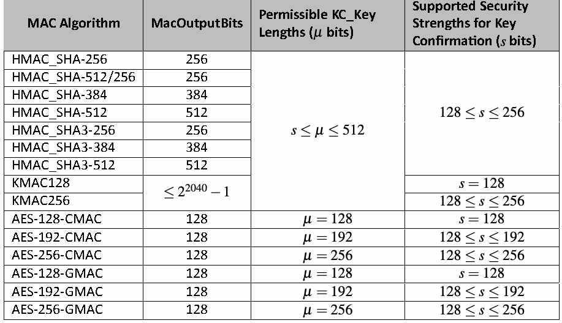

NIST Special Publication · PDF 原文抽出
Recommendations for Key-Encapsulation Mechanisms
鍵カプセル化メカニズムに関する勧告
NIST SP 800-227（Recommendations for Key-Encapsulation Mechanisms）の英文と日本語訳を段落ごとに並べた閲覧用ページです。鍵カプセル化メカニズム（KEM）の基本定義、性質、用途を説明し、安全な実装と利用に関する勧告を示します。 翻訳は非公式です。要件の確認にはNIST の正式版 PDFを参照してください。
PDF から抽出した原文は原本との照合待ちです。
PDF p.17: 二段組の可能性があるため読み順を原本と照合してください
PDF p.23: 二段組の可能性があるため読み順を原本と照合してください
PDF p.24: 二段組の可能性があるため読み順を原本と照合してください
PDF p.25: 二段組の可能性があるため読み順を原本と照合してください
PDF p.30: 二段組の可能性があるため読み順を原本と照合してください
PDF p.31: 二段組の可能性があるため読み順を原本と照合してください
PDF p.33: 二段組の可能性があるため読み順を原本と照合してください
PDF p.35: 二段組の可能性があるため読み順を原本と照合してください
PDF p.36: 二段組の可能性があるため読み順を原本と照合してください
PDF p.38: 二段組の可能性があるため読み順を原本と照合してください
PDF p.39: 二段組の可能性があるため読み順を原本と照合してください
PDF p.44: 二段組の可能性があるため読み順を原本と照合してください
PDF p.45: 二段組の可能性があるため読み順を原本と照合してください
PDF p.46: 二段組の可能性があるため読み順を原本と照合してください
PDF p.47: 二段組の可能性があるため読み順を原本と照合してください
PDF p.48: 二段組の可能性があるため読み順を原本と照合してください
PDF p.49: 二段組の可能性があるため読み順を原本と照合してください
PDF p.50: 二段組の可能性があるため読み順を原本と照合してください
NIST Special Publication 800
NIST特別刊行物800
未レビュー訳NIST SP 800-227
NIST SP 800-227
未レビュー訳Recommendations for Key-Encapsulation
鍵カプセル化に関する勧告
未レビュー訳Mechanisms
メカニズム
未レビュー訳Gorjan Alagic Elaine Barker Lily Chen Dustin Moody Angela Robinson Hamilton Silberg Noah Waller
Gorjan Alagic、Elaine Barker、Lily Chen、Dustin Moody、Angela Robinson、Hamilton Silberg、Noah Waller
未レビュー訳This publication is available free of charge from: https://doi.org/10.6028/NIST.SP.800-227
本刊行物は次のURLから無料で入手できる：https://doi.org/10.6028/NIST.SP.800-227
未レビュー訳
PDF原本のp.1にある図
NIST Special Publication 800
NIST特別刊行物800
未レビュー訳NIST SP 800-227
NIST SP 800-227
未レビュー訳Recommendations for Key-Encapsulation
鍵カプセル化メカニズムに関する
未レビュー訳Mechanisms
勧告
未レビュー訳Gorjan Alagic Elaine Barker Lily Chen Dustin Moody Angela Robinson Hamilton Silberg Noah Waller
Gorjan Alagic、Elaine Barker、Lily Chen、Dustin Moody、Angela Robinson、Hamilton Silberg、Noah Waller
未レビュー訳Computer Security Division Information Technology Laboratory
コンピュータセキュリティ部門／情報技術研究所
未レビュー訳This publication is available free of charge from: https://doi.org/10.6028/NIST.SP.800-227
本刊行物は次のURLから無料で入手できる：https://doi.org/10.6028/NIST.SP.800-227
未レビュー訳September 2025
2025年9月
未レビュー訳U.S. Department of Commerce Howard Lutnick, Secretary
米国商務省 Howard Lutnick長官
未レビュー訳National Institute of Standards and Technology
米国国立標準技術研究所
未レビュー訳Craig Burkhardt, Acting Under Secretary for Standards and Technology and Acting NIST Director
Craig Burkhardt、標準技術担当商務次官代理兼NIST所長代理
未レビュー訳Certain commercial equipment, instruments, software, or materials, commercial or non-commercial, are identified in this paper in order to specify the experimental procedure adequately. Such identification does not imply recommendation or endorsement of any product or service by NIST, nor does it imply that the materials or equipment identified are necessarily the best available for the purpose.
本稿では、実験手順を十分に明確にするため、特定の市販または非市販の機器、計測器、ソフトウェア、もしくは材料を識別している。これらを識別したことは、NISTがいかなる製品またはサービスも推奨もしくは保証することを意味しない。また、識別した材料または機器が、当該目的に利用可能な最良のものであることを意味するものでもない。
未レビュー訳There may be references in this publication to other publications currently under development by NIST in accordance with its assigned statutory responsibilities. The information in this publication, including concepts and methodologies, may be used by federal agencies even before the completion of such companion publications. Thus, until each publication is completed, current requirements, guidelines, and procedures, where they exist, remain operative. For planning and transition purposes, federal agencies may wish to closely follow the development of these new publications by NIST.
本刊行物では、NISTが割り当てられた法定責任に基づいて現在策定中の他の刊行物を参照している場合がある。本刊行物に含まれる情報（概念および方法論を含む）は、関連する刊行物が完成する前であっても連邦機関が利用できる。したがって、各刊行物が完成するまでは、現行の要件、指針および手順が存在する場合、それらは引き続き有効である。計画および移行のため、連邦機関はNISTによるこれらの新刊行物の策定状況を注意深く確認するとよい。
Organizations are encouraged to review all draft publications during public comment periods and provide feedback to NIST. Many NIST cybersecurity publications, other than the ones noted above, are available at https://csrc.nist.gov/publications.
組織は、パブリックコメント期間中にすべての草案を確認し、NISTに意見を提出することが推奨される。上記に記載したものを除くNISTのサイバーセキュリティ刊行物の多くは、https://csrc.nist.gov/publications で入手できる。
未レビュー訳Authority This publication has been developed by NIST in accordance with its statutory responsibilities under the Federal Information Security Modernization Act (FISMA) of 2014, 44 U.S.C. § 3551 et seq., Public Law (P.L.) 113-283. NIST is responsible for developing information security standards and guidelines, including minimum requirements for federal information systems, but such standards and guidelines shall not apply to national security systems without the express approval of appropriate federal officials exercising policy authority over such systems. This guideline is consistent with the requirements of the Office of Management and Budget (OMB) Circular A-130.
権限 本刊行物は、2014年連邦情報セキュリティ近代化法（FISMA）44 U.S.C. § 3551以下、Public Law（P.L.）113-283に基づくNISTの法定責任に従って作成された。NISTは、連邦情報システムの最低要件を含む情報セキュリティ標準およびガイドラインの策定を担う。ただし、これらの標準およびガイドラインは、国家安全保障システムに関する政策権限を行使する適切な連邦当局者の明示的な承認がない限り、国家安全保障システムには適用されない。本ガイドラインは、行政管理予算局（OMB）回章A-130の要件と整合している。
Nothing in this publication should be taken to contradict the standards and guidelines made mandatory and binding on federal agencies by the Secretary of Commerce under statutory authority. Nor should these guidelines be interpreted as altering or superseding the existing authorities of the Secretary of Commerce, Director of the OMB, or any other federal official. This publication may be used by nongovernmental organizations on a voluntary basis and is not subject to copyright in the United States. Attribution would, however, be appreciated by NIST.
本刊行物のいかなる内容も、法定権限に基づき商務長官が連邦機関に義務付け、拘束力を持たせた標準およびガイドラインに矛盾すると解釈してはならない。また、本ガイドラインは、商務長官、OMB長官、その他の連邦当局者が持つ既存の権限を変更または置き換えるものと解釈してはならない。本刊行物は非政府組織が任意に利用でき、米国内で著作権の対象とはならない。ただし、NISTへの出典表示を歓迎する。
NIST Technical Series Policies Copyright, Use, and Licensing Statements NIST Technical Series Publication Identifier Syntax
NIST技術シリーズの方針、著作権・使用・ライセンスに関する声明、NIST技術シリーズ刊行物識別子の構文
未レビュー訳Publication History Approved by the NIST Editorial Review Board on 2025-09-03
刊行履歴 NIST編集審査委員会により2025-09-03に承認
未レビュー訳How to cite this NIST Technical Series Publication: Alagic G, Barker EB, Chen L, Moody D, Robinson A, Silberg H, Waller N (2025) Recommendations for Key-Encapsulation Mechanisms. (National Institute of Standards and Technology, Gaithersburg, MD), NIST Special Publication (SP) NIST SP 800-227. https://doi.org/10.6028/NIST.SP.800-227
本NIST技術シリーズ刊行物の引用方法：Alagic G、Barker EB、Chen L、Moody D、Robinson A、Silberg H、Waller N（2025）『鍵カプセル化メカニズムに関する勧告』（米国国立標準技術研究所、メリーランド州ゲイザースバーグ）、NIST特別刊行物（SP）NIST SP 800-227。https://doi.org/10.6028/NIST.SP.800-227
未レビュー訳Author ORCID iDs Gorjan Alagic: 0000-0002-0107-6037 Elaine Barker: 0000-0003-0454-0461 Lily Chen: 0000-0003-2726-4279 Dustin Moody: 0000-0002-4868-6684 Angela Robinson: 0000-0002-1209-0379 Hamilton Silberg: 0009-0004-4178-8954 Noah Waller: 0000-0002-6979-9725
著者のORCID iD Gorjan Alagic：0000-0002-0107-6037、Elaine Barker：0000-0003-0454-0461、Lily Chen：0000-0003-2726-4279、Dustin Moody：0000-0002-4868-6684、Angela Robinson：0000-0002-1209-0379、Hamilton Silberg：0009-0004-4178-8954、Noah Waller：0000-0002-6979-9725
未レビュー訳Contact Information sp800-227-comments@nist.gov
問い合わせ先 sp800-227-comments@nist.gov
未レビュー訳Additional Information Additional information about this publication is available at https://csrc.nist.gov/pubs/sp/800/227/final, including related content, potential updates, and document history.
追加情報 本刊行物に関する追加情報は、https://csrc.nist.gov/pubs/sp/800/227/final で入手できる。関連コンテンツ、更新の可能性、および文書履歴も掲載している。
All comments are subject to release under the Freedom of Information Act (FOIA).
すべてのコメントは、情報公開法（FOIA）に基づく公開の対象となる。
Abstract
概要
A key-encapsulation mechanism (KEM) is a set of algorithms that can be used by two par-ties under certain conditions to securely establish a shared secret key over a public channel. A shared secret key that is established using a KEM can then be used with symmetric-key cryptographic algorithms to perform essential tasks in secure communications, such as encryption and authentication. This document describes the basic definitions, properties, and applications of KEMs. It also provides recommendations for implementing and using KEMs in a secure manner.
鍵カプセル化メカニズム（KEM）は、一定の条件下で2者が公開チャネルを介して共有秘密鍵を安全に確立するために使用できるアルゴリズム群である。KEMを用いて確立した共有秘密鍵は、その後、対称鍵暗号アルゴリズムと組み合わせて、暗号化や認証など、安全な通信に不可欠な処理に使用できる。本書では、KEMの基本的な定義、性質、および用途を説明する。また、KEMを安全に実装し使用するための勧告も示す。
未レビュー訳Keywords
キーワード
未レビュー訳cryptography; encryption; key-encapsulation mechanism; key establishment; public-key cryptography.
暗号技術；暗号化；鍵カプセル化メカニズム；鍵確立；公開鍵暗号
未レビュー訳Reports on Computer Systems Technology
コンピュータシステム技術報告書
The Information Technology Laboratory (ITL) at the National Institute of Standards and Technology (NIST) promotes the U.S. economy and public welfare by providing technical leadership for the Nation’s measurement and standards infrastructure. ITL develops tests, test methods, reference data, proof of concept implementations, and technical analyses to advance the development and productive use of information technology. ITL’s respon-sibilities include the development of management, administrative, technical, and physical standards and guidelines for the cost-effective security and privacy of other than national security-related information in federal information systems. The Special Publication 800-series reports on ITL’s research, guidelines, and outreach efforts in information system se-curity, and its collaborative activities with industry, government, and academic organiza-tions.
米国国立標準技術研究所（NIST）の情報技術研究所（ITL）は、米国の計量・標準基盤に関する技術的リーダーシップを発揮し、米国経済と公共の福祉を促進している。ITLは、情報技術の発展と効果的な利用を促すため、試験、試験方法、参照データ、概念実証の実装、および技術分析を開発する。ITLの責務には、連邦情報システムにおける国家安全保障関連情報以外の情報を、費用対効果の高い方法で保護し、プライバシーを確保するための管理、運用、技術、および物理的な標準とガイドラインの策定が含まれる。特別刊行物800シリーズは、情報システムセキュリティに関するITLの研究、ガイドライン、普及活動、および産業界、政府、学術機関との協働活動を報告する。
未レビュー訳Patent Disclosure Notice
特許開示に関する通知
未レビュー訳NOTICE: ITL has requested that holders of patent claims whose use may be required for compliance with the guidance or requirements of this publication disclose such patent claims to ITL. However, holders of patents are not obligated to respond to ITL calls for patents and ITL has not undertaken a patent search in order to identify which, if any, patents may apply to this publication.
通知：本刊行物のガイダンスまたは要件への準拠に特許請求の使用が必要となる可能性があるため、ITLは該当する特許請求を保有する者に対し、その開示を求めている。ただし、特許保有者はITLによる特許の照会に回答する義務を負わず、ITLは本刊行物に適用され得る特許の有無を特定するための特許調査を実施していない。
未レビュー訳As of the date of publication and following call(s) for the identification of patent claims whose use may be required for compliance with the guidance or requirements of this publication, no such patent claims have been identified to ITL.
刊行日時点で、本刊行物のガイダンスまたは要件への準拠に使用が必要となる可能性のある特許請求の特定を求めたが、ITLに対して特定された該当する特許請求はない。
No representation is made or implied by ITL that licenses are not required to avoid patent infringe-ment in the use of this publication.
本刊行物を使用する際に特許侵害を避けるためのライセンスが不要であると、ITLが表明または暗示するものではない。
未レビュー訳Table of Contents
目次
1. Introduction . . . . . . . . . . . . . . . . . . . . . . . . . . . . . . . . . . . . . . . . 1
1. はじめに — 1
未レビュー訳1.1. Background . . . . . . . . . . . . . . . . . . . . . . . . . . . . . . . . . . . . . 1
1.1. 背景 — 1
未レビュー訳1.2. Scope and Purpose . . . . . . . . . . . . . . . . . . . . . . . . . . . . . . . . . 1
1.2. 適用範囲および目的 — 1
未レビュー訳1.3. Requirements . . . . . . . . . . . . . . . . . . . . . . . . . . . . . . . . . . . . 2
1.3. 要求事項 — 2
未レビュー訳2. Overview of Key-Encapsulation Mechanisms . . . . . . . . . . . . . . . . . . . . . 4
2. 鍵カプセル化メカニズムの概要 — 4
未レビュー訳2.1. Overview and Motivation . . . . . . . . . . . . . . . . . . . . . . . . . . . . . 4
2.1. 概要と動機 — 4
未レビュー訳2.2. Basic Definitions and Examples . . . . . . . . . . . . . . . . . . . . . . . . . . 5
2.2. 基本的な定義と例 — 5
未レビュー訳2.3. Theoretical Security of KEMs . . . . . . . . . . . . . . . . . . . . . . . . . . . 8
2.3. KEMの理論的安全性 — 8
未レビュー訳3. Requirements for Secure KEM Implementations . . . . . . . . . . . . . . . . . . . 11
3. KEMの安全な実装に関する要件 — 11
未レビュー訳3.1. Compliance With NIST Standards and Validation . . . . . . . . . . . . . . . . 11
3.1. NIST標準への準拠および妥当性確認 — 11
未レビュー訳3.2. Managing Cryptographic Data . . . . . . . . . . . . . . . . . . . . . . . . . . 12
3.2. 暗号データの管理 — 12
未レビュー訳3.3. Additional Requirements . . . . . . . . . . . . . . . . . . . . . . . . . . . . . 14
3.3. 追加要件 — 14
未レビュー訳4. Using KEMs Securely in Applications . . . . . . . . . . . . . . . . . . . . . . . . . . 15
4. アプリケーションにおけるKEMの安全な使用 — 15
未レビュー訳4.1. How to Establish a Key With a KEM . . . . . . . . . . . . . . . . . . . . . . . 15
4.1. KEMによる鍵の確立方法 — 15
未レビュー訳4.2. Conditions for Using KEMs Securely . . . . . . . . . . . . . . . . . . . . . . . 17
4.2. KEMを安全に使用するための条件 — 17
未レビュー訳4.3. Post Processing of the Shared Secret Key . . . . . . . . . . . . . . . . . . . . 19
4.3. 共有秘密鍵の後処理 — 19
未レビュー訳4.4. Key Confirmation . . . . . . . . . . . . . . . . . . . . . . . . . . . . . . . . . . 20
4.4. 鍵確認 — 20
未レビュー訳4.4.1. Creating the MAC Data . . . . . . . . . . . . . . . . . . . . . . . . . . 21
4.4.1. MACデータの作成 — 21
未レビュー訳4.4.2. Obtaining the Key-Confirmation Key . . . . . . . . . . . . . . . . . . 21
4.4.2. 鍵確認鍵の取得 — 21
未レビュー訳4.4.3. Key-Confirmation Example . . . . . . . . . . . . . . . . . . . . . . . . 22
4.4.3. 鍵確認の例 — 22
未レビュー訳4.5. Proof of Possession for KEM Keys . . . . . . . . . . . . . . . . . . . . . . . . 24
4.5. KEM鍵の所持証明 — 24
未レビュー訳4.6. Multi-Algorithm KEMs and PQ/T Hybrids . . . . . . . . . . . . . . . . . . . . 26
4.6. 複数アルゴリズムKEMとPQ/Tハイブリッド — 26
未レビュー訳4.6.1. Constructing a Composite KEM . . . . . . . . . . . . . . . . . . . . . 27
4.6.1. 合成KEMの構築 — 27
未レビュー訳4.6.2. Approved Key Combiners . . . . . . . . . . . . . . . . . . . . . . . . 28
4.6.2. 承認済み鍵結合関数 — 28
未レビュー訳4.6.3. Security Considerations for Composite Schemes . . . . . . . . . . . 31
4.6.3. 合成方式のセキュリティ上の考慮事項 — 31
未レビュー訳5. Examples . . . . . . . . . . . . . . . . . . . . . . . . . . . . . . . . . . . . . . . . . . 33
5. 例 — 33
未レビュー訳5.1. Examples of KEMs . . . . . . . . . . . . . . . . . . . . . . . . . . . . . . . . . 33
5.1. KEMの例 — 33
未レビュー訳5.1.1. A KEM From Diffie-Hellman . . . . . . . . . . . . . . . . . . . . . . . 33
5.1.1. Diffie-Hellmanに基づくKEM — 33
未レビュー訳5.1.2. A KEM From RSA Secret-Value Encapsulation . . . . . . . . . . . . . 34
5.1.2. RSA秘密値カプセル化に基づくKEM — 34
未レビュー訳5.1.3. ML-KEM . . . . . . . . . . . . . . . . . . . . . . . . . . . . . . . . . . 35
5.1.3. ML-KEM — 35
未レビュー訳5.2. Examples of KEM Applications . . . . . . . . . . . . . . . . . . . . . . . . . . 35 5.2.1. KEM-DEM Public-Key Encryption . . . . . . . . . . . . . . . . . . . . 35 5.2.2. Unilateral Authenticated Key Establishment Using a KEM . . . . . . 37 5.2.3. Ephemeral Authenticated Key Establishment . . . . . . . . . . . . . 38 5.2.4. Static-Ephemeral Unilateral Authenticated Key Establishment Using
5.2. KEMの応用例 — 35 5.2.1. KEM-DEM公開鍵暗号 — 35 5.2.2. KEMを用いた片方向認証付き鍵確立 — 37 5.2.3. 一時鍵による認証付き鍵確立 — 38 5.2.4. 静的・一時KEMを用いた片方向認証付き鍵確立
未レビュー訳KEMs . . . . . . . . . . . . . . . . . . . . . . . . . . . . . . . . . . . . 39 5.2.5. Authenticated Key Establishment Using KEMs . . . . . . . . . . . . . 41
— 39 5.2.5. KEMを用いた認証付き鍵確立 — 41
未レビュー訳References . . . . . . . . . . . . . . . . . . . . . . . . . . . . . . . . . . . . . . . . . . . 44 Appendix A. List of Acronyms . . . . . . . . . . . . . . . . . . . . . . . . . . . . . . . . 48 Appendix B. Glossary . . . . . . . . . . . . . . . . . . . . . . . . . . . . . . . . . . . . 49 Appendix C. Cryptographic Components . . . . . . . . . . . . . . . . . . . . . . . . . 53 C.1. Message Authentication Codes (MACs) . . . . . . . . . . . . . . . . . . . . . 53 C.2. Nonces . . . . . . . . . . . . . . . . . . . . . . . . . . . . . . . . . . . . . . . . 54 Appendix D. Changes From Draft SP 800-227 . . . . . . . . . . . . . . . . . . . . . . . 56
参考文献 — 44 付録A. 略語一覧 — 48 付録B. 用語集 — 49 付録C. 暗号要素 — 53 C.1. メッセージ認証コード（MAC） — 53 C.2. ノンス — 54 付録D. SP 800-227草案からの変更点 — 56
未レビュー訳List of Tables
表一覧
未レビュー訳Table 1. Approved MAC algorithms for key confirmation . . . . . . . . . . . . . . . . 54
表1. 鍵確認用の承認済みMACアルゴリズム — 54
未レビュー訳List of Figures
図一覧
未レビュー訳Fig. 1. Outline of key establishment using a KEM . . . . . . . . . . . . . . . . . . . . 5 Fig. 2. The IND-CPA security experiment for a KEM Π . . . . . . . . . . . . . . . . . 9 Fig. 3. The IND-CCA security experiment for a KEM Π . . . . . . . . . . . . . . . . . 9 Fig. 4. Simple key establishment using a KEM . . . . . . . . . . . . . . . . . . . . . 16 Fig. 5. Key-confirmation example with an ephemeral key pair . . . . . . . . . . . . 23 Fig. 6. KEM PoP between a key-pair owner and CA . . . . . . . . . . . . . . . . . . 25 Fig. 7. Sending a message using the KEM-DEM paradigm . . . . . . . . . . . . . . . 36 Fig. 8. Unilateral authenticated key establishment using a KEM . . . . . . . . . . . 37 Fig. 9. Using a KEM for key establishment with unilateral authentication . . . . . . 39 Fig. 10. Static-ephemeral unilateral authenticated key establishment using KEMs . 40 Fig. 11. Authenticated key establishment using KEMs . . . . . . . . . . . . . . . . . . 42
図1. KEMを用いた鍵確立の概要 — 5 図2. KEM Πに対するIND-CPA安全性実験 — 9 図3. KEM Πに対するIND-CCA安全性実験 — 9 図4. KEMを用いた簡単な鍵確立 — 16 図5. 一時鍵ペアを用いた鍵確認の例 — 23 図6. 鍵ペア所有者とCA間のKEM所持証明（PoP） — 25 図7. KEM-DEM方式によるメッセージ送信 — 36 図8. KEMを用いた片方向認証付き鍵確立 — 37 図9. 片方向認証を伴うKEMによる鍵確立 — 39 図10. 静的・一時KEMによる片方向認証付き鍵確立 — 40 図11. KEMを用いた認証付き鍵確立 — 42
未レビュー訳1. Introduction
1. はじめに
1.1. Background
1.1. 背景
A key-establishment scheme is a set of algorithms that can be used to securely establish a shared secret key between two or more parties. Such a shared secret key can then be used to perform tasks that are suitable for symmetric-key cryptography, such as efficient confidential communication.
鍵確立方式は、2者以上の間で共有秘密鍵を安全に確立するために使用できるアルゴリズム群である。この共有秘密鍵は、効率的な機密通信など、対称鍵暗号に適した処理に利用できる。
Many widely deployed key-establishment schemes — including those specified in NIST Spe-cial Publication (SP) 800-56A [1] and SP 800-56B [2] — are vulnerable to cryptographic at-tacks that make use of a large-scale, cryptanalytically relevant quantum computer. In 2016, NIST initiated a process to select and standardize a set of post-quantum key-establishment schemes (i.e., key-establishment schemes that would not be vulnerable to attacks even by cryptanalytically-relevant quantum computers). In response, NIST received feedback from the cryptographic community that the post-quantum key-establishment schemes best suited for standardization and widespread deployment are key-encapsulation mecha-nisms (KEMs). The first KEM standard that resulted from this NIST Post-Quantum Cryptog-raphy (PQC) standardization process was ML-KEM, which is specified in Federal Information Processing Standards (FIPS) publication 203 [3].
NIST特別刊行物（SP）800-56A [1]およびSP 800-56B [2]に規定されたものを含む、多くの広く利用されている鍵確立方式は、大規模で暗号解読上実用的な量子コンピュータを用いた暗号攻撃に対して脆弱である。2016年、NISTは、暗号解読上実用的な量子コンピュータによる攻撃に対しても脆弱でない耐量子鍵確立方式を選定し、標準化するプロセスを開始した。これに対し、暗号コミュニティから、標準化と広範な導入に最も適している耐量子鍵確立方式は鍵カプセル化メカニズム（KEM）であるとの意見が寄せられた。このNIST耐量子暗号（PQC）標準化プロセスで策定された最初のKEM標準はML-KEMであり、連邦情報処理標準（FIPS）刊行物203 [3]に規定されている。
未レビュー訳At the time of the standardization of ML-KEM, NIST had not provided extensive guidelines on the basic definitions, properties, and applications of KEMs. This recommendation is meant to provide these guidelines, supplement the current and future standardization of KEMs, and provide recommendations for implementing and using KEMs in a secure man-ner.
ML-KEMの標準化時点では、NISTはKEMの基本的な定義、性質、および用途について詳細なガイドラインを提示していなかった。本勧告はこれらのガイドラインを示し、現在および将来のKEM標準化を補完するとともに、KEMを安全に実装し使用するための勧告を示すことを目的とする。
未レビュー訳1.2. Scope and Purpose
1.2. 適用範囲および目的
This recommendation provides guidelines on the basic definitions, properties, and appli-cations of KEMs; supplements the current and future standardization of KEMs; and makes some requirements and recommendations for implementing and using KEMs in FIPS 140-validated cryptographic modules. This recommendation also provides guidelines for ven-dors who wish to securely combine keying material produced via approved post-quantum methods with keying material produced via other (potentially quantum-vulnerable) meth-ods.
本勧告は、KEMの基本的な定義、性質、および用途に関するガイドラインを示し、現在および将来のKEM標準化を補完する。また、FIPS 140検証済み暗号モジュールにおけるKEMの実装および使用について、一部の要件と勧告を示す。さらに、承認済みの耐量子方式で生成した鍵素材と、その他の（量子攻撃に脆弱な可能性がある）方式で生成した鍵素材を安全に組み合わせることを希望するベンダー向けのガイドラインも示す。
未レビュー訳This recommendation does not discuss how or when to migrate from quantum-vulnerable key-establishment procedures to post-quantum KEMs (see [4]), nor does it provide a spec-ification for any particular KEM. Such specifications will be provided in a FIPS or an SP, such as the specification of ML-KEM in FIPS 203 [3].
本勧告では、量子攻撃に脆弱な鍵確立手順から耐量子KEMへ移行する方法や時期（[4]を参照）を扱わず、特定のKEMの仕様も定めない。そのような仕様は、ML-KEMを規定するFIPS 203 [3]など、FIPSまたはSPで示される。
未レビュー訳This recommendation includes explanatory and educational material to aid in the general understanding of KEMs. While SPs typically only include material that pertains to what is approved, this SP describes KEMs both generally and with respect to what is approved. Specific requirements will be clearly noted with “shall” and “must” statements.
本勧告には、KEMの一般的な理解を助ける説明資料および教育資料が含まれる。SPは通常、承認済みの事項に関する内容のみを含むが、本SPは、KEM全般と承認済みのKEMの両方について説明する。個別の要件は、「shall」および「must」という記述で明示する。
未レビュー訳1.3. Requirements
1.3. 要件
Conforming implementations of approved KEMs are required to satisfy all of the require-ments below. Requirements that are testable by a Cryptographic Module Validation Pro-gram (CMVP) validation lab are enumerated with the prefix “RS,” and requirements that are not testable by a validation lab are enumerated with the prefix “RM.” Each require-ment is directly quoted from the corresponding referenced section. Requirements RS6, RS7, RS8, RS10, and RS11 pertain to key confirmation (Sec. 4.4), which is recommended but not required.
承認済みKEMの適合実装は、以下のすべての要件を満たす必要がある。暗号モジュール検証プログラム（CMVP）の検証試験機関が試験できる要件には「RS」、試験できない要件には「RM」の接頭辞を付けて列挙する。各要件は、参照先の該当節から直接引用している。RS6、RS7、RS8、RS10、およびRS11は鍵確認（4.4節）に関する要件であり、鍵確認は推奨されるが必須ではない。
未レビュー訳The following requirements are testable by a CMVP validation lab (i.e., shall statements):
次の要件は、CMVP検証試験機関が試験可能である（すなわち、「shall」を用いて規定されている）。
RS1 (Section 3.1) KEM implementations shall comply with a specific NIST FIPS or SP that specifies the algorithms of the relevant KEM. For example, a conforming implemen-tation of ML-KEM shall comply with FIPS 203 [3]. 1
RS1（3.1節）KEMの実装は、該当するKEMのアルゴリズムを規定する特定のNIST FIPSまたはSPに準拠しなければならない。例えば、適合するML-KEM実装はFIPS 203 [3]に準拠しなければならない。1
未レビュー訳RS2 (Section 3.1) KEM implementations shall follow the guidelines given in FIPS 140-3 [5] and associated implementation guidance.
RS2（3.1節）KEMの実装は、FIPS 140-3 [5]および関連する実装ガイダンスに示されたガイドラインに従わなければならない。
未レビュー訳RS3 (Section 3.1) KEM implementations shall use approved components with security strengths that meet or exceed the required strength for each KEM parameter set.
RS3（3.1節）KEMの実装は、各KEMパラメータセットに必要な強度以上のセキュリティ強度を備えた承認済みコンポーネントを使用しなければならない。
RS4 (Section 3.1) Random bits shall be generated using approved techniques, as de-scribed in the latest revisions of SP 800-90A, SP 800-90B, and SP 800-90C [6–8].
RS4（3.1節）乱数ビットは、SP 800-90A、SP 800-90B、およびSP 800-90C [6–8]の最新版に記載された承認済み技法を用いて生成しなければならない。
未レビュー訳RS5 (Section 3.2) Except for random seeds and data that can be easily computed from public information, all intermediate values used in any given KEM algorithm (i.e., KeyGen, Encaps, and Decaps) shall be destroyed before the algorithm terminates.
RS5（3.2節）乱数シードおよび公開情報から容易に計算できるデータを除き、任意のKEMアルゴリズム（すなわち、KeyGen、Encaps、Decaps）で使用されるすべての中間値は、そのアルゴリズムが終了する前に消去しなければならない。
RS6 (Section 4.2) If an application uses an ephemeral key pair, the key pair shall be used for only one execution of key-establishment via a KEM and shall be destroyed as soon as possible after its use.
RS6（4.2節）アプリケーションが一時鍵ペアを使用する場合、その鍵ペアはKEMによる鍵確立を1回だけ実行するために使用し、使用後できる限り速やかに消去しなければならない。
RS7 (Section 4.4.1) When a nonce is used by the decapsulator during key confirmation (as specified herein), a nonce with a bit length that is (at least) equal to the targeted security strength of the KEM key-establishment process shall be used (see Appendix
RS7（4.4.1節）鍵確認中にデカプセル化側がノンスを使用する場合（本書の規定による）、そのビット長がKEM鍵確立プロセスの目標セキュリティ強度以上であるノンスを使用しなければならない（付録
未レビュー訳C.2).
C.2節を参照）。
未レビュー訳RS8 (Section 4.4.1) For key confirmation, the MAC algorithm and key-confirmation key used shall have security strengths that are equal to or greater than the desired se-curity strength of the application.
RS8（4.4.1節）鍵確認では、使用するMACアルゴリズムおよび鍵確認鍵のセキュリティ強度は、アプリケーションが求めるセキュリティ強度以上でなければならない。
未レビュー訳1The CMVP will perform random input-output tests in an attempt to ascertain whether this requirement is satisfied. Ensuring full functional equivalence to the specification via testing is not possible (see the “must” requirement RM1).
1 CMVPは、この要件が満たされているかを確認するため、ランダムな入力と出力を用いた試験を実施する。試験によって仕様との完全な機能同等性を確保することはできない（「must」で規定された要件RM1を参照）。
未レビュー訳RS9 (Section 4.4.2) The key-confirmation key shall only be used for key confirmation and destroyed after use.
RS9（4.4.2節）鍵確認鍵は鍵確認の目的に限って使用し、使用後に消去しなければならない。
RS10 (Appendix C.1) When key confirmation requires the use of a MAC algorithm, it shall be an approved MAC algorithm (e.g., HMAC, AES-CMAC, KMAC). In addition, AES-GMAC (specified in [9]) is an approved MAC algorithm and may be used.
RS10（付録C.1）鍵確認でMACアルゴリズムを使用する場合は、承認済みのMACアルゴリズム（例：HMAC、AES-CMAC、KMAC）でなければならない。さらに、AES-GMAC（[9]に規定）も承認済みのMACアルゴリズムであり、使用してよい。
未レビュー訳RS11 (Appendix C.1) When a MAC tag is used for key confirmation, an entity shall compute the MAC tag on received or derived data using a MAC algorithm with a MacKey that
RS11（付録C.1）鍵確認にMACタグを使用する場合、エンティティは、共有秘密鍵から
未レビュー訳is determined from a shared secret key.
導出されるMacKeyを持つMACアルゴリズムを用いて、受信データまたは導出データに対するMACタグを計算しなければならない。
未レビュー訳The following requirements are not testable by a CMVP validation lab (i.e., must state-ments):
次の要件はCMVP検証試験機関では試験できない（すなわち、「must」で規定されている）。
未レビュー訳RM1 (Section 3.1). Implementations must correctly implement the mathematical func-
RM1（3.1節）実装は、対象KEMの数学的機能を
未レビュー訳tionality of the target KEM. 2
正しく実装しなければならない。2
未レビュー訳RM2 (Section 4.2) In applications of KEMs, a parameter set with an application-appropriate
RM2（4.2節）KEMアプリケーションでは、アプリケーションに適したセキュリティ強度のパラメータセットを選択しなければならない
未レビュー訳security strength must be selected (see [10, Section 2.2]).
（[10, 2.2節]を参照）。
未レビュー訳RM3 (Section 4.2) If an encapsulating party obtains the static encapsulation key of another party, it must have assurance of the other party’s ownership of the key before or
RM3（4.2節）カプセル化側が他者の静的カプセル化鍵を取得する場合、鍵確立の実行前または
未レビュー訳during the execution of key-establishment.
実行中に、相手がその鍵を所有していることを確認できなければならない。
未レビュー訳RM4 (Section 4.2) The devices used to execute KEM algorithms and store any sensitive
RM4（4.2節）KEMアルゴリズムの実行と機微データ（例：デカプセル化鍵）の保存に用いる機器は、
未レビュー訳data (e.g., decapsulation keys) must be appropriately secured.
適切に保護しなければならない。
未レビュー訳RM5 (Section 4.2) The key-establishment process that takes place over the channel used by Alice and Bob must satisfy an application-appropriate notion of integrity.
RM5（4.2節）AliceとBobが使用するチャネルを介して行う鍵確立プロセスは、アプリケーションに適した完全性の概念を満たさなければならない。
未レビュー訳2The CMVP will perform random input-output tests in an attempt to ascertain whether this requirement is satisfied. Ensuring full functional equivalence to the specification is not possible.
2 CMVPは、この要件が満たされているかを確認するため、ランダムな入力と出力を用いた試験を実施する。試験によって仕様との完全な機能同等性を確保することはできない。
未レビュー訳2. Overview of Key-Encapsulation Mechanisms
2. 鍵カプセル化メカニズムの概要
This section provides a high-level overview of KEMs, which are collections of mathemat-ical functions (some of which include random inputs) and data that specify parameters. Section 3 describes how to implement a KEM as a collection of computer programs, and Sec. 4 describes how to deploy KEMs in applications.
本節では、KEMの概要を説明する。KEMは、数学関数（その一部はランダム入力を含む）と、パラメータを指定するデータの集合である。3節では、KEMを一連のコンピュータプログラムとして実装する方法を説明し、4節ではアプリケーションにKEMを導入する方法を説明する。
未レビュー訳2.1. Overview and Motivation
2.1. 概要と動機
Modern symmetric-key cryptography provides a wide range of useful functionalities, in-cluding secure and highly efficient computation and communication. Before symmetric-key cryptography can be used, the participating parties need to establish a shared secret (i.e., symmetric) key. One approach to establishing such a key is over a public communi-cation channel. Any algorithmic method that establishes a shared secret key over a public channel is called a key-establishment scheme. A general key-establishment scheme can require multiple rounds of communication and involve any number of parties.
現代の対称鍵暗号は、安全かつ極めて効率的な計算や通信など、多様で有用な機能を提供する。対称鍵暗号を使用する前に、参加者は共有秘密鍵（すなわち対称鍵）を確立する必要がある。その鍵を確立する方法の一つは、公開通信チャネルを利用することである。公開チャネル上で共有秘密鍵を確立するアルゴリズム上の方法を、鍵確立方式と呼ぶ。一般的な鍵確立方式では、複数回の通信が必要となる場合があり、任意の数の参加者が関与し得る。
未レビュー訳A KEM is a specific type of key-establishment scheme. Typical key establishment via a KEM involves two parties (here referred to as Alice and Bob) and consists of the following three stages (see Fig. 1):
KEMは、特定の種類の鍵確立方式である。KEMによる一般的な鍵確立では、2者（ここではAliceとBobと呼ぶ）が次の3段階を実行する（図1を参照）。
1.(Key generation) Alice generates a (private) decapsulation key and a (public) encap-sulation key.
1.（鍵生成）Aliceは、（秘密）デカプセル化鍵と（公開）カプセル化鍵を生成する。
未レビュー訳2.(Encapsulation) Bob uses Alice’s encapsulation key to generate a shared secret key and an associated ciphertext. The ciphertext is sent to Alice.
2.（カプセル化）BobはAliceのカプセル化鍵を使って共有秘密鍵と、それに対応する暗号文を生成する。暗号文はAliceに送信される。
未レビュー訳3.(Decapsulation) Alice uses the ciphertext and her decapsulation key to compute an-other copy of the shared secret key.
3.（デカプセル化）Aliceは暗号文と自身のデカプセル化鍵を使い、共有秘密鍵の別の複製を計算する。
未レビュー訳Security of KEMs. When a KEM is used as in Fig. 1, the result should be a shared secret key that is random, unknown to adversaries, and identical for Alice and Bob with high probability. Ensuring that security holds in practice is a complex task that relies on three conditions:
KEMの安全性。図1のようにKEMを使用した場合、ランダムで、攻撃者には分からず、高い確率でAliceとBobにとって同一となる共有秘密鍵が得られるべきである。実環境で安全性を確保するのは複雑な作業であり、次の3条件に依存する。
1.Theoretical security: Selecting a KEM that is well-defined, correct, and satisfies an application-appropriate mathematical notion of security (see Sec. 2.2 and 2.3)
1.理論的安全性：適切に定義され、正しく動作し、アプリケーションに適した数学的な安全性の概念を満たすKEMを選ぶこと（2.2節および2.3節を参照）。
2.Implementation security: Implementing the selected KEM in a real-world algorithm (e.g., a collection of routines) in a secure manner (see Sec. 3)
2.実装の安全性：選択したKEMを、実際のアルゴリズム（例：一連のルーチン）として安全に実装すること（3節を参照）。
3.Deployment security: Deploying the implemented KEM in a manner that is secure for the relevant application and using the shared secret key in a secure manner (see Sec. 4.2)
3.導入時の安全性：実装したKEMを該当アプリケーションに適した安全な方法で導入し、共有秘密鍵も安全に使用すること（4.2節を参照）。
未レビュー訳Each of these three conditions is essential for security. For example, a KEM that is theo-retically secure (i.e., satisfies condition 1) but is implemented without side-channel coun-Alice Bob
これら3つの条件は安全性に不可欠である。例えば、理論的には安全なKEM（条件1を満たすもの）であっても、サイドチャネル対策なしに実装された場合
未レビュー訳Key Generation
鍵生成
未レビュー訳decapsulation key
デカプセル化鍵
未レビュー訳encapsulation key
カプセル化鍵
未レビュー訳
| 暗号 | 文 |
Decapsulation
デカプセル化
未レビュー訳Encapsulation
カプセル化
未レビュー訳shared secret key
共有秘密鍵
未レビュー訳shared secret key
共有秘密鍵
未レビュー訳(Bob’s copy)
（Bobの複製）
未レビュー訳(Alice’s copy)
（Aliceの複製）
未レビュー訳Fig. 1. Outline of key establishment using a KEM
図1. KEMを用いた鍵確立の概要
未レビュー訳termeasures (i.e., does not satisfy condition 2) or is deployed on a device with physical vulnerabilities (i.e., does not satisfy condition 3) is likely to be insecure in practice.
（すなわち条件2を満たさない場合）、または物理的な脆弱性を持つ機器に導入された場合（条件3を満たさない場合）、実環境では安全でない可能性が高い。［抽出注：前頁末尾に図中ラベル「Alice Bob」が混入しており要確認。］
未レビュー訳History and development. KEMs were first introduced by Cramer and Shoup [11, 12] as a building block for constructing highly efficient public-key encryption (PKE) schemes. Their approach combines a KEM with a data encryption mechanism (DEM), which is simply a symmetric-key encryption scheme. The KEM is used to generate a shared secret key, while the DEM is used to encrypt an arbitrarily long stream of messages under that key. This is commonly referred to as the KEM/DEM paradigm (see the HPKE example in Sec. 5.2.1). This approach to constructing highly efficient public-key encryption has been the subject of several standards [1, 2, 11, 13–16]. Most recently, KEMs have attracted significant at-tention due to most of the post-quantum key-establishment candidates in the NIST PQC standardization process being KEMs. This ongoing process has produced one KEM stan-dard so far — ML-KEM in FIPS 203 [3] — with more KEM standards likely to follow.
歴史と発展。KEMは、効率の高い公開鍵暗号（PKE）方式を構成するための構成要素として、CramerとShoup [11, 12]によって初めて導入された。両者の方式は、KEMとデータ暗号化機構（DEM）を組み合わせる。DEMは、単純な対称鍵暗号方式である。KEMは共有秘密鍵を生成し、DEMはその鍵を使って任意の長さのメッセージ列を暗号化する。この方式は一般にKEM/DEMパラダイムと呼ばれる（5.2.1節のHPKEの例を参照）。効率の高い公開鍵暗号を構成するこの方式は、複数の標準 [1, 2, 11, 13–16]で扱われてきた。近年、NISTの耐量子暗号（PQC）標準化プロセスにおける耐量子鍵確立候補の大半がKEMであることから、KEMへの注目が高まっている。この継続中のプロセスで、これまでに策定されたKEM標準はFIPS 203 [3]のML-KEMだけであり、今後さらにKEM標準が策定されると見込まれる。
未レビュー訳2.2. Basic Definitions and Examples
2.2. 基本的な定義と例
未レビュー訳This section establishes the basic definitions and properties of KEMs. Note that probabilis-tic algorithms require randomness, while deterministic algorithms do not.
本節では、KEMの基本的な定義と性質を示す。確率的アルゴリズムは乱数を必要とするが、決定論的アルゴリズムは必要としない。
未レビュー訳Definition 1. A KEM denoted by Π consists of the following four components:
定義1. Πで表されるKEMは、次の4つの要素から構成される。
未レビュー訳1.Π.ParamSets (parameters): A collection of parameter sets
1.Π.ParamSets（パラメータ）：パラメータセットの集合
未レビュー訳2.Π.KeyGen (key-generation algorithm): An efficient probabilistic algorithm that ac-cepts a parameter set p ∈ Π.ParamSets as input and produces an encapsulation key ek and a decapsulation key dk as output
2.Π.KeyGen（鍵生成アルゴリズム）：パラメータセット p ∈ Π.ParamSets を入力として受け取り、カプセル化鍵 ek およびデカプセル化鍵 dk を出力する、効率的な確率的アルゴリズム
未レビュー訳3.Π.Encaps (encapsulation algorithm): An efficient probabilistic algorithm that ac-cepts a parameter set p ∈ Π.ParamSets and an encapsulation key ek as input and produces a shared secret key K and a ciphertext c as output
3.Π.Encaps（カプセル化アルゴリズム）：パラメータセット p ∈ Π.ParamSets とカプセル化鍵 ek を入力として受け取り、共有秘密鍵 K と暗号文 c を出力する、効率的な確率的アルゴリズム
未レビュー訳4.Π.Decaps (decapsulation algorithm): An efficient deterministic algorithm that ac-cepts a parameter set p ∈ Π.ParamSets, a decapsulation key dk, and a ciphertext c as input and produces a shared secret key K(cid:48) as output
4.Π.Decaps（デカプセル化アルゴリズム）：パラメータセット p ∈ Π.ParamSets、デカプセル化鍵 dk、および暗号文 c を入力として受け取り、共有秘密鍵 K' を出力する、効率的な決定論的アルゴリズム
未レビュー訳As this section views KEMs purely as mathematical objects, the labels p, ek, dk, c, K, and K(cid:48) in Definition 1 are viewed as abstract variables that represent, for example, numbers or bit strings. In implementations, these variables will be represented with concrete data types (see Sec. 3).
本節ではKEMを純粋に数学的対象として扱うため、定義1における p、ek、dk、c、K、および K' は、例えば数値やビット列を表す抽象変数とみなす。実装では、これらの変数を具体的なデータ型で表現する（3節を参照）。
未レビュー訳In general, Definition 1 only requires some very basic properties from the four components that make up a KEM (see Example 1 below). In order to be useful and secure, a KEM should fulfill a number of additional properties. The first such property is correctness of the KEM algorithm. Correctness ensures that, in an ideal setting, the process in Fig. 1 almost always produces the same shared secret key value for both parties.
一般に、定義1ではKEMを構成する4要素にごく基本的な性質だけを求める（下記の例1を参照）。KEMを有用かつ安全なものにするには、さらにいくつかの性質を満たす必要がある。最初の性質はKEMアルゴリズムの正しさである。正しさにより、理想的な状況では、図1のプロセスによって両者にほぼ常に同じ共有秘密鍵の値が生成される。
未レビュー訳Definition 2. The key-encapsulation correctness experiment for a KEM Π and parameter set p ∈ Π.ParamSets consists of the following three steps:
定義2. KEM Πおよびパラメータセット p ∈ Π.ParamSets に対する鍵カプセル化の正しさ実験は、次の3ステップから成る。
未レビュー訳1.(ek,dk) ← Π.KeyGen(p) (perform key generation) (1)
1.(ek,dk) ← Π.KeyGen(p)（鍵生成を実行） (1)
未レビュー訳2.(K,c) ← Π.Encaps(p,ek) (perform encapsulation) (2)
2.(K,c) ← Π.Encaps(p,ek)（カプセル化を実行） (2)
未レビュー訳3.K(cid:48) ← Π.Decaps(p,dk,c) (perform decapsulation) (3)
3.K' ← Π.Decaps(p,dk,c)（デカプセル化を実行） (3)
未レビュー訳The KEM Π is correct if, for all p ∈ Π.ParamSets, the correctness experiment for p results in K = K(cid:48) with all but negligible probability.
すべての p ∈ Π.ParamSets について、正しさ実験の結果が、無視できる確率を除いて K = K' となる場合、KEM Πは正しい。
未レビュー訳Recall that Π.KeyGen and Π.Encaps are probabilistic algorithms. When they are invoked as above (i.e., Π.KeyGen with only a parameter set as input, and Π.Encaps with only a param-eter set and encapsulation key as input), it is implied that their randomness is generated internally and uniformly at random. If one wishes to explicitly refer to the randomness used by these algorithms, then the following expressions can be used:
Π.KeyGenとΠ.Encapsは確率的アルゴリズムである。上記のように呼び出す場合（すなわち、Π.KeyGenにはパラメータセットだけを入力し、Π.Encapsにはパラメータセットとカプセル化鍵だけを入力する場合）、それらの乱数は内部で一様ランダムに生成されるものとする。アルゴリズムが使用する乱数を明示的に示す場合は、次の表記を使用できる。
未レビュー訳Key generation (using randomness r): (ek,dk) ← Π.KeyGen(p;r)
鍵生成（乱数 r を使用）：(ek,dk) ← Π.KeyGen(p;r)
未レビュー訳(4)
(4)
未レビュー訳Encapsulation (using randomness s): (K,c) ← Π.Encaps(p,ek;s) (5)
カプセル化（乱数 s を使用）：(K,c) ← Π.Encaps(p,ek;s) (5)
未レビュー訳These expressions can, for example, refer to the process of re-expanding a key pair (ek,dk) by running KeyGen using a stored seed r.
これらの表記は、例えば保存済みのシード r を使ってKeyGenを実行し、鍵ペア (ek,dk) を再展開するプロセスを示す場合に使用できる。
未レビュー訳The following two simple but instructive examples show abstract KEMs that satisfy Defini-tion 1 and Definition 2.
次の2つの簡単ながら示唆に富む例は、定義1および定義2を満たす抽象的なKEMを示す。
未レビュー訳Example 1: Simple but insecure. As the following example shows, a correct and efficient KEM can still be completely insecure. Define a KEM DONOTUSE as follows:
例1：単純だが安全ではない。次の例が示すように、正しく効率的なKEMであっても、完全に安全でない場合がある。以下のDONOTUSEというKEMを定義する。
未レビュー訳•DONOTUSE.ParamSets: Contains a single, empty parameter set
•DONOTUSE.ParamSets：空のパラメータセットを1つ含む
•DONOTUSE.KeyGen: On randomness r, outputs dk := r and ek := r
•DONOTUSE.KeyGen：乱数 r を受け取り、dk := r および ek := r を出力する
未レビュー訳•DONOTUSE.Encaps: On input ek and randomness s, outputs K := s and c := s
•DONOTUSE.Encaps：ek と乱数 s を入力として受け取り、K := s および c := s を出力する
未レビュー訳•DONOTUSE.Decaps: On input dk and c, outputs K(cid:48) := c
•DONOTUSE.Decaps：dk と c を入力として受け取り、K' := c を出力する
未レビュー訳While DONOTUSE is obviously a correct KEM since K(cid:48) always equals K, it is also completely insecure since the shared secret key K is transmitted in plaintext. This shows that a KEM needs to satisfy additional properties in order to be secure (see Sec. 2.3).
K'は常にKと等しいため、DONOTUSEは明らかに正しいKEMである。しかし、共有秘密鍵Kが平文で送信されるため、完全に安全ではない。この例は、KEMが安全であるためには追加の性質を満たす必要があることを示している（2.3節を参照）。
未レビュー訳Example 2: Key transport using PKE. The following is a simple construction of a KEM from any PKE scheme. A PKE scheme consists of a collection PKE.ParamSets of parameter sets and three algorithms: key generation PKE.KeyGen (that accepts a parameter set), encryp-tion PKE.Encrypt (that accepts a parameter set, an encryption key, and a plaintext), and decryption PKE.Decrypt (that accepts a parameter set, a decryption key, and a ciphertext). One can construct a KEM KEMFROMPKE from the PKE scheme as follows:
例2：PKEを用いた鍵配送。任意のPKE方式からKEMを構成する簡単な方法を示す。PKE方式は、パラメータセットの集合PKE.ParamSetsと、3つのアルゴリズムから成る。すなわち、パラメータセットを受け取る鍵生成PKE.KeyGen、パラメータセット、暗号化鍵および平文を受け取る暗号化PKE.Encrypt、ならびにパラメータセット、復号鍵および暗号文を受け取る復号PKE.Decryptである。このPKE方式から、次のようにKEMFROMPKEというKEMを構成できる。
未レビュー訳•KEMFROMPKE.ParamSets = PKE.ParamSets
•KEMFROMPKE.ParamSets = PKE.ParamSets
未レビュー訳•KEMFROMPKE.KeyGen = PKE.KeyGen
•KEMFROMPKE.KeyGen = PKE.KeyGen
未レビュー訳•KEMFROMPKE.Encaps: On input p, ek and randomness s, output key K := s and ciphertext c ← PKE.Encrypt(p,ek,s).
•KEMFROMPKE.Encaps：p、ek、および乱数 s を入力として受け取り、鍵 K := s と暗号文 c ← PKE.Encrypt(p,ek,s) を出力する。
未レビュー訳•KEMFROMPKE.Decaps: On input p, dk, and c, output key K(cid:48) := PKE.Decrypt(p,dk,c).
•KEMFROMPKE.Decaps：p、dk、および c を入力として受け取り、鍵 K' := PKE.Decrypt(p,dk,c) を出力する。
未レビュー訳The efficiency, correctness, and security properties of KEMFROMPKE depend on the respec-tive properties of PKE.
KEMFROMPKEの効率性、正しさ、および安全性に関する性質は、対応するPKEの性質に依存する。
未レビュー訳KEM examples. Section 5.1 briefly discusses three additional examples of KEMs:
KEMの例。5.1節では、次の3つのKEM例を簡潔に説明する。
1.ECDH-KEM is a quantum-insecure KEM based on ECDH key exchange (see Sec. 5.1.1).
1.ECDH-KEMは、ECDH鍵交換に基づく、量子攻撃に脆弱なKEMである（5.1.1節を参照）。
2.RSASVE-KEM is a quantum-insecure example of RSA key transport (see Sec. 5.1.2).
2.RSASVE-KEMは、RSA鍵配送の量子攻撃に脆弱な例である（5.1.2節を参照）。
3.ML-KEM is a lattice-based, NIST-approved post-quantum KEM (see Sec. 5.1.3).
3.ML-KEMは格子に基づく、NIST承認済みの耐量子KEMである（5.1.3節を参照）。
ECDH-KEM and RSASVE-KEM are based on NIST-standardized key-establishment schemes that can easily be viewed as KEMs. ML-KEM is the first key-establishment scheme to be standardized by NIST directly as a KEM.
ECDH-KEMとRSASVE-KEMは、NIST標準化済みの鍵確立方式に基づいており、KEMとして容易に捉えることができる。ML-KEMは、NISTがKEMとして直接標準化した最初の鍵確立方式である。
未レビュー訳A remark on key transport and key agreement. There are various ways to categorize two-party key-establishment schemes. One particular categorization distinguishes between key agreement and key transport. In key agreement (e.g., a Diffie-Hellman key exchange), both parties contribute information that influences the final shared secret key so that neither party can predetermine it. In key transport (e.g., RSA-OAEP [2]), one party selects the key and then transmits it (in some form) to the other party.
鍵配送と鍵共有について。2者間の鍵確立方式を分類する方法はいくつかある。特定の分類では、鍵共有と鍵配送を区別する。鍵共有（例：Diffie-Hellman鍵交換）では、両者が最終的な共有秘密鍵に影響を与える情報を提供するため、いずれの当事者も鍵を事前に決定できない。鍵配送（例：RSA-OAEP [2]）では、一方の当事者が鍵を選択し、その後、何らかの形式で他方に送信する。
未レビュー訳Depending on the internal structure of the encapsulation function, a KEM could be viewed as either a key-agreement scheme or a key-transport scheme. For example, the shared secret key in ML-KEM [3] is a function of both the randomness provided by Bob and the (randomly generated) encapsulation key of Alice. Therefore, ML-KEM could be viewed as a key-agreement scheme. However, as the example KEMFROMPKE shows, the encapsulation operation in a KEM might simply consist of Bob generating the shared secret key and then encrypting it, which is key transport.
カプセル化関数の内部構造によっては、KEMを鍵共有方式または鍵配送方式のいずれかとみなすことができる。例えば、ML-KEM [3]の共有秘密鍵は、Bobが与える乱数とAliceの（ランダムに生成された）カプセル化鍵の両方の関数である。したがって、ML-KEMは鍵共有方式とみなすことができる。一方、例のKEMFROMPKEが示すように、KEMのカプセル化操作は、Bobが共有秘密鍵を生成してから暗号化するだけの場合があり、これは鍵配送に当たる。
未レビュー訳An application can achieve a particular type of key establishment (i.e., key agreement or key transport) using any KEM by taking appropriate additional steps using standard symmetric-key cryptography techniques. That is, given a KEM Π, Alice and Bob can achieve key agreement by both executing Π.KeyGen, sending the encapsulation keys to each other, and completing the steps of key establishment using a KEM. This will result in two sepa-rate shared secret keys that can be combined using an appropriate key-derivation method. Conversely, Π can be used to achieve key transport by following the steps in Fig. 7 and re-placing m with the shared secret key produced by Π.
アプリケーションは、標準的な対称鍵暗号技法による適切な追加手順を実行することで、任意のKEMを使って特定の種類の鍵確立（すなわち、鍵共有または鍵配送）を実現できる。KEM Πが与えられたとき、AliceとBobはそれぞれΠ.KeyGenを実行し、カプセル化鍵を相互に送り合い、KEMによる鍵確立の手順を完了することで鍵共有を実現できる。この方法では2つの別々の共有秘密鍵が得られ、適切な鍵導出方法で結合できる。逆に、図7の手順に従い、mをΠによって生成された共有秘密鍵に置き換えることで、Πを鍵配送に使用できる。
未レビュー訳2.3. Theoretical Security of KEMs
2.3. KEMの理論的安全性
This section discusses the theoretical security of KEMs. Section 3 discusses KEM imple-mentation security, and Sec. 4.2 discusses the secure deployment of KEMs.
本節ではKEMの理論的安全性を扱う。3節ではKEM実装の安全性を、4.2節ではKEMの安全な導入を扱う。
未レビュー訳Semantic security. Informally speaking, a secure key-establishment procedure produces a shared secret key K that is uniformly random and unknown to adversaries. This property should hold despite the fact that adversaries can freely observe the messages transmitted by Alice and Bob. In the case of KEMs, the encapsulation key ek and ciphertext c should reveal no information about the resulting shared secret key K or the decapsulation key dk. Moreover, even adversaries who somehow learn some partial information (e.g., if the first half of K is accidentally leaked) should not be able to combine that information with ek and c to learn more (e.g., the last bit of K). This informal notion of security can be rigorously formalized, and the resulting definition is called semantic security [17].
意味的安全性。直観的には、安全な鍵確立手順によって、一様ランダムで攻撃者には分からない共有秘密鍵Kが生成される。この性質は、攻撃者がAliceとBobの間で送信されるメッセージを自由に観察できても成立する必要がある。KEMの場合、カプセル化鍵ekと暗号文cから、生成された共有秘密鍵Kやデカプセル化鍵dkに関する情報が漏れてはならない。さらに、例えばKの前半が誤って漏えいするなどして攻撃者が何らかの部分情報を得ても、ekとcの情報を組み合わせて、例えばKの最後のビットについてさらに情報を得ることができてはならない。この直観的な安全性の概念は厳密に形式化でき、その結果得られる定義を意味的安全性と呼ぶ[17]。
未レビュー訳Passive adversaries and IND-CPA. The formal way to define semantic security for KEMs involves an imaginary “ciphertext indistinguishability” experiment (see Fig. 2). In this ex-periment, an adversary is given an encapsulation key ek, a ciphertext c, and either the true shared secret key underlying c or a freshly generated random string. The adversary’s goal is to distinguish between these scenarios, and they are free to use ek to generate their own encapsulations to help them in this task. This experiment is called “indistinguishable under chosen-plaintext attack” (IND-CPA) [17].
受動的攻撃者とIND-CPA。KEMの意味的安全性を形式的に定義する方法として、架空の「暗号文識別不能性」実験を用いる（図2を参照）。この実験では、攻撃者にカプセル化鍵ekと暗号文cが与えられ、さらにcに対応する真の共有秘密鍵、または新たに生成したランダム文字列のいずれかが与えられる。攻撃者の目的はこの2つの状況を見分けることであり、そのためにekを用いて自らカプセル化を行うこともできる。この実験を「選択平文攻撃に対する識別不能性」（IND-CPA）と呼ぶ[17]。
未レビュー訳Challenger:
チャレンジャー：
未レビュー訳Adversary:
攻撃者：
未レビュー訳(ek,dk) ← Π.KeyGen(p) (K ,c) ← Π.Encaps(p,ek) 0 K ← {0,1}|K0| 1 b ← {0,1}
(ek,dk) ← Π.KeyGen(p) (K₀,c) ← Π.Encaps(p,ek) K₁ ← {0,1}^{|K₀|} b ← {0,1}
未レビュー訳−−−e−k−, c−,−K−b−→ b(cid:48) ←−−−−−−−−−
チャレンジャーから攻撃者へ：ek,c,K_b ／ 攻撃者からチャレンジャーへ：b'
未レビュー訳output WIN iff b = b(cid:48).
b = b' の場合に限り、WINを出力する。
未レビュー訳Fig. 2. The IND-CPA security experiment for a KEM Π
図2. KEM ΠのIND-CPA安全性実験
未レビュー訳Definition 3 (IND-CPA, informal). A KEM Π has indistinguishable ciphertexts (or is IND-CPA) if, for every computationally bounded adversary A, the difference between the probability that A wins the experiment IND-CPA[Π] and 1/2 is negligible.
定義3（IND-CPA、非形式的）。計算能力が制限されたすべての攻撃者Aについて、実験IND-CPA[Π]でAが勝つ確率と1/2との差が無視できる場合、KEM Πは暗号文識別不能（IND-CPA）である。
未レビュー訳In the IND-CPA experiment, the adversary is free to study the encapsulation key ek and the ciphertext c in order to identify whether K
IND-CPA実験で攻撃者は、Kが真の鍵かどうかを特定するために、カプセル化鍵ekおよび暗号文cを自由に調べられる。しかし、
未レビュー訳is the true key. However, the adversary is b
攻撃者は［抽出注：文末の「b」は図中のビット変数が混入した可能性があり要確認。］
未レビュー訳not capable of actively interfering with the challenger’s use of the decapsulation key. As a result, IND-CPA only captures security against passive adversaries (i.e., eavesdroppers).
チャレンジャーがデカプセル化鍵を使用する処理に能動的に干渉することはできない。そのため、IND-CPAが捉えるのは、受動的攻撃者（すなわち盗聴者）に対する安全性のみである。
未レビュー訳Challenger:
チャレンジャー：
未レビュー訳Adversary:
攻撃者：
未レビュー訳(ek,dk) ← Π.KeyGen(p) (K ,c) ← Π.Encaps(p,ek) 0 K ← {0,1}|K0| 1 b ← {0,1}
(ek,dk) ← Π.KeyGen(p) (K₀,c) ← Π.Encaps(p,ek) K₁ ← {0,1}^{|K₀|} b ← {0,1}
未レビュー訳−−−e−k−, c−,−K−b−→
チャレンジャーから攻撃者へ：ek,c,K_b
未レビュー訳(cid:28) Π.Decaps(dk,(cid:63))
クエリ：c* → Π.Decaps(p,dk,c*)［図の記号に基づき復元、抽出要確認］
未レビュー訳b(cid:48) ←−−−−−−−−−
応答：K* ←
未レビュー訳output WIN iff b = b(cid:48).
b = b' の場合に限り、WINを出力する。
未レビュー訳Fig. 3. The IND-CCA security experiment for a KEM Π
図3. KEM ΠのIND-CCA安全性実験
未レビュー訳Active adversaries and IND-CCA. Real-world experience indicates that adversaries can sometimes actively interfere with key-establishment processes and use this ability to un-cover the shared secret key. For example, an active adversary may be able to convince an honest user to decapsulate some ciphertexts of the adversary’s choosing. In such a sce-nario, it is natural to ask whether other ciphertexts are still protected. In this setting, IND-CPA security is insufficient. Instead, one must consider security against so-called chosen-ciphertext attacks (CCA)3 [17].
能動的攻撃者とIND-CCA。実環境での経験から、攻撃者が鍵確立プロセスに能動的に干渉し、その能力を使って共有秘密鍵を暴く場合があることが分かっている。例えば、能動的攻撃者は、正当な利用者を誘導して、攻撃者が選んだ暗号文をデカプセル化させる場合がある。このような状況では、他の暗号文が引き続き保護されるかを問うのが自然である。この場合、IND-CPA安全性では不十分であり、選択暗号文攻撃（CCA）と呼ばれる攻撃に対する安全性を考慮する必要がある3 [17]。
未レビュー訳The IND-CCA[Π] experiment for a KEM Π is described in Fig. 3. It is similar to the IND-CPA experiment, except that the adversary is now also granted “black-box oracle access” to the decapsulation function c (cid:55)→ Π.Decaps(p,dk,c). This means that the adversary is allowed to submit ciphertexts c∗ that they generate and get the response K∗ ← Π.Decaps(p,dk,c∗). The only restriction is that they cannot submit the actual ciphertext c produced by the chal-lenger since that would make the game trivial to win for any KEM.
KEM Πに対するIND-CCA[Π]実験を図3に示す。IND-CPA実験と類似しているが、攻撃者にデカプセル化関数 c ↦ Π.Decaps(p,dk,c) への「ブラックボックスのオラクルアクセス」も与える点が異なる。つまり攻撃者は、自ら生成した暗号文c*を送信し、応答K* ← Π.Decaps(p,dk,c*)を受け取ることができる。唯一の制限は、チャレンジャーが生成した実際の暗号文cを送信できないことである。その場合、どのKEMでもゲームに勝つことが自明になるためである。
未レビュー訳Definition 4 (IND-CCA, informal). A KEM Π is IND-CCA if, for every computationally bounded adversary A, the difference between the probability that A wins the experiment IND-CCA[Π] and 1/2 is negligible.
定義4（IND-CCA、非形式的）。計算能力が制限されたすべての攻撃者Aについて、実験IND-CCA[Π]でAが勝つ確率と1/2との差が無視できる場合、KEM ΠはIND-CCAである。
未レビュー訳ML-KEM, the first post-quantum KEM standardized by NIST, is believed to satisfy IND-CCA security [3].
NISTが標準化した最初の耐量子KEMであるML-KEMは、IND-CCA安全性を満たすと考えられている[3]。
3IND-CCA as used here is typically referred to as IND-CCA2 in cryptographic literature.
3 暗号学の文献では、ここで用いるIND-CCAは一般にIND-CCA2と呼ばれる。
未レビュー訳3. Requirements for Secure KEM Implementations
3. KEMの安全な実装に関する要件
As discussed in Sec. 2.1, a KEM (as a mathematical object) should satisfy both correctness (Definition 2) and an appropriate notion of security (Definition 3 or Definition 4). In order for such a KEM to be used in real-world applications, it needs to be implemented in actual code as part of a cryptographic module. The quality of the resulting implementation has a dramatic impact on usability and security in real-world applications.
2.1節で述べたように、KEMは数学的対象として正しさ（定義2）と適切な安全性の概念（定義3または定義4）の両方を満たす必要がある。このようなKEMを実環境のアプリケーションで使用するには、暗号モジュールの一部として実際のコードに実装しなければならない。実装の品質は、実環境のアプリケーションにおける使いやすさと安全性に大きな影響を与える。
The following subsections detail requirements for cryptographic modules that implement approved KEMs. However, adherence to these requirements does not guarantee that a given implementation will be secure. For a discussion of requirements for applications that make use of a KEM cryptographic module, see Sec. 4.2.
以下の各節では、承認済みKEMを実装する暗号モジュールの要件を詳述する。ただし、これらの要件に準拠しても、個々の実装の安全性が保証されるわけではない。KEM暗号モジュールを利用するアプリケーションの要件については、4.2節を参照されたい。
3.1. Compliance With NIST Standards and Validation
3.1. NIST標準への準拠および妥当性確認
未レビュー訳Conforming implementations of approved KEMs are required to comply with the require-ments outlined in this section as well as all other applicable NIST standards. In addition, such implementations are required to use only approved cryptographic elements and pass FIPS-140 validation.
承認済みKEMの適合実装は、本節に示す要件および適用されるその他すべてのNIST標準に準拠する必要がある。さらに、承認済みの暗号要素のみを使用し、FIPS 140検証に合格しなければならない。
未レビュー訳Implementing according to NIST standards. Implementations shall comply with a specific NIST FIPS or SP that specifies the algorithms of the relevant KEM. For example, a conform-ing implementation of ML-KEM shall comply with FIPS 203 [3]. Each FIPS or SP that speci-fies a KEM will have special requirements for the particular scheme in question, including specifications for all algorithms and parameter sets of the relevant KEM. In particular, con-crete data types will be specified for the parameter sets, keys, ciphertexts, and shared secret keys (Definition 1) of the relevant KEM. Assurance of parameter validity is obtained by checking the lists of approved parameters in the appropriate publication.
NIST標準に従った実装。実装は、該当するKEMのアルゴリズムを規定する特定のNIST FIPSまたはSPに準拠しなければならない。例えば、適合するML-KEM実装はFIPS 203 [3]に準拠しなければならない。KEMを規定する各FIPSまたはSPは、該当する方式に固有の要件を定め、そのKEMのすべてのアルゴリズムとパラメータセットを規定する。特に、該当するKEMのパラメータセット、鍵、暗号文、および共有秘密鍵（定義1）に用いる具体的なデータ型が規定される。適切な刊行物にある承認済みパラメータの一覧を確認することで、パラメータの有効性を保証する。
未レビュー訳The requirements in any FIPS or SP that standardizes a particular KEM are in addition to the general requirements described in this section. Any implementations shall follow the guidelines given in FIPS 140-3 [5] and associated implementation guidance.
特定のKEMを標準化するFIPSまたはSPの要件は、本節に記載する一般要件に加えて適用される。実装は、FIPS 140-3 [5]および関連する実装ガイダンスのガイドラインに従わなければならない。
未レビュー訳Approved cryptographic elements. KEMs commonly make use of other cryptographic el-ements, such as RBGs and hash functions (see Appendix D). Typically, the security of a system consisting of multiple cryptographic elements is at best as secure as the weakest element. When not already specified by the KEM parameter set, KEM implementations shall use approved cryptographic elements with security strengths that meet or exeed the required strength for each KEM parameter set. The security strength of the selected pa-rameter set should be at least the desired security strength of the application. In addition, random bits shall be generated using approved techniques, as described in the latest re-visions of SP 800-90A, SP 800-90B, and SP 800-90C [6–8]. For using randomness in key generation, see SP 800-133 [18].
承認済み暗号要素。KEMでは、RBGやハッシュ関数など、他の暗号要素を使用することが多い（付録Dを参照）。複数の暗号要素で構成されるシステムの安全性は、通常、最も弱い要素の安全性を上回らない。KEMのパラメータセットで既に指定されていない場合、KEMの実装は、各パラメータセットに必要な強度以上のセキュリティ強度を持つ承認済み暗号要素を使用しなければならない。選択したパラメータセットのセキュリティ強度は、アプリケーションが望む強度以上とすることが望ましい。さらに、乱数ビットはSP 800-90A、SP 800-90B、およびSP 800-90C [6–8]の最新版に記載された承認済み技法で生成しなければならない。鍵生成に乱数を使用する方法については、SP 800-133 [18]を参照されたい。
未レビュー訳Testing and validation. Mistakes in implementations can easily lead to security vulner-abilities or a loss of usability. Therefore, it is crucial that implementations are validated for conformance to NIST cryptographic standards and FIPS 140 by the Cryptographic Al-gorithm Validation Program (CAVP) and CMVP. Validation testing checks whether a given implementation correctly computes the desired output for only a small number of (often randomly sampled) inputs. This means that validation testing does not guarantee correct functioning on all inputs, which is often impossible to ensure. Nonetheless, implementa-tions must correctly implement the mathematical functionality of the target KEM. As vali-dation only tests input-output behavior, implementations need not follow the exact step-by-step algorithmic specifications in the NIST standard that specifies the relevant KEM. Any implementation that produces the correct output for every input will pass validation.
試験と妥当性確認。実装上の誤りは、容易にセキュリティ脆弱性や使いやすさの低下につながる。そのため、暗号アルゴリズム検証プログラム（CAVP）およびCMVPによって、実装がNIST暗号標準とFIPS 140に準拠していることを検証することが重要である。妥当性確認試験では、限られた数（多くの場合、無作為抽出）の入力について、実装が所定の出力を正しく計算するかを確認する。このため、すべての入力で正しく動作する保証にはならず、それを確認できない場合も多い。それでも、実装は対象KEMの数学的機能を正しく実装しなければならない。妥当性確認では入出力の動作のみを試験するため、該当するKEMを規定するNIST標準の手順を逐一実行する必要はない。すべての入力に対して正しい出力を生成する実装であれば、妥当性確認に合格する。
未レビュー訳Requiring equivalence only at the level of input-output functionality (e.g., rather than in terms of step-by-step behavior) is desirable, as different implementations can then be op-timized for different goals. For example, some implementations will focus on maximizing efficiency, while other implementations will employ numerous side-channel and leakage protection techniques.
手順ごとの動作ではなく、入出力機能のレベルでのみ同等性を求めることが望ましい。これにより、実装ごとに異なる目標に合わせて最適化できる。例えば、効率の最大化に重点を置く実装もあれば、多数のサイドチャネル対策や漏えい保護技法を用いる実装もある。
未レビュー訳3.2. Managing Cryptographic Data
3.2. 暗号データの管理
KEM implementations need to manage all cryptographic data appropriately, including data used during the execution of KEM algorithms (i.e., intermediate values) and data at rest (e.g., decapsulation key). As a cryptographic module has no control over data that exists outside of the module (e.g., while in transit from one module to another), such data is not discussed here. However, a cryptographic module can exert control over what data it outputs to the outside world (e.g., by ensuring correct implementations of all functions). It can also exert control over what data it accepts from the outside world (e.g., by performing appropriate input-checking and importing).
KEMの実装では、KEMアルゴリズムの実行中に使用するデータ（すなわち中間値）や、保存中のデータ（例：デカプセル化鍵）を含むすべての暗号データを適切に管理する必要がある。暗号モジュールは、モジュール外に存在するデータ（例：モジュール間の転送中のデータ）を制御できないため、そのようなデータは本節では扱わない。一方、暗号モジュールは、すべての機能を正しく実装するなどして、外部に出力するデータを制御できる。また、適切な入力検査やインポート処理などにより、外部から受け入れるデータも制御できる。
未レビュー訳In general, cryptographic data needs to be destroyed as soon as it is no longer needed. Some examples include destroying intermediate computation values at the end of an algo-rithm, destroying the randomness generated by RBGs after encapsulation, and destroying keys after all relevant communication sessions are completed.
一般に、暗号データは不要になった時点で速やかに消去する必要がある。例えば、アルゴリズムの終了時に中間計算値を消去すること、カプセル化後にRBGが生成した乱数を消去すること、および関連するすべての通信セッションの終了後に鍵を消去することが挙げられる。
未レビュー訳Input checking. The correct and secure operation of cryptographic operations depends crucially on the validity of the provided inputs. Even relatively benign faults, such as ac-cepting an input that is too long or too short, can have serious security consequences. KEM implementations need to perform input checking in an appropriate manner for all KEM algorithms (i.e., KeyGen, Encaps, and Decaps). The exact form of the required input checking is described in the FIPS or SP that specifies the relevant KEM.
入力検査。暗号処理が正しく安全に動作するかは、与えられた入力の有効性に大きく左右される。入力が長すぎる、または短すぎるといった比較的軽微な誤りでも、重大なセキュリティ上の影響をもたらし得る。KEMの実装では、すべてのKEMアルゴリズム（KeyGen、Encaps、およびDecaps）について適切な方法で入力検査を行う必要がある。必要な入力検査の具体的な形式は、該当するKEMを規定するFIPSまたはSPに記載されている。
未レビュー訳Sometimes, an input will not need to be checked. Instead, the implementer can acquire assurance that the input was validly generated or has already been checked, as in the fol-lowing cases:
入力を検査する必要がない場合もある。その代わりに、次のような場合は、入力が有効に生成されたこと、または既に検査済みであることを実装者が確認できる。
未レビュー訳1.If the cryptographic module generated an input internally using an algorithm that ensures validity and stored that input in a manner that prevents modification, then the module is not required to check that input. For example, if the module gener-ated a decapsulation key dk via KeyGen and then stored dk in a manner that prevents modification, then the module can later invoke Decaps directly on dk without per-forming any input checking.
1.暗号モジュールが、有効性を保証するアルゴリズムを用いて入力を内部生成し、改変を防ぐ方法で保存した場合、その入力を検査する必要はない。例えば、モジュールがKeyGenでデカプセル化鍵dkを生成し、改変を防ぐ方法で保存した場合、後に入力検査を行わず、dkに対してDecapsを直接呼び出すことができる。
未レビュー訳2.If the cryptographic module checks an input once and stores that input in a man-ner that prevents modification, then the module is not required to check that input again. For example, if the module performed input-checking on a given encapsula-tion key ek and stored it in a manner that prevents modification, then the module may invoke Encaps directly on ek (even repeatedly) without performing any further input checking.
2.暗号モジュールが入力を一度検査し、改変を防ぐ方法で保存した場合、その入力を再度検査する必要はない。例えば、所定のカプセル化鍵ekを検査して改変を防ぐ方法で保存した場合、以後の入力検査を行わずに、ekに対してEncapsを直接（繰り返し）呼び出すことができる。
未レビュー訳3.If the cryptographic module imports the relevant input from a trusted third party (TTP), and the TTP can provide assurance that the input does not need input-checking, and the module stores that input in a manner that prevents modification, then the module is not required to check the input.
3.暗号モジュールが信頼できる第三者（TTP）から該当する入力をインポートし、TTPが入力検査不要であることを保証でき、さらにモジュールが改変を防ぐ方法でその入力を保存する場合、その入力を検査する必要はない。
未レビュー訳Intermediate values. All intermediate values used in any given KEM algorithm (i.e., KeyGen, Encaps, Decaps) shall be destroyed before the algorithm terminates. However, there are two exceptions to this rule:
中間値。任意のKEMアルゴリズム（KeyGen、Encaps、Decaps）で使用するすべての中間値は、アルゴリズムの終了前に消去しなければならない。ただし、次の2つの例外がある。
未レビュー訳1.A random seed used for key generation may be stored as private data for the purpose of recomputing the same key pair at a later time.
1.鍵生成で使用する乱数シードは、後で同じ鍵ペアを再計算するために、秘密データとして保存してよい。
未レビュー訳2.Data that can be easily computed from public information (e.g., from the encapsu-lation key) may be stored as public data to improve efficiency.
2.公開情報（例：カプセル化鍵）から容易に計算できるデータは、効率を高めるため公開データとして保存してよい。
未レビュー訳When values are stored under either of these exceptions, the storage needs to be per-formed according to the rules for data at rest.
いずれかの例外に基づき値を保存する場合、保存データに関する規則に従って保存する必要がある。
未レビュー訳The outputs of a KEM algorithm are not considered to be intermediate values and will thus not be immediately destroyed in typical situations. The format in which outputs and inputs are stored depends on the implementation (see the discussion of data formats below.)
KEMアルゴリズムの出力は中間値とはみなされないため、通常は直ちに消去しない。出力と入力の保存形式は実装に応じて異なる（以下のデータ形式に関する説明を参照）。
未レビュー訳Data at rest. A cryptographic module that implements a KEM needs to maintain certain data at rest. This can include both private data (e.g., seeds, decapsulation keys) and public data (e.g., encapsulation keys). In general, private data needs to be stored within the cryp-tographic module in a manner that is secure against both leakage and unauthorized mod-ification. Private data needs to be destroyed as soon as it is no longer needed. The import and export of private data (e.g., seeds, decapsulation keys, shared secret keys) needs to be performed in a secure manner. In general, public data stored within the cryptographic module needs to be stored in a manner that is secure against unauthorized modification [5, 19].
保存データ。KEMを実装する暗号モジュールでは、一定の保存データを維持する必要がある。これには、秘密データ（例：シード、デカプセル化鍵）と公開データ（例：カプセル化鍵）の両方が含まれる。一般に、秘密データは暗号モジュール内において、漏えいと不正な改変の両方を防ぐ方法で保存する必要がある。秘密データは不要になった時点で消去する必要がある。秘密データ（例：シード、デカプセル化鍵、共有秘密鍵）のインポートおよびエクスポートは、安全な方法で行う必要がある。一般に、暗号モジュール内に保存する公開データも、不正な改変を防ぐ方法で保存する必要がある[5, 19]。
未レビュー訳Data formats, import, and export. FIPS validation tests input and output the behavior of relevant KEM algorithms using a specific data format. Typically, this format is byte arrays that contain the inputs and outputs described in the FIPS or SP that specifies the relevant KEM. This format is required for testing but is not a requirement for internal storage, data import, or data export. A given cryptographic module may choose to store, import, or export data (whether sensitive or not) using other formats. The desired format can vary significantly depending on the application. For example, some applications might call for storing keys using only a short seed, while other applications might call for storing keys in an expanded format that allows for faster computations. In any case, the storage, import, and export of sensitive data needs to be performed securely, regardless of the chosen data format.
データ形式、インポート、およびエクスポート。FIPS検証では、特定のデータ形式を用いて該当するKEMアルゴリズムの入出力動作を試験する。一般に、この形式は、該当するKEMを規定するFIPSまたはSPに記載された入力と出力を含むバイト配列である。この形式は試験に必要だが、内部保存、データのインポート、またはデータのエクスポートに必須ではない。暗号モジュールは、機微情報の有無を問わず、他の形式でデータを保存、インポート、またはエクスポートしてもよい。望ましい形式はアプリケーションによって大きく異なる。例えば、鍵を短いシードだけで保存するアプリケーションもあれば、計算を高速化するため展開済みの形式で保存するアプリケーションもある。いずれの場合も、選択したデータ形式にかかわらず、機微データの保存、インポート、およびエクスポートを安全に行う必要がある。
未レビュー訳3.3. Additional Requirements
3.3. 追加要件
The following are additional requirements for cryptographic modules that implement ap-proved KEMs.
以下は、承認済みKEMを実装する暗号モジュールに対する追加要件である。
未レビュー訳Failures and aborts. Any of the KEM algorithms (i.e., KeyGen, Encaps, Decaps) and their cryptographic elements (e.g., DRBGs, hash functions) can potentially fail or abort. This could be a result of normal KEM operations (e.g., decapsulating a ciphertext that was cor-rupted by the environment during transmission), a hardware or software failure (e.g., a failed DRBG execution due to a memory fault), or an adversarial attack. Implementers need to take precautions to ensure that the cryptographic module handles failures and aborts appropriately. In particular, leaking information about failures and aborts outside of the perimeter of the cryptographic module should be avoided.
失敗と中断。KEMアルゴリズム（KeyGen、Encaps、Decaps）およびその暗号要素（例：DRBG、ハッシュ関数）は、失敗または中断する可能性がある。これは、通常のKEM処理（例：転送中に環境要因で破損した暗号文のデカプセル化）、ハードウェアまたはソフトウェアの障害（例：メモリ障害によるDRBG実行の失敗）、あるいは攻撃によって起こり得る。実装者は、暗号モジュールが失敗や中断を適切に処理できるよう、予防措置を講じる必要がある。特に、暗号モジュールの境界外に失敗や中断に関する情報が漏れることは避けることが望ましい。
未レビュー訳Side-channel protection. Cryptographic modules for KEMs should be designed with ap-propriate countermeasures against side-channel attacks. This includes protecting against timing attacks with constant-time implementations and protecting memory from leakage. Universal guidelines are unlikely to be helpful as exposure to side-channel attacks varies significantly with the desired application, and countermeasures are often costly.
サイドチャネル対策。KEM用の暗号モジュールは、サイドチャネル攻撃に対する適切な対策を組み込んで設計することが望ましい。これには、定時間実装によるタイミング攻撃への対策や、メモリの漏えい防止が含まれる。サイドチャネル攻撃への曝露はアプリケーションごとに大きく異なり、対策には多くの場合コストがかかるため、汎用的なガイドラインが役立つとは限らない。
未レビュー訳4. Using KEMs Securely in Applications
4. アプリケーションにおけるKEMの安全な使用
未レビュー訳This section describes how to deploy a KEM in real-world applications in a manner that is useful and secure, assuming that the KEM under discussion satisfies an appropriate notion of theoretical security (see Sec. 2.3) and has been securely implemented in a cryptographic module (see Sec. 3).
本節では、対象のKEMが適切な理論的安全性の概念を満たし（2.3節を参照）、暗号モジュールに安全に実装されていること（3節を参照）を前提として、実環境のアプリケーションにKEMを有用かつ安全な方法で導入する手順を説明する。
未レビュー訳4.1. How to Establish a Key With a KEM
4.1. KEMによる鍵の確立方法
未レビュー訳This section describes how a KEM can be used to establish a shared secret key between two parties. The description will go into greater detail than the brief outline in Sec. 2.1. However, since KEMs are highly flexible and can be used in a wide range of applications and contexts, no single description can account for all variations. Section 5 provides more detailed examples of special cases of key establishment using a KEM.
本節では、KEMを使って2者間で共有秘密鍵を確立する方法を説明する。2.1節の簡潔な概要より詳しく述べる。ただし、KEMは柔軟性が高く、幅広いアプリケーションや状況で利用できるため、すべての差異を網羅する単一の説明はできない。5節では、KEMによる鍵確立の特別なケースをより詳しく例示する。
未レビュー訳For simplicity of exposition, the two parties in the key establishment process will be re-ferred to as Alice and Bob. It is assumed that Alice and Bob are communicating over a single bidirectional channel and will only use that channel to transmit data to each other.
説明を簡潔にするため、鍵確立プロセスに参加する2者をAliceおよびBobと呼ぶ。AliceとBobは、双方向チャネルを1つだけ使って通信し、そのチャネルのみを用いて相互にデータを送信するものとする。
未レビュー訳The key-establishment process using a KEM Π proceeds as follows:
KEM Πを用いた鍵確立プロセスは、次のとおり進む。
未レビュー訳1.Preparation. Before key establishment can begin, a parameter set p ∈ Π.ParamSets needs to be selected. Depending on the application, p may be selected by Alice, by Bob, or through an interactive negotiation between Alice and Bob. The choice of the KEM Π itself could also be made at this stage.
1.準備。鍵確立を開始する前に、パラメータセット p ∈ Π.ParamSets を選択する必要がある。アプリケーションに応じて、pはAlice、Bob、またはAliceとBobの対話的な交渉によって選択してよい。この段階でKEM Π自体を選択してもよい。
未レビュー訳2.Key generation. Alice begins by running the key-generation algorithm in her crypto-graphic module: (6) (ek ,dk ) ← Π.KeyGen(p). A A During the execution of KeyGen, Alice’s module internally generates private random-ness using an appropriate RBG. Alice then transmits ek to Bob and keeps dk pri-A A vate.
2.鍵生成。Aliceは自身の暗号モジュールで鍵生成アルゴリズムを実行する：(ek_A,dk_A) ← Π.KeyGen(p) (6)。KeyGenの実行中、Aliceのモジュールは適切なRBGを使って秘密の乱数を内部生成する。その後、Aliceはek_AをBobに送り、dk_Aを秘密に保持する。
未レビュー訳3.Encapsulation. Bob receives ek from Alice and uses it to execute the encapsulation A algorithm in his cryptographic module:
3.カプセル化。BobはAliceからek_Aを受け取り、自身の暗号モジュールでカプセル化アルゴリズムを実行する。
未レビュー訳(7)
(7)
未レビュー訳(K ,c ) ← Π.Encaps(p,ek ). B B
(K_B,c_B) ← Π.Encaps(p,ek_A)
未レビュー訳A
未レビュー訳During the execution of Encaps, Bob’s module internally generates private random-ness using an appropriate RBG. Bob then transmits c
Encapsの実行中、Bobのモジュールは適切なRBGを使って秘密の乱数を内部生成する。その後、Bobはc
未レビュー訳to Alice and keeps K
をAliceに送り、K
未レビュー訳private.
を秘密に保持する。
未レビュー訳B
未レビュー訳B
未レビュー訳4.Decapsulation. Alice receives c from Bob and runs the decapsulation algorithm in B her module using her decapsulation key and Bob’s ciphertext:
4.デカプセル化。AliceはBobからc_Bを受け取り、自身のデカプセル化鍵を用いてモジュール内でデカプセル化アルゴリズムを実行する。
未レビュー訳(8)
(8)
未レビュー訳K ← Π.Decaps(dk ,c ).
K_A ← Π.Decaps(dk_A,c_B)。
未レビュー訳A B
A B
未レビュー訳A
未レビュー訳Alice keeps K
AliceはK
未レビュー訳private. A
Aを秘密に保持する。
未レビュー訳5.Using the shared secret key. If the appropriate conditions are satisfied (see Sec. 4.2), then K will equal K and can be used by Alice and Bob for any symmetric-key cryp-B A tographic protocol. A typical choice is to use K as the key for an authenticated
5.共有秘密鍵の使用。所定の条件が満たされれば（4.2節を参照）、共有秘密鍵はAliceとBobで同一となり、両者は任意の対称鍵暗号プロトコルに使用できる。典型的には、この鍵を認証付き
未レビュー訳= K
K_A =
未レビュー訳B A
K_B
未レビュー訳encryption scheme (e.g., AES-GCM [9]), thereby establishing a communication chan-nel between Alice and Bob that satisfies both confidentiality and integrity.
暗号化方式（例：AES-GCM [9]）を鍵として用いる。これにより、機密性と完全性の両方を満たすAliceとBob間の通信チャネルを確立できる。
未レビュー訳Figure 4 depicts the high-level stages of this process. Note that some desirable security properties might not be achieved by a protocol of this form and may require additional steps and ingredients.
図4は、このプロセスの大まかな各段階を示す。この形式のプロトコルでは、望ましい安全性の性質が一部実現されない場合があり、追加の手順や要素が必要となることに注意されたい。
未レビュー訳Alice:
Alice：
未レビュー訳Bob:
Bob：
未レビュー訳Π,p
Π,p
未レビュー訳1.
未レビュー訳←−−−−−−−→
Alice ↔ Bob
未レビュー訳2.(ek ,dk ) ← Π.KeyGen(p) A A e kA−−−→ −−−−− − 3. (K ,c ) ← Π.Encaps(ek ) B B A ←−−−c−B−−−−
2.2. (ek_A,dk_A) ← Π.KeyGen(p) ek_A → Bob 3. (K_B,c_B) ← Π.Encaps(ek_A) c_B ← Alice
未レビュー訳4.K ← Π.Decaps(dk ,c ) A A B
4.4. K_A ← Π.Decaps(dk_A,c_B)
未レビュー訳5.output: K output: K A B
5.5. 出力：K_A 出力：K_B
未レビュー訳Fig. 4. Simple key establishment using a KEM
図4. KEMを用いた簡単な鍵確立
未レビュー訳Additional considerations. Steps 1-5 in the key-establishment process might need to be modified, depending on the security and functionality needs of the application. Some common modifications are as follows.
追加の考慮事項。アプリケーションのセキュリティや機能に関するニーズに応じて、鍵確立プロセスのステップ1～5を変更する必要がある。一般的な変更例を次に示す。
未レビュー訳Static versus ephemeral key pairs. Consider an application in which Alice independently decides on a parameter set, performs key generation, and publishes the resulting encap-sulation key ek
静的鍵ペアと一時鍵ペア。Aliceが独自にパラメータセットを選び、鍵を生成して、得られたカプセル化鍵ek_Aを公開するアプリケーションを考える。
未レビュー訳. Alice might then accept many connections from multiple parties over A
Aliceは、多数の相手から長期間にわたり接続を受け付け、
未レビュー訳a long period of time, each initiated via ek
各接続はek_Aを介して開始される。
未レビュー訳. Each such connection would follow stages A
それぞれの接続では、
未レビュー訳3-5 described above. While the other party in each connection would always encapsulate with ek , each ciphertext is generated with new randomness and only applicable to the
前述のステップ3～5を実行する。各接続の相手は常にek_Aを使ってカプセル化するが、暗号文は毎回新しい乱数で生成され、そのAliceとの接続にのみ適用される。
未レビュー訳A
未レビュー訳connection between Alice and that party. In this scenario, Alice’s encapsulation key is said to be static.
この状況では、Aliceのカプセル化鍵は静的であると言う。
未レビュー訳In other applications, Alice might want to use a particular key pair to establish only a single connection (e.g., as part of a protocol that ensures forward secrecy). In that case, she will perform key generation, send her encapsulation key ek
別のアプリケーションでは、Aliceが特定の鍵ペアを使って単一の接続だけを確立する場合がある（例：前方秘匿性を確保するプロトコルの一部）。その場合、Aliceは鍵を生成し、カプセル化鍵ek_AをBobに送り、
未レビュー訳to Bob, and discard ek
その後、ek_Aを破棄する
未レビュー訳once the
接続が
未レビュー訳A
未レビュー訳A
未レビュー訳connection with Bob is established. In this scenario, Alice’s encapsulation key is said to be ephemeral.
Bobとの接続が確立した時点で。これをAliceのカプセル化鍵が一時的であるという。
未レビュー訳Authentication. In most applications, some form of authentication and cryptographic in-tegrity checking is required (e.g., to prevent “machine-in-the-middle” attacks). Assuring this is highly application-dependent and typically requires additional cryptographic ele-ments, such as digital signatures and certificates. Section 5.2.4 and Sec. 5.2.3 provide some illustrative examples.
認証。ほとんどのアプリケーションでは、何らかの認証および暗号学的完全性検査（例：「中間者」攻撃の防止）が必要となる。これを保証する方法はアプリケーションに大きく依存し、通常、デジタル署名や証明書などの暗号要素がさらに必要となる。5.2.4節および5.2.3節に例を示す。
未レビュー訳Using the shared secret key. In some applications, Alice and Bob will use K
共有秘密鍵の使用。一部のアプリケーションでは、AliceとBobはK
未レビュー訳and K
およびK
未レビュー訳directly B
を直接
未レビュー訳A
未レビュー訳as symmetric keys as soon as the decapsulation and encapsulation stages are successfully
対称鍵として、デカプセル化段階とカプセル化段階がそれぞれ正常に完了すると直ちに
未レビュー訳, a failure in the desired symmetric-key functionality
、所望の対称鍵機能に失敗すると
未レビュー訳completed, respectively. If K
完了した時点である。それぞれの鍵がK
未レビュー訳(cid:54)= K B A
K_A ≠ K_B
未レビュー訳will likely follow. For other applications, Alice and Bob might need to first post-process K
であれば、その後、所望の対称鍵機能に問題が生じる可能性が高い。その他のアプリケーションでは、AliceとBobはまずK
未レビュー訳A
未レビュー訳and K
およびK
未レビュー訳appropriately and then use the results of that post-processing step — if successful B — as their symmetric keys. This post-processing might include key derivation steps that securely produce multiple symmetric keys from the initial shared secret key (see Sec. 4.3).
を適切に後処理し、その処理が成功すれば、その結果を対称鍵として使用する。この後処理には、初期共有秘密鍵から複数の対称鍵を安全に生成する鍵導出処理が含まれる（4.3節を参照）。
未レビュー訳It might also include key confirmation steps to confirm that K
また、鍵確認手順を含め、K
未レビュー訳and reject them oth-
および、異なる場合には相手を拒否する鍵確認手順も含まれることがあります（
未レビュー訳= K
＝ K
未レビュー訳B A
B A
未レビュー訳erwise (see Sec. 4.4). In some cases, key confirmation might also involve performing ad-ditional computations during the encapsulation and decapsulation stages to reduce the number of communication rounds.
それ以外の場合については第4.4節を参照してください。場合によっては、鍵確認に、通信ラウンド数を減らすため、カプセル化およびデカプセル化の段階で追加計算を行うことも含まれます。
未レビュー訳4.2. Conditions for Using KEMs Securely
4.2. KEMを安全に使用するための条件
未レビュー訳This section discusses general requirements for securely using approved KEMs in applica-tions. As discussed in point 1 below, the first step involves selecting an approved KEM that has been implemented in a validated cryptographic module (see Section 3). Deploying such a cryptographic module in applications entails a number of additional requirements that are outlined below. Adherence to these requirements does not guarantee that the relevant KEM application will be secure. The overall requirements fall into four general categories: KEM algorithm security, device security, channel security, and key usage secu-rity.
この節では、承認済みKEMをアプリケーションで安全に使用するための一般要件を説明します。以下の項目1で述べるように、まず、検証済み暗号モジュール（第3節参照）に実装された承認済みKEMを選択します。その暗号モジュールをアプリケーションに導入するには、以下に示す追加要件も満たす必要があります。これらの要件に従っても、該当するKEMアプリケーションの安全性が保証されるわけではありません。要件は、KEMアルゴリズムの安全性、デバイスの安全性、通信路の安全性、鍵の使用方法という4つの一般カテゴリに分かれます。
未レビュー訳1.KEM algorithm security: The selected KEM Π is approved, appropriate for the ap-plication, and implemented and deployed in a secure manner.
1.KEMアルゴリズムの安全性：選択したKEM Πは承認済みで、用途に適しており、安全な方法で実装および配備されていること。
未レビュー訳Being an approved KEM, Π will satisfy correctness (Definition 2) and either IND-CPA or IND-CCA security (see Section 2.3). Whenever possible, IND-CCA-secure KEMs should be used. For some specific applications (e.g., ephemeral key establishment), IND-CPA security might be sufficient.
承認済みKEMであるΠは、正当性（定義2）を満たし、IND-CPAまたはIND-CCAのいずれかの安全性を満たします（第2.3節参照）。可能な場合は、IND-CCA安全なKEMを使用することが望まれます。用途によっては（例：一時鍵確立）、IND-CPA安全性で十分な場合があります。
未レビュー訳Cryptographic module implementation. The implementations of Π used by Alice and Bob need to satisfy the requirements in Sec. 3. Whether a given implemen-tation is sufficiently secure is an application-dependent question. For example, an implementation might be secure enough for use on a web server in a physically se-cure location but have insufficient side-channel protections for use on an embedded device.
暗号モジュールの実装：AliceとBobが使用するΠの実装は、第3節の要件を満たす必要があります。実装の安全性が用途に対して十分かどうかは、用途に応じて判断します。例えば、物理的に安全な場所にあるウェブサーバーで使うには十分安全な実装でも、組み込みデバイスで使うにはサイドチャネル保護が不十分な場合があります。
未レビュー訳Parameter set selection. A parameter set of Π with application-appropriate security strength must be selected.
パラメータセットの選択：Πのパラメータセットは、用途に適した安全性強度を持つものを選択すること。
未レビュー訳KEM key-pair usage. If an application uses an ephemeral key pair, the key pair shall be used for only one execution of key-establishment via a KEM and shall be de-stroyed as soon as possible after its use.
KEM鍵ペアの使用：アプリケーションで一時鍵ペアを使用する場合、その鍵ペアはKEMによる鍵確立を1回だけ実行するために使用し、使用後できるだけ速やかに破棄しなければなりません。
未レビュー訳If an encapsulating party obtains the static encapsulation key of another party, it must have assurance of the other party’s ownership of the key before or during the execution of key-establishment. This assurance can be obtained from a trusted party (e.g., a certificate authority) or a combination of proof of possession (see Sec. 4.5) and verification of real-world identity.
カプセル化を行う側が他者の静的カプセル化鍵を取得する場合、鍵確立の実行前または実行中に、相手がその鍵を所有していることを確認しなければなりません。この確認は、信頼できる第三者（例：認証局）を利用するか、所持証明（第4.5節参照）と実社会での本人確認を組み合わせることで得られます。
未レビュー訳2.Device security: The devices used to execute KEM algorithms and store any sensitive data (e.g., decapsulation keys) must be appropriately secured.
2.デバイスの安全性：KEMアルゴリズムの実行や機密データ（例：デカプセル化鍵）の保存に用いるデバイスは、適切に保護しなければならない。
Physical protection. Devices need to be appropriately protected against attacks (see [19, Section 5]). This includes protection against leakage, physical intrusion, remote access, and corruption.
物理的保護：デバイスは攻撃から適切に保護する必要がある（[19]第5節参照）。これには、情報漏えい、物理的侵入、リモートアクセス、改ざんからの保護が含まれる。
Secure storage. Devices need to provide appropriate secure storage for sensitive data (e.g., KEM keys, seeds, shared secret keys, any derived keys) and destroy that data when required by the cryptographic module (see Sec. 3.2). For further guide-lines on key storage considerations, see SP 800-57pt1 [19] and SP 800-152 [10, Sec-tion 2.2].
安全な保管：デバイスは、機密データ（例：KEM鍵、シード、共有秘密鍵、派生鍵）を適切に安全保管し、暗号モジュールが要求するときにそのデータを破棄できなければなりません（第3.2節参照）。鍵の保管に関する追加の指針については、SP 800-57pt1 [19]およびSP 800-152 [10]第2.2節を参照してください。
未レビュー訳3.Channel security: The key-establishment process that takes place over the channel used by Alice and Bob must satisfy an application-appropriate notion of integrity.
3.通信路の安全性：AliceとBobが使用する通信路上で行われる鍵確立プロセスは、用途に適した完全性要件を満たさなければなりません。
未レビュー訳Preestablished versus simultaneous. Ensuring the integrity of the key-establishment process could be achieved by first ensuring the integrity of the channel and then performing key establishment. More commonly, integrity is assured simultaneously with key establishment by augmenting the key-establishment process with addi-tional steps and checks (see, e.g., Section 5.2.3).
事前確立と同時確立：まず通信路の完全性を確保してから鍵確立を行うことで、鍵確立プロセスの完全性を確保できる。より一般的には、追加の手順や検査を鍵確立プロセスに組み込み、鍵確立と同時に完全性を保証する（例：5.2.3節参照）。
未レビュー訳Unilateral versus bilateral authentication. For some applications, only one of the parties is assured of the other’s identity and the integrity of their messages. This is commonly called a unilaterally authenticated key exchange (see Sec. 5.2.3). In other applications, both Alice and Bob require assurances of the other party’s identity and the integrity of their messages. This is commonly called a bilaterally authenticated key exchange.
一方向認証と相互認証：用途によっては、一方の当事者だけが、相手の身元と相手からのメッセージの完全性を確認します。これは一般に一方向認証付き鍵交換と呼ばれます（第5.2.3節参照）。別の用途では、AliceとBobの双方が、相手の身元と相手からのメッセージの完全性を確認する必要があります。これは一般に相互認証付き鍵交換と呼ばれます。
未レビュー訳Secure authentication algorithms. For all applications, the cryptographic algorithms (e.g., digital signature algorithms) and other elements (e.g., certificates) required to establish channel integrity need to be selected and deployed securely.
安全な認証アルゴリズム：すべての用途で、通信路の完全性を確立するために必要な暗号アルゴリズム（例：デジタル署名アルゴリズム）やその他の要素（例：証明書）を、安全に選択して配備する必要がある。
4.Shared-secret-key usage security: The shared secret key produced by the KEM is used appropriately and securely.
4.共有秘密鍵の使用に関する安全性：KEMが生成する共有秘密鍵を、適切かつ安全に使用すること。
Shared-secret-key processing and management. Key-derivation and key-confirmation steps are performed appropriately, as required by the application (see Sec. 4.3 and 4.4). Each shared secret key and any derived keys are destroyed as soon as they are no longer needed (see Sec. 4.2).
共有秘密鍵の処理と管理：用途に応じて、鍵導出および鍵確認の手順を適切に実施します（第4.3節および第4.4節参照）。各共有秘密鍵とその派生鍵は、不要になり次第、速やかに破棄します（第4.2節参照）。
未レビュー訳Secure symmetric-key algorithms. The KEM shared secret key and any derived keys should only be used with appropriately secure symmetric-key cryptographic algo-rithms. In particular, the security of the symmetric-key algorithms used is appropri-ate for the security provided by the KEM so that the combined algorithm (consisting of key establishment followed by symmetric cryptography operations) fulfills the de-sired security properties.
安全な対称鍵アルゴリズム：KEMの共有秘密鍵とその派生鍵は、適切に安全な対称鍵暗号アルゴリズムとのみ使用することが望まれます。特に、使用する対称鍵アルゴリズムの安全性はKEMが提供する安全性に見合うものとし、鍵確立の後に対称暗号処理を行う複合アルゴリズムが、求められる安全性特性を満たすようにします。
未レビュー訳4.3. Post Processing of the Shared Secret Key
4.3. 共有秘密鍵の後処理
Certain key-establishment schemes (e.g., Diffie-Hellman key exchange) can be viewed as first generating a shared secret and then performing a key-derivation step that transforms the shared secret into one or more shared secret keys. In contrast, KEMs by definition output a key K that is ready to use.
Diffie-Hellman鍵交換など一部の鍵確立方式は、まず共有秘密を生成し、次にその共有秘密を変換して1つ以上の共有秘密鍵を得る鍵導出手順を行うものとみなせます。一方、KEMは定義上、そのまま使用できる鍵Kを出力します。
未レビュー訳Key derivation may be required for applications in which the amount of keying material needed does not match the output size of the KEM algorithm (i.e., the length of shared secret key K).
必要な鍵素材の量がKEMアルゴリズムの出力サイズ（すなわち共有秘密鍵Kの長さ）と一致しない用途では、鍵導出が必要となる場合がある。
As specified in SP 800-108 [20], key derivation consists of applying a key-derivation method (KDM) to a key-derivation key. A KDM is an algorithm for transforming a given key-derivation key (possibly with some other data) into keying material (e.g., a list of keys).
SP 800-108 [20]で規定されているように、鍵導出では、鍵導出鍵に鍵導出方式（KDM）を適用します。KDMは、与えられた鍵導出鍵（場合によっては他のデータも含む）を鍵素材（例：複数の鍵のリスト）に変換するアルゴリズムです。
未レビュー訳If additional keying material is needed, a KDM can be used to expand K. If keys with lengths less than K are needed, a KDM may be used, or the shared secret key K can be used directly as keying material by:
追加の鍵素材が必要な場合、KDMを使用してKを拡張できます。Kより短い鍵が必要な場合は、KDMを使うか、共有秘密鍵Kを鍵素材として直接利用する方法があります。例えば、次の方法です。
未レビュー訳•Truncating K or
•Kを切り詰める、または
•Parsing K into non-overlapping segments to derive shorter keys.
•Kを重複しない複数の部分に分割し、それぞれから短い鍵を導出する。
The derived shorter key is considered a shared secret key if K was a shared secret key. The security strength of any derived shorter key is the minimum of the security strength of K, the length of the derived key, and the strength of any KDM used.
Kが共有秘密鍵であれば、そこから導出された短い鍵も共有秘密鍵とみなされます。導出された鍵の安全性強度は、Kの安全性強度、導出鍵の長さ、および使用したKDMの強度のうち最小のものです。
未レビュー訳When key derivation for a KEM Π is needed, the shared secret key output by Π (i.e., as an output of Π.Encaps or Π.Decaps) may be used as a key-derivation key supplied to an approved key-derivation method specified in SP 800-108 [20], SP 800-56C [21], or SP 800-133 [18]. If a KDM from SP 800-56C is used, the shared secret key of the KEM is used as an input to the KDM in place of the shared secret. A key derivation step is included in the example protocol in Sec. 5.2.3.
KEM Πで鍵導出が必要な場合、Πが出力する共有秘密鍵（すなわちΠ.EncapsまたはΠ.Decapsの出力）を、SP 800-108 [20]、SP 800-56C [21]、またはSP 800-133 [18]で規定された承認済み鍵導出方式への鍵導出鍵として使用できます。SP 800-56CのKDMを使用する場合は、共有秘密の代わりにKEMの共有秘密鍵をKDMの入力にします。鍵導出手順は第5.2.3節のプロトコル例にも含まれています。
未レビュー訳4.4. Key Confirmation
4.4. 鍵確認
Key confirmation (KC) refers to the actions taken to provide assurance to one party (i.e., the key-confirmation recipient) that another party (i.e., the key-confirmation provider) pos-sesses matching keying material. In the case of KEMs, this confirmation is done for keying material that was produced by encapsulation and/or decapsulation.
鍵確認（KC）とは、一方の当事者（鍵確認の受領者）が、もう一方の当事者（鍵確認の提供者）が一致する鍵素材を保有していることを確信できるようにするための措置を指します。KEMの場合、この確認の対象はカプセル化および／またはデカプセル化によって生成された鍵素材です。
未レビュー訳Key confirmation should be used during KEM usage, as it may enhance the security prop-erties of the overall key-establishment process. Confirming successful establishment of the shared secret key can also address potential errors in transmission or decapsulation. Key confirmation can also act as a proof of possession (see Sec. 4.5). While this section includes a description of an explicit process, key confirmation can be accomplished in a va-riety of other ways. For example, successful use of the shared secret key for authenticated encryption can act as key confirmation.
鍵確認はKEMの使用時に行うことが望まれます。鍵確認によって、鍵確立プロセス全体の安全性特性が向上する場合があります。共有秘密鍵の確立が成功したことを確認すれば、伝送やデカプセル化で発生したエラーにも対処できます。鍵確認は所持証明としても機能します（第4.5節参照）。本節では明示的な手順を説明しますが、鍵確認を実現する方法は他にもさまざまあります。例えば、共有秘密鍵を使った認証付き暗号化に成功すれば、鍵確認として機能します。
未レビュー訳Key confirmation is typically achieved by exchanging a value that can only be calculated correctly with very high probability if the key establishment was successful. Some com-mon protocols perform key confirmation in a manner that is integrated into the steps of the protocol. For example, bilateral key confirmation is provided during a TLS handshake protocol by the generation and verification of a message authentication code (MAC) over all previous messages in the handshake using a symmetric MAC key that was established during the handshake.
鍵確認は通常、鍵確立が成功した場合に限り、非常に高い確率で正しく計算できる値を交換することで実現します。一般的なプロトコルの中には、プロトコルの手順に鍵確認を組み込んでいるものがあります。例えばTLSハンドシェイクプロトコルでは、ハンドシェイク中に確立した対称MAC鍵を使用して、そこまでの全メッセージに対するメッセージ認証コード（MAC）を生成・検証することで、相互鍵確認が行われます。
未レビュー訳In some circumstances, it may be appropriate to perform key confirmation by including dedicated key-confirmation steps in a key-establishment scheme. An acceptable method for providing key confirmation during a key-establishment scheme involves the KC provider calculating a MAC tag on MAC_Data and sending the MAC tag to the KC recipient for confir-mation of the provider’s correct calculation of the shared secret key. Unilateral key confir-mation is provided when only one of the parties serves as the key-confirmation provider. If mutual key confirmation is desired (i.e., bilateral key confirmation), then the parties swap roles for the second KC process, and the new provider (i.e., the previous recipient) sends a MAC value on a different data string (i.e., different MAC_Data) to the new recipient (i.e., the previous provider).
状況によっては、鍵確立方式に専用の鍵確認手順を含めるのが適切です。鍵確立方式で鍵確認を行う方法として、KC提供者がMAC_Dataに対するMACタグを計算し、そのタグをKC受領者に送信して、共有秘密鍵の計算が提供者側で正しく行われたことを確認する方法があります。一方の当事者だけが鍵確認の提供者となる場合、一方向の鍵確認が行われます。相互鍵確認（すなわち双方向の鍵確認）を行う場合は、2回目のKC処理で両者の役割を入れ替えます。新しい提供者（すなわち前回の受領者）は、異なるデータ文字列（MAC_Data）に対するMAC値を、新しい受領者（すなわち前回の提供者）へ送信します。
未レビュー訳This recommendation makes no statement as to the adequacy of other methods.
本推奨事項では、他の方法が十分であるかどうかについては述べない。
Key-confirmation key. The key-confirmation steps specified in this recommendation can be incorporated into any scheme using a KEM to establish a shared secret key. To perform key confirmation, a dedicated KC key will be determined from the shared secret key pro-duced by the KEM. The KC provider will use the KC key with an approved MAC algorithm to create a MAC tag on certain data and provide the tag to the KC recipient. The KC recipient will then obtain the KC key from their copy of the shared secret key produced by the KEM and use it to verify the MAC tag.
鍵確認鍵：本推奨事項に示す鍵確認手順は、KEMを使用して共有秘密鍵を確立するあらゆる方式に組み込むことができます。鍵確認を行うには、KEMが生成した共有秘密鍵から専用のKC鍵を導出します。KC提供者は、承認済みMACアルゴリズムとKC鍵を使って所定のデータに対するMACタグを生成し、そのタグをKC受領者に渡します。KC受領者は、KEMが生成した共有秘密鍵の自分の複製からKC鍵を導出し、その鍵でMACタグを検証します。
未レビュー訳4.4.1. Creating the MAC Data
4.4.1. MACデータの作成
During key confirmation, the KC provider creates a message with a MAC tag that is com-puted on MAC_Data that contains context-specific information. The MAC_Data is for-matted as follows:
鍵確認では、KC提供者が、コンテキスト固有の情報を含むMAC_Dataに対して計算したMACタグ付きメッセージを作成する。MAC_Dataは次の形式である。
未レビュー訳MAC_Data = KC_Step_Label(cid:107)IDP (cid:107)IDR (cid:107)Eph
MAC_Data = KC_Step_Label || ID_P || ID_R || Eph
未レビュー訳(cid:107)Eph
|| Eph
未レビュー訳(cid:107)ExtraP (cid:107)ExtraR
|| Extra_P || Extra_R
未レビュー訳_P
未レビュー訳_R
未レビュー訳•KC_Step_Label is a six-byte character string that indicates that the MAC_Data is used for key confirmation, whether the MAC_Data is used for the first or second key-confirmation message, and the party serving as the KC provider, either the en-capsulator (E) or decapsulator (D). The four valid options are ”KC_1_E”, ”KC_2_E”, ”KC_1_D”, or ”KC_2_D”. As an example, ”KC_1_D” indicates that the decapsu-lator (D) is the KC provider and sends the first KC message. ”KC_2_E” could then be used by the encapsulator (E) to provide bilateral key confirmation.
•KC_Step_Labelは6バイトの文字列であり、MAC_Dataが鍵確認に使われること、1回目と2回目のどちらの鍵確認メッセージに使われるか、KC提供者がカプセル化側（E）かデカプセル化側（D）かを示します。有効な値は「KC_1_E」「KC_2_E」「KC_1_D」「KC_2_D」の4つです。例えば「KC_1_D」は、デカプセル化側（D）がKC提供者となり、1回目のKCメッセージを送信することを示します。その後、カプセル化側（E）が「KC_2_E」を使用して相互鍵確認を行えます。
未レビュー訳•IDP and IDR are the identifiers used to label the KC provider and recipient, respec-tively.
•ID_PおよびID_Rは、それぞれKC提供者およびKC受領者を識別するために使用します。
未レビュー訳•Eph and Eph are ephemeral data provided by the KC provider and recipient, re-P R spectively. The encapsulator’s ephemeral data is the ciphertext. The decapsulator’s ephemeral data is the encapsulation key ek if ek is ephemeral. Otherwise, the de-capsulator’s ephemeral data shall be a nonce with a bit length that is at least equal to the targeted security strength of the KEM key-establishment process (see Appendix
•Eph_PおよびEph_Rは、それぞれKC提供者とKC受領者が提供する一時データです。カプセル化側の一時データは暗号文です。デカプセル化側の一時データは、ekが一時鍵である場合はカプセル化鍵ekです。それ以外の場合、デカプセル化側の一時データは、KEMによる鍵確立プロセスの目標安全性強度以上のビット長を持つノンスでなければなりません（付録C.2参照）。
未レビュー訳C.2).
C.2）。
未レビュー訳When a nonce is used during key confirmation, it needs to be provided to the en-capsulator to construct MAC_Data for MAC tag generation or verification.
鍵確認でノンスを使用する場合、そのノンスをカプセル化側に渡し、MACタグの生成または検証に使うMAC_Dataを構成できるようにする必要があります。
未レビュー訳•ExtraP and ExtraR are optional additional data provided by the KC provider and re-cipient, respectively. This could include additional identifiers, values computed dur-ing the key-establishment process but not transmitted, or any other information that the party wants to include. This information can be known ahead of time by both parties or transmitted during key confirmation.
•Extra_PおよびExtra_Rは、KC提供者とKC受領者がそれぞれ提供する任意の追加データです。追加の識別子、鍵確立プロセス中に計算されたが送信されなかった値、その他当事者が含めたい情報を含めることができます。この情報は、両当事者が事前に知っていても、鍵確認の際に送信してもかまいません。
未レビュー訳The MAC algorithm and KC_Key used shall have security strengths equal to or greater than the desired security strength of the application. See Appendix C.1 for permitted MAC algorithms and further details.
使用するMACアルゴリズムとKC_Keyの安全性強度は、アプリケーションに求められる安全性強度以上でなければならない。使用できるMACアルゴリズムなどの詳細は付録C.1を参照されたい。
4.4.2. Obtaining the Key-Confirmation Key
4.4.2. 鍵確認鍵の取得
In order to create and validate the MAC tag for the created MAC_Data, the parties cre-ate a dedicated key-confirmation key (KC_Key). This can be either a portion of the KEM shared secret key or part of the keying material derived from the KEM shared secret key when using a derivation function (see Sec. 4.3). The KC_Key shall only be used for key confirmation and destroyed after use. See Appendix C.1 for KC_Key lengths.
作成したMAC_Dataに対するMACタグを生成して検証するため、当事者は専用の鍵確認鍵（KC_Key）を作成します。これはKEM共有秘密鍵の一部、または導出関数を使う場合にKEM共有秘密鍵から導出した鍵素材の一部です（第4.3節参照）。KC_Keyは鍵確認の目的に限って使用し、使用後に破棄しなければなりません。KC_Keyの長さについては付録C.1を参照してください。
未レビュー訳When a derivation function is used. After computing the shared secret value and applying the key-derivation method to obtain the derived keying material Derived_Keying_Material, the key-confirmation provider uses agreed-upon bit lengths to parse Derived_Keying_Material into two parts — the key-confirmation key (KC_Key) and the keys to subsequently protect data (Data_Key):
導出関数を使用する場合：共有秘密値を計算し、鍵導出方式を適用してDerived_Keying_Materialを得た後、鍵確認の提供者は合意したビット長に基づいてDerived_Keying_Materialを2つに分割します。一方は鍵確認鍵（KC_Key）、もう一方は後続のデータ保護に使う鍵（Data_Key）です。
未レビュー訳Derived_Keying_Material = KC_Key(cid:107)Data_Key.
Derived_Keying_Material = KC_Key || Data_Key。
未レビュー訳When a derivation function is NOT used. The key-confirmation provider parses the output of the encapsulation process (i.e., KEM_shared_secret_key) into KC_Key and Data_Key:
導出関数を使用しない場合：鍵確認の提供者はカプセル化処理の出力（すなわちKEM_shared_secret_key）をKC_KeyとData_Keyに分割します。
未レビュー訳KEM_shared_secret_key = KC_Key(cid:107)Data_Key.
KEM_shared_secret_key = KC_Key || Data_Key。
未レビュー訳4.4.3. Key-Confirmation Example
4.4.3. 鍵確認の例
未レビュー訳The key-confirmation process can be achieved in multiple ways. The following example showcases unilateral key confirmation from the encapsulator to the decapsulator, which can be used for a client (e.g., Alice) requesting confirmation of successful key establishment from a server (e.g., Bob). Figure 5 shows this process. Some desirable security properties might not be achieved by a protocol of this form and may require additional steps and ingredients.
鍵確認はいくつかの方法で実現できます。以下に示す例は、カプセル化側からデカプセル化側への一方向鍵確認です。これは、クライアント（例：Alice）がサーバー（例：Bob）に対し、鍵確立が成功したことの確認を要求する場合に利用できます。図5にこの処理を示します。この形式のプロトコルでは、望ましい安全性特性の一部が得られない場合があり、その場合は追加の手順や構成要素が必要です。
未レビュー訳1.Alice (i.e., decapsulating party) generates a set of ephemeral keys (ek,dk) for KEM Π under the agreed parameter set p. Alice then sends ek, Alice’s identifying string (IDA), and any extra data ExtraA to include in the key confirmation to Bob (i.e., en-capsulating party).
1.Alice（デカプセル化側）は、合意したパラメータセットpのもとでKEM Π用の一時鍵ペア（ek, dk）を生成します。次に、ek、Aliceの識別文字列（ID_A）、および鍵確認に含める追加データExtra_AをBob（カプセル化側）に送信します。
未レビュー訳2.Bob performs encapsulation with the received ek to generate ciphertext c and ini-tial key K . Bob then derives two keys from K : a key-confirmation key K to B0 B0 Bkc perform key confirmation and additional keying material K . B1
2.Bobは受信したekを使ってカプセル化を行い、暗号文cと初期鍵K_B0を生成します。次にK_B0から2つの鍵を導出します。鍵確認用の鍵K_Bkcと、追加の鍵素材K_B1です。
未レビュー訳3.Bob constructs MAC_Data using the following in order:
3.Bobは次の順序でMAC_Dataを構成します。
未レビュー訳•The constant string ”KC_1_E,” which indicates that Bob (i.e., the encapsulator) is providing key confirmation and that this is the first KC message
•定数文字列「KC_1_E」。これはBob（カプセル化側）が鍵確認を行う提供者であり、1回目のKCメッセージであることを示します。
未レビュー訳•IDB, which is Bob’s identifier string
•Bobの識別文字列であるID_B。
未レビュー訳•IDA, which is Alice’s identifier string
•Aliceの識別文字列であるID_A。
未レビュー訳•Ciphertext c, which serves as Bob’s (i.e., the KC provider’s) ephemeral value for the key-confirmation process
•暗号文c。これはBob（KC提供者）の鍵確認プロセスにおける一時値です。
未レビュー訳Alice (Decapsulator, Client):
Alice（デカプセル化側、クライアント）：
未レビュー訳Bob (Encapsulator, Server):
Bob（カプセル化側、サーバー）：
未レビュー訳1.(ek,dk) ← Π.KeyGen(p) −−ek−,−ID−A−,E−x−tr−a→A 2. (c,K ) ← Π.Encaps(p,ek) B0 K ||K ← KDF(K ) Bkc B1 B0 3. Construct MAC_Data t ← MAC(K , MAC_Data) Bkc ←c−,t−,I−D−B−,E−x−tr−aB−
1.1. Aliceが (ek, dk) ← Π.KeyGen(p) を実行。AliceからBobへ：ek、ID_A、Extra_A。2. Bobが (c, K_B0) ← Π.Encaps(p, ek) を実行し、K_Bkc || K_B1 ← KDF(K_B0) により導出。3. BobがMAC_Dataを構成し、t ← MAC(K_Bkc, MAC_Data) を計算。BobからAliceへ：c、t、ID_B、Extra_B。
未レビュー訳4.K ← Π.Decaps(p,dk,c) A0 K ||K ← KDF(K ) Akc A1 A0
4.4. Aliceが K_A0 ← Π.Decaps(p, dk, c) を実行し、K_Akc || K_A1 ← KDF(K_A0) により導出。
未レビュー訳5.Construct MAC_Data if MAC.Ver(K ,MAC_Data,t) Akc rejects, abort.
5.5. AliceがMAC_Dataを構成し、MAC.Ver(K_Akc, MAC_Data, t)を実行する。検証が失敗した場合は中止します。
未レビュー訳6.result: K destroyed ) result: K destroyed ) (K (K A1 B1 Akc Bkc
6.Aliceの結果：K_A1（K_Akcは破棄）。Bobの結果：K_B1（K_Bkcは破棄）。
未レビュー訳Fig. 5. Key-confirmation example with an ephemeral key pair
図5. 一時鍵ペアを用いた鍵確認の例
未レビュー訳•Encapsulation key ek, which is Alice’s (i.e., the KC recipient’s) ephemeral value for the key-confirmation process
•カプセル化鍵ek。これはAlice（すなわちKC受領者）の鍵確認プロセスにおける一時値です。
未レビュー訳•ExtraB, which refers to any extra data that Bob (i.e., the KC provider) would like to include
•Extra_B。Bob（すなわちKC提供者）が含めたい追加データを指します。
未レビュー訳•ExtraA, which refers to the extra data provided by Alice (i.e., the KC recipient)
•Extra_A。Alice（すなわちKC受領者）が提供する追加データを指します。
未レビュー訳Bob calculates the tag t using K
BobはK_Bkcを使ってMAC_Dataに対する
未レビュー訳on MAC_Data and sends the following to Alice: Bkc
タグtを計算し、次のデータをAliceに送信します。
未レビュー訳1) ciphertext c, 2) the generated tag t, 3) and any extra data ExtraB that Bob included in the MAC_Data.
1) 暗号文c、2) 生成したタグt、3) MAC_Dataに含めたBobの追加データExtra_B。
未レビュー訳4.Alice performs decapsulation on the received ciphertext c using the previously gen-erated decapsulation key dk to calculate initial key K . Alice then derives two keys A0 from K similarly to Bob (in step 2): key-confirmation key K and additional keying A0 Akc material K . A1
4.Aliceは、受信した暗号文cを既に生成済みのデカプセル化鍵dkでデカプセル化し、初期鍵K_A0を計算します。次にBobと同様にK_A0から2つの鍵を導出します（手順2）。鍵確認鍵K_Akcと追加の鍵素材K_A1です。
未レビュー訳5.Alice constructs MAC_Data as Bob did in step 3 and verifies the received t for the MAC_Data using key K . Alice aborts if the tag is rejected or continues if it is Akc verified.
5.Aliceは手順3のBobと同じ方法でMAC_Dataを構成し、K_Akcを使ってそのMAC_Dataに対する受信済みタグtを検証します。タグが拒否された場合は中止し、検証に成功した場合は処理を続けます。
未レビュー訳6.Alice now has additional assurance that K matches K . Alice and Bob destroy the B1 A1 key-confirmation keys K and K and can proceed to use K and K as planned. B1 A1 Akc Bkc
6.これでAliceは、K_A1がK_B1と一致することをより確実に確認できます。AliceとBobは鍵確認鍵K_AkcおよびK_Bkcを破棄し、予定どおりK_A1とK_B1を使用できます。
未レビュー訳This example only provides unilateral key confirmation. If Bob also wanted assurance, an-other round of key confirmation can be performed by swapping roles. During this addi-tional round, Alice generates new MAC_Data using KC_2_D as the label and indicating herself as the KC provider (see Sec. 4.4.1), generates a tag on new MAC_Data, and sends the new tag to Bob for verification.
この例では一方向の鍵確認のみを行います。Bobも確認を得たい場合は、役割を入れ替えて鍵確認をもう1ラウンド実行できます。この追加ラウンドでは、AliceがKC_2_Dをラベルとして新たなMAC_Dataを作成し、自身がKC提供者であることを示します（第4.4.1節参照）。Aliceは新しいMAC_Dataに対するタグを生成し、検証のためにそのタグをBobへ送信します。
未レビュー訳4.5. Proof of Possession for KEM Keys
4.5. KEM鍵の所持証明
A key-pair owner may need to provide proof-of-possession (PoP), which is the assurance that they possess the private decapsulation key corresponding to the public encapsulation key. In practice, PoP for RSA encryption key pairs (i.e., encryption key, decryption key) has historically been provided by reusing the same keys as a digital signature key pair (i.e., verification key, signing key). A key-pair owner can provide assurance that they possess the secret decryption key by signing a message using the private signing/decryption key. The party seeking assurance can verify the signature using the public verification/encryption key. Unfortunately, this shortcut does not necessarily apply to all KEMs, so it is important to consider alternative approaches to providing PoP for KEMs.
鍵ペアの所有者は、所持証明（PoP）を提示する必要が生じることがあります。PoPは、公開カプセル化鍵に対応する秘密デカプセル化鍵を所有していることを保証するものです。実務では、RSA暗号化鍵ペア（暗号化鍵、復号鍵）のPoPは、同じ鍵をデジタル署名鍵ペア（検証鍵、署名鍵）として再利用することで、従来から提示されてきました。鍵ペアの所有者は、秘密署名鍵／復号鍵でメッセージに署名し、秘密の復号鍵を所有していることを証明できます。確認する側は、公開検証鍵／暗号化鍵を使って署名を検証できます。しかし、この簡便な方法はすべてのKEMに適用できるとは限らないため、KEMのPoPを提示する代替方法を検討することが重要です。
未レビュー訳Consider the case in which Bob has obtained another party’s static public encapsulation key and is communicating with a party purporting to be the key-pair owner corresponding to that encapsulation key. Bob may seek PoP from the other party before any further engagement. One method to obtain PoP is for Bob to participate in a KEM protocol that includes key confirmation (see Sec. 4.4) and in which assurance of the identity of the other party is provided. This method can be used for both static and ephemeral key pairs.
Bobが他者の静的公開カプセル化鍵を取得し、その鍵ペアの所有者を名乗る相手と通信している場合を考える。Bobは、その相手とさらにやり取りする前にPoPを求めることがある。PoPを得る方法の1つは、鍵確認を含み（4.4節参照）、相手の身元も確認できるKEMプロトコルにBobが参加することである。この方法は、静的鍵ペアと一時鍵ペアの両方に使用できる。
However, for static key pairs, PoP can also be provided in a certificate by a certificate au-thority (CA). Consider the case in which Alice is the owner of a static KEM key pair and would like to acquire a certificate establishing her ownership. A certificate authority (CA) would require PoP from Alice prior to issuing and publishing a certificate. Bob could then acquire the certificate from either Alice or the CA and would have assurance that Alice pos-sesses the private key. Methods for performing PoP by a CA for KEMs are being developed.
ただし、静的鍵ペアの場合、認証局（CA）が発行する証明書によってPoPを提示することもできます。Aliceが静的KEM鍵ペアの所有者で、その所有を証明する証明書を取得したい場合を考えます。CAは証明書を発行・公開する前にAliceのPoPを要求します。その後、BobはAliceまたはCAから証明書を取得し、Aliceが秘密鍵を所有していることを確認できます。KEMのPoPをCAが確認する方法は現在開発中です。
未レビュー訳For illustrative purposes, this section also describes a method proposed in [22] that can be used by a CA to obtain PoP for a private decapsulation key for which a certificate is requested for the corresponding public encapsulation key. In practice, a certificate not only links the identity of the key-pair owner to the static public key, but it also proves that a key-pair owner possesses the static private key that corresponds to a static public key. For the sake of simplicity, assume that Alice’s identifying information ID
説明のため、本節では[22]で提案された、対応する公開カプセル化鍵の証明書が要求された場合に、CAが秘密デカプセル化鍵のPoPを確認する方法も示します。証明書は、鍵ペア所有者の身元と静的公開鍵を結び付けるだけでなく、所有者がその公開鍵に対応する静的秘密鍵を保有していることも証明します。簡単のため、Aliceの識別情報ID
未レビュー訳has been Alice
_Aliceはすでに
未レビュー訳submitted to and verified by the CA prior to the protocol run described below.
以下で説明するプロトコルの実行前にCAへ提出され、検証済みであるとします。
未レビュー訳Suppose that Alice has generated a static KEM key pair (ek,dk) and wants to obtain a certificate for ek. Let Π, p be the KEM and parameter set associated with (ek,dk). Let Sym = (Sym.KeyGen,Sym.Enc,Sym.Dec) denote a symmetric encryption scheme with corresponding key generation, encryption, and decryption algorithms, respectively. Let
Aliceが静的KEM鍵ペア（ek, dk）を生成し、ekの証明書を取得しようとしているとします。Πとpを、それぞれ（ek, dk）に対応するKEMとパラメータセットとします。Sym = (Sym.KeyGen, Sym.Enc, Sym.Dec)を、それぞれ鍵生成、暗号化、復号アルゴリズムを持つ対称暗号方式とします。さらに、次を定義します。
未レビュー訳H denote a cryptographic hash function. Let Cert.Gen denote the process used by the CA to generate a certificate.
Hは暗号学的ハッシュ関数を表します。Cert.Genは、CAが証明書を生成する処理を表します。
未レビュー訳Alice (key pair owner)
Alice（鍵ペアの所有者）
未レビュー訳Bob (CA)
Bob（CA）
未レビュー訳1.static: (ek,dk) IDAlice −−−−e−k,−ID−A−li−ce−−→ 2. (c,K) ← Π.Encaps(p,ek) cert[ek, p, Alice] ← Cert.Gen(ek,IDAlice) H ← H(cert[ek, p, Alice]) B c ← Sym.Enc (cert[ek, p, Alice]) cert K c,c ←−−−−−−cer−t −−−−
1.1. Aliceが静的鍵ペア（ek, dk）と識別子ID_Aliceを用意。AliceからCAへ：ek、ID_Alice。2. CAが (c, K) ← Π.Encaps(p, ek) を実行し、cert[ek, p, Alice] ← Cert.Gen(ek, ID_Alice)、H_B ← H(cert[ek, p, Alice])、c_cert ← Sym.Enc_K(cert[ek, p, Alice]) を計算。CAからAliceへ：c、c_cert。3. Aliceが K_A ← Π.Decaps(p, dk, c) を実行し、cert′[ek, p, Alice] ← Sym.Dec_K(c_cert)、H_A ← H(cert′[ek, p, Alice]) を計算。AliceからCAへ：H_A。4. CAがH_AとH_Bを比較し、一致しない場合は中止。一致した場合はcert[ek, p, Alice]を公開。
未レビュー訳3.K ← Π.Decaps(p,dk,c) A cert(cid:48)[ek, p, Alice] ← Sym.Dec (c ) KA cert ← H(cert(cid:48)[ek, p, Alice]) H A −−−−−−H−A−−−−→ , abort. if H =(cid:54) H A B 4. publish: cert[ek, p, Alice]
3.3. AliceがK_A ← Π.Decaps(p, dk, c)を計算し、cert′[ek, p, Alice] ← Sym.Dec_K(c_cert)により証明書を復号します。続いてH_A ← H(cert′[ek, p, Alice])を計算し、H_AをCAへ送信します。4. CAは受信したH_AをH_Bと照合します。一致しない場合は中止し、一致した場合はcert[ek, p, Alice]を公開します。
未レビュー訳Fig. 6. KEM PoP between a key-pair owner and CA
図6. 鍵ペア所有者とCA間のKEM所持証明
未レビュー訳0.Prior to the protocol initiation, Alice has submitted her identifying information to the CA, and the CA has verified her identity. Throughout the protocol ex-
0.プロトコル開始前に、Aliceは自分の識別情報ID
未レビュー訳ID
_Alice
未レビュー訳Alice ecution, messages coming from Alice are assumed to be authenticated so that no one can impersonate Alice within the protocol.
をCAへ提出し、CAはAliceの身元を確認済みです。プロトコルの実行中、Aliceからのメッセージは認証済みとみなされ、第三者がプロトコル内でAliceになりすますことはできないものとします。
未レビュー訳1.Alice sends ek,ID to the CA to initiate the protocol. Alice
1.1. Aliceはプロトコルを開始するため、ekとID_AliceをCAへ送信します。
未レビュー訳2.The CA runs Π.Encaps(ek, p) to produce (K,c). The CA generates the certificate cert[ek, p,Alice] and links Alice’s identity to her encapsulation key ek. The CA com-putes H , which is the hash of the certificate. The CA then computes c = B cert (cert[ek, p,Alice]) by encrypting the certificate with the key produced by Sym.Enc K KEM Π. Finally, the CA sends the two ciphertexts c and c to Alice. cert
2.2. CAはΠ.Encaps(ek, p)を実行して(K, c)を生成します。CAは証明書cert[ek, p, Alice]を生成し、Aliceの身元とカプセル化鍵ekを結び付けます。CAは証明書のハッシュH_Bを計算し、KEM Πで生成したKを鍵として証明書を暗号化し、c_cert ← Sym.Enc_K(cert[ek, p, Alice])を計算します。最後にCAは暗号文cとc_certをAliceへ送信します。
未レビュー訳3.Alice runs Π.Decaps(p,dk,c) to recover K and decrypts the certificate by comput-ing Sym.Dec ) to obtain the plaintext certificate. Alice hashes the plaintext (c cert K certificate and sends the resulting hash value H to the CA. A
3.3. AliceはΠ.Decaps(p, dk, c)を実行してKを復元し、Sym.Dec_K(c_cert)で証明書を復号して平文の証明書を得ます。Aliceはその証明書をハッシュ化し、得られた値H_AをCAへ送信します。
未レビュー訳4.The CA verifies the received hash value H against H , which is the hash of the plain-B A text certificate cert[ek, p,Alice] generated in step 2. If the two hash values are equal,
4.4. CAは受信したハッシュ値H_AをH_Bと照合します。H_Bは手順2で生成した平文証明書cert[ek, p, Alice]のハッシュ値です。両方のハッシュ値が一致すれば、
未レビュー訳the CA sends an acknowledgment to Alice that the certification process was success-ful, and cert[ek, p,Alice] is published for use.
CAは証明書発行が成功したことをAliceに通知し、cert[ek, p, Alice]を利用可能な状態で公開します。
未レビュー訳Once the CA publishes cert[ek, p,Alice], relying parties using that certificate have assurance that the owner of that certificate (Alice, with identity ”Alice”) possessed the private decap-sulation key corresponding to ek when the certificate was generated and published. If Alice manages to recover the certificate in step 3, this indirectly proves that she possesses the corresponding decapsulation key dk. However, the CA would not receive PoP from Alice unless step 4 is completed. This solution requires that the CA has the capabilities to run Π.Encaps(), which may not be true in practice.
CAがcert[ek, p, Alice]を公開すると、その証明書を利用する当事者は、証明書の所有者（識別情報が「Alice」であるAlice）が、証明書の生成・公開時にekに対応する秘密デカプセル化鍵を保有していたことを確認できます。Aliceが手順3で証明書を復元できれば、対応するデカプセル化鍵dkを所有していることを間接的に証明できます。ただし、手順4が完了しない限り、CAはAliceからPoPを受け取れません。この方法ではCAがΠ.Encaps()を実行できる必要がありますが、実務でそれが可能とは限りません。
未レビュー訳4.6. Multi-Algorithm KEMs and PQ/T Hybrids
4.6. マルチアルゴリズムKEMとPQ/Tハイブリッド
Combining multiple key-establishment schemes into a single key-establishment scheme can be advantageous for some applications (e.g., during the migration to post-quantum cryptography). The discussions of such schemes in this document will adhere to the ter-minology established in [23].
複数の鍵確立方式を1つの鍵確立方式に組み合わせると、アプリケーションによっては有利である（例：耐量子暗号への移行時）。本書では、そのような方式について[23]で定められた用語を使用する。
未レビュー訳A multi-algorithm key-establishment scheme combines shared secret values that are gen-erated using two or more key-establishment schemes. The underlying schemes are called the components of the overall scheme. In general, the multi-algorithm scheme does not need to have the same interface as its components. In this document, for example, multi-algorithm schemes will always be KEMs, while their components need not be.
マルチアルゴリズム鍵確立方式は、2つ以上の鍵確立方式を用いて生成した共有秘密値を組み合わせる。基礎となる各方式を、全体方式の構成要素と呼ぶ。一般に、マルチアルゴリズム方式が構成要素と同じインターフェースを持つ必要はない。例えば本書では、マルチアルゴリズム方式は常にKEMであるが、構成要素はKEMである必要はない。
未レビュー訳A well-designed multi-algorithm scheme will be secure if at least one of the component schemes is secure. This may provide some protection against vulnerabilities that are dis-covered in one of the component schemes after deployment. For example, the migra-tion to post-quantum key-establishment techniques might initially include multi-algorithm solutions that combine one new post-quantum algorithm with one tried-and-tested but quantum-vulnerable (or traditional) algorithm. This is sometimes referred to as hybrid post-quantum/traditional (PQ/T) key establishment. For example, X-Wing KEM is a hybrid PQ/T KEM built from two components: ML-KEM (a lattice-based post-quantum KEM) and X25519 (a traditional Diffie-Hellman-style key exchange) [24].
適切に設計されたマルチアルゴリズム方式は、構成要素方式の少なくとも1つが安全であれば安全である。これにより、導入後に構成要素の1つで脆弱性が発見された場合にも、一定の保護を得られる可能性がある。例えば、耐量子鍵確立技術への移行初期には、新しい耐量子アルゴリズムと、実績はあるものの量子計算に脆弱な従来型アルゴリズムを組み合わせるマルチアルゴリズム方式が使われることがある。これは、耐量子／従来型（PQ/T）ハイブリッド鍵確立と呼ばれることがある。例えば、X-Wing KEMは、格子に基づく耐量子KEMであるML-KEMと、従来型のDiffie-Hellman方式鍵交換であるX25519という2つの構成要素からなるPQ/TハイブリッドKEMである[24]。
未レビュー訳This section outlines approved approaches for multi-algorithm key establishment, which have two stages:
本節では、次の2段階からなる、承認済みのマルチアルゴリズム鍵確立方式を説明する。
1.Establish shared secrets. All component key-establishment schemes are run (typi-cally in parallel), resulting in Alice and Bob sharing a collection of shared secrets — one for each component scheme.
1.共有秘密の確立：すべての構成要素鍵確立方式を（通常は並列に）実行する。その結果、AliceとBobは各構成要素方式につき1つずつ、複数の共有秘密を持つ。
未レビュー訳2.Combine shared secrets. Alice and Bob individually use a key combiner to combine their individual shared secrets into a single shared secret each. Approved key com-biners are described in Sec. 4.6.2.
2.共有秘密の結合：AliceとBobはそれぞれ鍵結合器を使用し、各自の共有秘密を1つの共有秘密にまとめます。承認済みの鍵結合器については第4.6.2節で説明します。
未レビュー訳For simplicity, the exposition below focuses on a particular case: constructing a single KEM from two component KEMs. Since both the components and the multi-algorithm scheme in this case are of the same type (i.e., KEMs), the result is called a composite KEM. Most key-establishment schemes of interest can easily be expressed as KEMs (see, e.g., ECDH-KEM in Sec. 5.1.1 and RSA-KEM in Sec. 5.1.2). Moreover, the hybrid PQ/T application typically calls for two component schemes: one post-quantum scheme, and one traditional scheme. The two-algorithm composite KEM described below is easily adapted to other cases, such as combining more than two schemes or combining KEMs with non-KEMs.
説明を簡単にするため、以下では2つの構成要素KEMから単一のKEMを構成する場合に焦点を当てます。この場合、構成要素とマルチアルゴリズム方式はいずれも同じ種類（KEM）なので、結果を複合KEMと呼びます。関心のある鍵確立方式の多くは、容易にKEMとして表現できます（例：第5.1.1節のECDH-KEM、第5.1.2節のRSA-KEM）。また、PQ/Tハイブリッドの用途では通常、耐量子方式と従来型方式の2つを構成要素として使用します。以下で説明する2アルゴリズム複合KEMは、3つ以上の方式の結合や、KEMと非KEM方式の結合など、他の場合にも容易に適用できます。
未レビュー訳4.6.1. Constructing a Composite KEM
4.6.1. 複合KEMの構成
未レビュー訳Given two KEMs Π
2つのKEM Π_1
未レビュー訳and Π
およびΠ_2
未レビュー訳, one can construct a composite KEM C[Π
から複合KEM C[Π_1
未レビュー訳] via the following
, Π_2]を次の手順で構成できます。
未レビュー訳,Π
, Π
未レビュー訳1
未レビュー訳2
未レビュー訳1 2
1, 2
未レビュー訳sequence of steps:
手順で構成できます：
未レビュー訳1.Choose parameter sets. Choose a collection C[Π ].ParamSets of parameter
1.1. パラメータセットの選択。C[Π].ParamSetsからパラメータセットの集合を選択します。パラメータ
未レビュー訳,Π
, Π
未レビュー訳1 2
1, 2
未レビュー訳sets. Each parameter set will be a pair p = (p
セットはペア p = (p
未レビュー訳), where p
), p
未レビュー訳.ParamSets and
.ParamSetsおよび
未レビュー訳, p
, p
未レビュー訳∈ Π
∈ Π
未レビュー訳1 2
1, 2
未レビュー訳1 1
1, 1
未レビュー訳p ∈ Π .ParamSets. 2 2
p_2 ∈ Π_2.ParamSets。
未レビュー訳2.Select a key combiner. Choose a key combiner algorithm KeyCombine. The inputs to KeyCombine include a pair of shared secret keys (one from Π and one from Π ), 1 2 a pair of ciphertexts, a pair of encapsulation keys, and a parameter set. The output is a single shared secret key. Section 4.6.2 discusses NIST-approved key combiners.
2.2. 鍵結合器の選択。鍵結合アルゴリズムKeyCombineを選択します。KeyCombineへの入力は、2つの共有秘密鍵（Π_1とΠ_2から1つずつ）、2つの暗号文、2つのカプセル化鍵、およびパラメータセットです。出力は1つの共有秘密鍵です。NISTが承認する鍵結合器については第4.6.2節で説明します。
未レビュー訳3. Construct a composite key-generation algorithm. When a parameter set p =
3. 複合鍵生成アルゴリズムの構成。パラメータセットp =
未レビュー訳) is input, the algorithm C[Π
)を入力すると、アルゴリズムC[Π
未レビュー訳].KeyGen will perform:
].KeyGenは次を実行します：
未レビュー訳(p , p
(p_1, p_2
未レビュー訳,Π
, Π
未レビュー訳1 2
1, 2
未レビュー訳1 2
1, 2
未レビュー訳1.(ek ,dk ) ← Π .KeyGen(p ). 1 1 1 1
1.(ek_1, dk_1) ← Π_1.KeyGen(p_1)。
未レビュー訳2.(ek ,dk ) ← Π .KeyGen(p ). 2 2 2 2
2.(ek_2, dk_2) ← Π_2.KeyGen(p_2)。
未レビュー訳3.Output composite encapsulation key ek . (cid:107)ek 1 2
3.複合カプセル化鍵ek_1 || ek_2を出力します。
未レビュー訳4.Output composite decapsulation key dk . (cid:107)dk 1 2
4.複合デカプセル化鍵dk_1 || dk_2を出力します。
未レビュー訳4. Construct a composite encapsulation algorithm. When a parameter set p =
4. 複合カプセル化アルゴリズムの構成。パラメータセットp =
未レビュー訳) and encapsulation key ek
)およびカプセル化鍵ek
未レビュー訳are input, the algorithm C[Π
が入力されると、アルゴリズムC[Π
未レビュー訳(p , p
(p_1, p_2)
未レビュー訳(cid:107)ek
|| ek
未レビュー訳,Π
, Π
未レビュー訳].Encaps
].Encaps
未レビュー訳1 2
1, 2
未レビュー訳1 2
1, 2
未レビュー訳1 2
1, 2
未レビュー訳will perform:
次を実行します：
未レビュー訳1.(K ,c ) ← Π .Encaps(p ,ek ).
1.(K, c) ← Π.Encaps(p, ek)。
未レビュー訳5. Construct a composite decapsulation algorithm. When a parameter set p =
5. 複合デカプセル化アルゴリズムの構成。パラメータセットp =
未レビュー訳), decapsulation key dk
)、デカプセル化鍵dk
未レビュー訳, and ciphertext c
、および暗号文c
未レビュー訳are input, the algorithm
が入力されると、アルゴリズム
未レビュー訳(p , p
(p_1, p_2
未レビュー訳(cid:107)c
|| c
未レビュー訳(cid:107)dk
|| dk
未レビュー訳1 2
1, 2
未レビュー訳1 2
1, 2
未レビュー訳1 2
1, 2
未レビュー訳].Decaps will perform:
].Decapsは次を実行します：
未レビュー訳C[Π
C[Π
未レビュー訳,Π
, Π
未レビュー訳1 2
1, 2
未レビュー訳1.K(cid:48) ← Π .Decaps(p ,dk ,c ). 1 1 1 1 1
1.K′_1 ← Π_1.Decaps(p_1, dk_1, c_1)。
未レビュー訳2.K(cid:48) ← Π .Decaps(p ,dk ,c ). 2 2 2 2 2
2.K′_2 ← Π_2.Decaps(p_2, dk_2, c_2)。
未レビュー訳3.Output combined shared secret key
3.結合した共有秘密鍵を出力します。
未レビュー訳K(cid:48) ← KeyCombine(K(cid:48),K(cid:48),c ,c ,ek ,ek , p).
K′ ← KeyCombine(K′_1, K′_2, c_1, c_2, ek_1, ek_2, p)。
未レビュー訳(10)
(10)
未レビュー訳1 2 1 2 1 2
1, 2, 1, 2, 1, 2
未レビュー訳Since the inputs to KeyCombine include the composite encapsulation key, the decapsulat-ing party must retain a copy of that key or maintain the ability to recreate it after perform-ing key generation.
KeyCombineの入力には複合カプセル化鍵が含まれるため、デカプセル化側は、その鍵の複製を保持するか、鍵生成の実行後に鍵を再生成できる状態を保たなければなりません。
未レビュー訳General multi-algorithm schemes. The above construction can be extended in the obvi-ous way to composite constructions that use more than two component KEMs. Extend-ing to the case of a completely general multi-algorithm key-establishment scheme can be more complex, as the components in such a scheme can vary widely. For example, such schemes could potentially include pre-shared keys or shared secrets established via quan-tum key distribution. Still, most multi-algorithm schemes will likely include a step in which a series of shared secrets are combined via a key combiner algorithm of a form similar to KeyCombine above. In those cases, an approved key combiner discussed in Sec. 4.6.2 shall be used.
一般的なマルチアルゴリズム方式：上記の構成は、2つを超える構成要素KEMを使う複合方式へも容易に拡張できます。より一般的なマルチアルゴリズム鍵確立方式に拡張する場合は、構成要素の種類が幅広く異なるため、さらに複雑になることがあります。例えば、事前共有鍵や量子鍵配送によって確立した共有秘密を含む場合があります。それでも、多くのマルチアルゴリズム方式では、上記のKeyCombineに類似した鍵結合アルゴリズムを用いて複数の共有秘密を結合する手順が含まれると考えられます。その場合、第4.6.2節で説明する承認済み鍵結合器を使用しなければなりません。
未レビュー訳4.6.2. Approved Key Combiners
4.6.2. 承認済み鍵結合器
未レビュー訳This section describes approved methods for combining shared secrets as part of a multi-algorithm key-establishment scheme. Choosing such a method amounts to selecting a key combiner KeyCombine. At a minimum, KeyCombine accepts two shared secrets as input, where one or both may be shared secret keys. Optionally, KeyCombine can also accept additional information, such as ciphertexts, encapsulation keys, parameter sets, or other context-dependent data (e.g., the composite KEM in Sec. 4.6.1). As output, KeyCombine produces a single shared secret key.
本節では、マルチアルゴリズム鍵確立方式の一部として共有秘密を結合する、承認済みの方法を説明します。方法を選ぶことは、鍵結合器KeyCombineを選択することに相当します。KeyCombineは少なくとも2つの共有秘密を入力として受け取り、その一方または両方を共有秘密鍵とすることができます。任意で、暗号文、カプセル化鍵、パラメータセットなどの追加情報や、その他のコンテキスト依存データ（例：第4.6.1節の複合KEM）を受け取ることもできます。出力として、KeyCombineは1つの共有秘密鍵を生成します。
未レビュー訳This section describes how cryptographic methods standardized in other NIST publications can be used as key combiners under an appropriate interpretation. There are two cate-gories of such key combiners:
本節では、他のNIST刊行物で標準化された暗号方式を、適切な解釈のもとで鍵結合器として使用する方法を説明します。このような鍵結合器には次の2種類があります。
未レビュー訳1.Key combiners from key-derivation methods approved in SP 800-56C [21]
1.SP 800-56C [21]で承認された鍵導出方式による鍵結合器。
未レビュー訳2.Key combiners from key-combination methods approved in SP 800-133 [18]
2.SP 800-133 [18]で承認された鍵結合方式による鍵結合器。
未レビュー訳Concatenation of inputs. The following descriptions involve invocations of functions (e.g., hash functions H : {0,1}∗ → {0,1}n) on multiple comma-separated inputs (e.g., z := H(x,y)). This should be distinguished from invoking the same function on a single input that is formed by simply concatenating those inputs (e.g., w := H(x(cid:107)y)). For exam-ple, if the lengths of the two inputs can vary, concatenation can have unintended conse-quences (e.g., x(cid:107)y = x(cid:48)(cid:107)y(cid:48) even though (x,y) =(cid:54) (x(cid:48),y(cid:48))). However, an appropriate encoding of a pair (x,y) as a single bitstring can specify the lengths of x and y such that invoking H on (x,y) is distinct from invoking H on (x(cid:48),y(cid:48)).
入力の連結：以下では、複数のカンマ区切り入力（例：z := H(x, y)）に対する関数（例：ハッシュ関数H : {0,1}* → {0,1}^n）の呼び出しについて説明します。これは、入力を単純に連結して1つにした値に同じ関数を適用する場合（例：w := H(x || y)）と区別する必要があります。例えば、2つの入力の長さが異なる場合、意図しない結果が生じることがあります（例：（x, y）≠（x′, y′）であってもx || y = x′ || y′となる）。ただし、ペア(x, y)を単一のビット列に適切に符号化してxとyの長さを示せば、Hを(x, y)に適用する場合と(x′, y′)に適用する場合を区別できます。
未レビュー訳The interpretation of invoking a function on comma-separated inputs generally depends on the application and encoding and might also involve specifying the lengths of each in-dividual input. In some scenarios, simple concatenation can also be appropriate. In any case, it is important to choose and fix this interpretation in a manner that is appropriate for the given application.
カンマ区切り入力を関数に渡す場合の解釈は、一般に用途と符号化方式によって異なり、各入力の長さを指定することもあります。状況によっては、単純な連結が適切な場合もあります。いずれの場合も、用途に合うように解釈方法を選択し、固定することが重要です。
未レビュー訳Key derivation in SP 800-56C. SP 800-56C [21] specifies a collection of approved methods for performing key derivation. In SP 800-56C, a key derivation method (KDM) is applied to a shared secret Z generated as specified in SP 800-56A [1] or SP 800-56B [2] along with some additional input and results in keying material K:
SP 800-56Cの鍵導出：SP 800-56C [21]は、鍵導出を行うための承認済み方式を定めています。同文書では、SP 800-56A [1]またはSP 800-56B [2]に従って生成した共有秘密Zに追加入力を組み合わせて鍵導出方式（KDM）を適用し、鍵素材Kを得ます。
(11)
(11)
未レビュー訳K ← KDM(Z,OtherInput).
K ← KDM(Z, OtherInput)。
未レビュー訳The key-derivation method KDM can take one of two forms:
鍵導出方式KDMには、次の2つの形式があります。
未レビュー訳1.One-step key derivation. In this case, K is computed by applying a key-derivation function KDF to the two inputs Z and OtherInput.
1.1段階の鍵導出：この場合、2つの入力ZおよびOtherInputに鍵導出関数KDFを適用してKを計算します。
(12)
(12)
未レビュー訳K ← KDF(Z,OtherInput).
K ← KDF(Z, OtherInput)。
未レビュー訳2.Two-step key derivation. In this case, two functions are required: Extract (which is a randomness extractor) and Expand. The process begins with applying Extract to Z using a salt provided in OtherInput as the seed. Expand is then applied to the result along with FixedInfo, which is also provided in OtherInput.
2.2段階の鍵導出：この場合は、Extract（ランダムネス抽出器）とExpandの2つの関数が必要です。まず、OtherInputで与えられるsaltをシードとして、ZにExtractを適用します。次に、OtherInputで与えられるFixedInfoとともに、その結果へExpandを適用します。
(13)
(13)
未レビュー訳K ← Expand(Extract(salt,Z),FixedInfo).
K ← Expand(Extract(salt, Z), FixedInfo)。
未レビュー訳In this method, it is required that extraction is applied to the shared secret Z.
この方式では、共有秘密Zに抽出処理を適用しなければなりません。
SP 800-56C describes the specific approved choices of KDF, Extract, and Expand as well as the format and content of OtherInput. These details will not be discussed in this doc-ument.
SP 800-56Cは、承認済みKDF、Extract、Expandの具体的な選択肢に加え、OtherInputの形式と内容を規定しています。これらの詳細は本書では扱いません。
未レビュー訳As discussed in Sec. 4.3, this publication approves the application of SP 800-56C KDMs to the shared secret keys of approved KEMs. In particular, this means that the quantity Z in Equation (11) (and hence, also in (12) and (13)) can be the shared secret key of an approved KEM.
第4.3節で述べたように、本刊行物は、承認済みKEMの共有秘密鍵にSP 800-56CのKDMを適用することを承認しています。具体的には、式(11)のZ（したがって式(12)および(13)のZも）として、承認済みKEMの共有秘密鍵を使用できます。
Key combiners derived from SP 800-56C. In both one-step and two-step key derivation, SP 800-56C allows the shared secret Z to have the form Z = (S
SP 800-56Cから導出する鍵結合器：1段階および2段階の鍵導出のどちらでも、SP 800-56Cは共有秘密ZをZ = (S
未レビュー訳), where S
), S
未レビュー訳is a shared
は共有
未レビュー訳,S
, S
未レビュー訳1 2
1, 2
未レビュー訳1 secret generated as specified in SP 800-56A [1] or SP 800-56B [2], while S
1はSP 800-56A [1]またはSP 800-56B [2]に従って生成された共有秘密であり、S
未レビュー訳is a shared secret 2
2は共有秘密
未レビュー訳generated in some other (not necessarily approved) manner. This yields a key combiner
で、他の（必ずしも承認済みとは限らない）方法で生成されたものです。これにより鍵結合器
未レビュー訳),OtherInput) for a two-algorithm key-establishment scheme. One can
), OtherInput)を用いる2アルゴリズム鍵確立方式向けの鍵結合器が得られます。さらに、多数の共有秘密を結合できます：
未レビュー訳K ← KDM((S
K ← KDM((S
未レビュー訳,S
, S
未レビュー訳1 2 also combine many shared secrets:
1, 2
未レビュー訳(14)
(14)
未レビュー訳K ← KDM((S
K ← KDM((S
未レビュー訳,S
, S
未レビュー訳,··· ,S
, …, S_t
未レビュー訳),OtherInput). t
), OtherInput)。
未レビュー訳1 2
1, 2
未レビュー訳This publication approves the use of the key combiner (14) for any t > 1 if at least one shared secret (i.e., S
本刊行物は、共有秘密が2つ以上（t > 1）あり、そのうち少なくとも1つ（すなわちS_j）が
未レビュー訳for some j) is generated from the key-establishment methods in SP j
（あるjについて）
未レビュー訳800-56A [1] or SP 800-56B [2] or an approved KEM. If the KDM in the combiner (14) is a two-step method (i.e., using (13)), extraction is performed with all shared secrets as the input.
SP 800-56A [1]またはSP 800-56B [2]で規定された鍵確立方式、あるいは承認済みKEMによって生成されている場合に、鍵結合器(14)を使用することを承認しています。鍵結合器(14)のKDMが2段階方式（すなわち方式(13)）である場合、すべての共有秘密を入力として抽出を行います。
未レビュー訳SP 800-56C allows OtherInput to contain an input that is chosen arbitrarily by the pro-tocol specification. This optional input is contained in a parameter called FixedInfo in SP 800-56C. By choosing FixedInfo appropriately, one can also construct approved key combiners of the form (14) that receive inputs in addition to shared secrets, such as en-capsulation keys, ciphertexts, parameter sets, and domain separators.
SP 800-56Cでは、プロトコル仕様が任意に選択する入力をOtherInputに含めることができます。この任意の入力は、SP 800-56CのFixedInfoというパラメータに含まれます。FixedInfoを適切に選ぶことで、共有秘密に加えて、カプセル化鍵、暗号文、パラメータセット、ドメイン分離子なども入力として受け取る、式(14)形式の承認済み鍵結合器を構成できます。
未レビュー訳Several key combiners can be generated according to Expression (14). As a simple exam-ple, consider the following special case. Choose KDM to be the one-step key-derivation method, where KDF is an approved hash function. Set OtherInput to contain the list of ciphertexts and encapsulation keys together with a domain separator domain_sep (possi-bly including the parameter set p). Define a key combiner algorithm KeyCombine simply by setting
式(14)に従って複数の鍵結合器を構成できます。簡単な例として、次の特別な場合を考えます。KDMに1段階鍵導出方式を選び、KDFには承認済みハッシュ関数を使用します。OtherInputには、暗号文とカプセル化鍵の一覧、およびドメイン分離子domain_sepを含めます（パラメータセットpを含めてもかまいません）。次のように鍵結合アルゴリズムKeyCombineを定義します。
未レビュー訳KeyCombine(K ,K ,c ,c ,ek ,ek , p) := H(K ,K ,c ,c ,ek ,ek ,domain_sep). (15)
KeyCombine(K_1, K_2, c_1, c_2, ek_1, ek_2, p) := H(K_1, K_2, c_1, c_2, ek_1, ek_2, domain_sep). (15)
未レビュー訳1 2 1 2 1 2
1, 2, 1, 2, 1, 2
未レビュー訳1 2 1 2 1 2
1, 2, 1, 2, 1, 2
未レビュー訳One can then instantiate the composite KEM example from Sec. 4.6 by using this key com-biner. The resulting composite KEM will have a shared secret key whose length is the out-put length of H.
この鍵結合器を使用して、第4.6節の複合KEM例を具体化できます。得られる複合KEMの共有秘密鍵の長さは、Hの出力長になります。
未レビュー訳Key combiners derived from SP 800-133. SP 800-133 [18] provides three approved meth-ods for combining cryptographic keys that were generated in an approved way. These methods can be broadly described as concatenation, XORing, and key extraction using HMAC. Some of these methods can also be applied to just a single key. As discussed in Sec. 4.3, these methods are approved for key derivation for approved KEMs.
SP 800-133から導出する鍵結合器：SP 800-133 [18]は、承認された方法で生成された暗号鍵を結合するための3つの承認済み方式を規定しています。これらの方式は、連結、XOR、およびHMACを用いた鍵抽出として大別できます。一部の方式は単一の鍵にも適用できます。第4.3節で述べたように、これらの方式は承認済みKEMの鍵導出にも承認されています。
未レビュー訳When combining multiple keys K
複数の鍵K
未レビュー訳, the key-combination methods found in SP
を結合する場合、SP
未レビュー訳,K
, K
未レビュー訳,...,K
, …, K
未レビュー訳t
未レビュー訳1 2 for j ∈ {1,2,...,t} to be generated using approved
1, 2（j ∈ {1, 2, …, t}）は承認済みの
未レビュー訳800-133 [18] require every key K
800-133 [18]の鍵結合方式では、すべての鍵K
未レビュー訳j
未レビュー訳methods. These methods can be used directly as key combiners for constructing multi-algorithm schemes in cases where all of the component schemes are approved, and each one produces a key. Any protocol using multi-algorithm KEMs with a concatenation key combiner should ensure that the final shared secret key from the key combiner is passed through a KDF before use.
方式で生成することが要求されます。これらの方式は、すべての構成要素方式が承認済みで、それぞれが鍵を出力する場合に、マルチアルゴリズム方式を構成するための鍵結合器として直接使用できます。連結を鍵結合器に使うマルチアルゴリズムKEMプロトコルでは、鍵結合器が出力する最終的な共有秘密鍵を、使用前にKDFへ通す必要があります。
未レビュー訳4.6.3. Security Considerations for Composite Schemes
4.6.3. 複合方式のセキュリティ上の考慮事項
未レビュー訳The typical goal of a composite KEM construction is to ensure that security will hold if any of the component KEMs is secure. There are some important security considerations when constructing composite KEMs.
複合KEM構成の一般的な目標は、構成要素KEMのいずれか1つが安全であれば、全体の安全性も保たれるようにすることです。複合KEMを構成する際には、重要なセキュリティ上の考慮事項があります。
未レビュー訳Theoretical security. The two main security properties that KEMs can satisfy (see Sec. 2.3) are:
理論的安全性：KEMが満たし得る主な安全性特性は、第2.3節に示す次の2つです。
未レビュー訳1.IND-CPA security (i.e., security against passive eavesdropping attacks)
1.IND-CPA安全性（受動的な盗聴攻撃に対する安全性）。
未レビュー訳2.IND-CCA security (i.e., security against active attacks)
2.IND-CCA安全性（能動的な攻撃に対する安全性）。
未レビュー訳A well-constructed composite KEM C[Π
適切に構成された複合KEM C[Π
未レビュー訳] should preserve the security properties of
]は、その構成要素KEM
未レビュー訳,Π
、Π
未レビュー訳1 2
_1, _2
未レビュー訳its component KEMs Π
Π
未レビュー訳and Π
およびΠ
未レビュー訳. This crucially depends on how the composite KEM is
の安全性特性を維持することが望まれます。これは、複合KEMがどのように
未レビュー訳_1
未レビュー訳_2
未レビュー訳constructed and the choice of the key combiner.
構成されるかと鍵結合器の選択に大きく依存します。
未レビュー訳An important example is when the goal is active (i.e., IND-CCA) security, but only one of the two schemes Π
重要な例として、目標が能動的攻撃に対する安全性（すなわちIND-CCA）である一方、2つの方式Π
未レビュー訳and Π
とΠ
未レビュー訳is itself IND-CCA, and the designer of the composite scheme
の一方だけがIND-CCA安全で、複合方式の設計者は
未レビュー訳1
未レビュー訳2
未レビュー訳may not know which one it is. In this case, the choice of the key combiner is particularly relevant. As shown in [24], the straightforward key combiner
どちらの方式かを把握できない場合があります。この場合、鍵結合器の選択が特に重要です。[24]に示された単純な鍵結合器は次のとおりです。
未レビュー訳(16)
(16)
未レビュー訳K ← KDF(K ,K )
K ← KDF(K_1, K_2)
未レビュー訳1 2
1, 2
未レビュー訳that only uses the two shared secret keys K
この方式は2つの共有秘密鍵K
未レビュー訳(of Π
（Π
未レビュー訳) and K
)およびK
未レビュー訳(of Π
（Π
未レビュー訳) does not preserve
)ではIND-CCA安全性を維持できません。
未レビュー訳1
未レビュー訳1
未レビュー訳2
未レビュー訳2
未レビュー訳IND-CCA security, regardless of the properties of the KDF. So, for example, the scheme could be so broken that C[Π ] is not IND-CCA, even if Π
KDFの性質にかかわらずIND-CCA安全性を維持できません。例えば、複合方式C[Π_1, Π_2]は、たとえΠ
未レビュー訳is IND-CCA and regardless
1がIND-CCA安全であっても、KDFを問わず
未レビュー訳,Π
, Π
未レビュー訳Π
未レビュー訳2
未レビュー訳1 2
1, 2
未レビュー訳1
未レビュー訳of what KDF is used.
どのKDFを使用しても結論は変わりません。
未レビュー訳Therefore, NIST encourages the use of key combiners that generically preserve IND-CCA security, in the sense that the combined scheme is IND-CCA, provided at least one of the ingredient KEMs is IND-CCA. One example of such a key combiner is as in (15). Let H denote a hash function from the SHA-3 family, which is approved for use in one-step key derivation in SP 800-56C [21]. Define the key combiner KeyCombineCCA as follows (recalling
したがってNISTは、少なくとも1つの構成要素KEMがIND-CCA安全であれば複合方式もIND-CCA安全となるような、一般的にIND-CCA安全性を維持する鍵結合器の使用を推奨します。その例として式(15)の方式があります。HはSHA-3ファミリーのハッシュ関数を表し、SP 800-56C [21]で1段階鍵導出への使用が承認されています。鍵結合器KeyCombine_H^CCAを次のように定義します（
未レビュー訳H
未レビュー訳the notation in Sec. 4.6):
第4.6節の表記を用います）：
未レビュー訳•Inputs from Π : ek , c
•Π_1からの入力：ek_1, c_1
未レビュー訳, K
, K_1
未レビュー訳1 1 1
1, 1, 1
未レビュー訳1
未レビュー訳•Inputs from Π : ek , c
•Π_2からの入力：ek_2, c_2
未レビュー訳, K
, K_2
未レビュー訳2 2 2
2, 2, 2
未レビュー訳2
未レビュー訳•Output: H(K
•出力：H(K
未レビュー訳,K
, K
未レビュー訳,c ,c ,ek
, c, c, ek
未レビュー訳,ek ,domain_sep)
, ek, domain_sep)
未レビュー訳1 2 1
1, 2, 1
未レビュー訳2 1
2, 1
未レビュー訳2
未レビュー訳The domain separator domain_sep should be used to uniquely identify the composite scheme in use (e.g., Π
ドメイン分離子domain_sepは、使用する複合方式を一意に識別できるように設定することが望まれます（例：Π
未レビュー訳, Π
、Π
未レビュー訳, order of composition, choice of parameter set, key combiner, 1 2
、構成順序、パラメータセットの選択、鍵結合器、1, 2
未レビュー訳KDF). As shown in [25], KeyCombineCCA preserves IND-CCA security if H is modeled as a H random oracle. Note that [25] does not incorporate encapsulation keys into the combiner, as this is not needed to achieve the IND-CCA-preserving property. However, including en-capsulation keys can have other potential advantages in secure protocols, such as binding the final shared secret to the identities of the participating parties.
KDF）。[25]に示すように、Hをランダムオラクルとみなす場合、KeyCombine_H^CCAはIND-CCA安全性を維持します。[25]の方式では、IND-CCA安全性を維持するうえで不要なため、カプセル化鍵を鍵結合器に含めていません。ただし、カプセル化鍵を含めると、参加者の識別情報と最終共有秘密を結び付けるなど、安全なプロトコルで別の利点が得られる場合があります。
未レビュー訳Security in practice. While composite schemes are meant to increase security, they nec-essarily add a layer of additional complexity to the basic KEM framework. This additional complexity will be reflected in implementations and applications and could introduce se-curity vulnerabilities. Moreover, adding composite schemes introduces additional choices in protocols, which could also introduce vulnerabilities (e.g., in the form of “downgrade attacks”). Implementers and users should be aware of the potential challenges in imple-menting and deploying composite schemes.
実運用での安全性：複合方式は安全性の向上を目的としますが、基本的なKEMの枠組みに必然的に複雑さを追加します。その複雑さは実装やアプリケーションにも及び、新たなセキュリティ脆弱性を招くおそれがあります。また、複合方式を導入するとプロトコル上の選択肢も増え、ダウングレード攻撃などの脆弱性につながる場合があります。実装者と利用者は、複合方式の実装・配備に伴う課題を認識しておくことが望まれます。
未レビュー訳5. Examples
5. 例
This section is meant to help readers understand some aspects of how KEMs are con-structed. It only provides examples, not requirements or specific guidelines.
本節では、KEMの構成方法の一部を読者が理解するための例を示します。ここに示すのは例であり、要件や具体的な指針ではありません。
未レビュー訳5.1. Examples of KEMs
5.1. KEMの例
The following subsections discuss three key-encapsulation mechanisms: ECDH-KEM, RSA-KEM, and ML-KEM. While ECDH and RSA key transport are not typically described as KEMs, the discussions below will give a high-level description of how both can be naturally viewed as KEMs. The goal of these descriptions is illustrative only. As FIPS 203 already contains a complete description of ML-KEM, the discussion below will simply reference the relevant parts of FIPS 203 [3].
以下の各節では、ECDH-KEM、RSA-KEM、ML-KEMという3つの鍵カプセル化機構を取り上げます。ECDHやRSAによる鍵転送は通常KEMとは説明されませんが、以下では、これらを自然にKEMとして捉える方法を概説します。説明は例示のみを目的としています。ML-KEMについてはFIPS 203に完全な説明があるため、関連する箇所を参照します[3]。
未レビュー訳5.1.1. A KEM From Diffie-Hellman
5.1.1. Diffie-Hellmanから構成するKEM
A KEM may be constructed from a Diffie-Hellman (DH) key-agreement scheme. The high-level idea is that, if the two parties in a DH scheme send their messages in sequential order (e.g., Alice first, then Bob), then:
Diffie-Hellman（DH）鍵合意方式からKEMを構成できます。DH方式の2者がメッセージを順番に送信する（例：最初にAlice、次にBob）場合、概念的には次のように対応付けられます。
未レビュー訳1.The public message and private randomness of Alice can be viewed as an encapsu-lation key and a decapsulation key, respectively, and
1.Aliceの公開メッセージと秘密乱数は、それぞれカプセル化鍵とデカプセル化鍵とみなすことができ、
未レビュー訳2.The public message of Bob can be viewed as a ciphertext.
2.Bobの公開メッセージは暗号文とみなすことができます。
For example, a KEM can be constructed from the C(1e, 1s, ECC CDH) Scheme from SP 800-56A [1] as follows:
例えば、SP 800-56A [1]のC(1e, 1s, ECC CDH)方式から、次のようにKEMを構成できます。
未レビュー訳•ECDH-KEM.ParamSets. The parameter sets are the same as those specified for ECDH in Sec. 5.5.1.2 of SP 800-56A.
•ECDH-KEM.ParamSets：パラメータセットは、SP 800-56A第5.5.1.2節でECDH用に規定されているものと同じです。
未レビュー訳•ECDH-KEM.KeyGen. The key-generation algorithm is the same as the one specified in Sec. 5.6.1.2 of SP 800-56A. Alice generates a static key pair and makes the static public key available as the encapsulation key. Bob generates an ephemeral key pair when initiating the key establishment with Alice.
•ECDH-KEM.KeyGen：鍵生成アルゴリズムは、SP 800-56A第5.6.1.2節で規定されているものと同じです。Aliceは静的鍵ペアを生成し、その静的公開鍵をカプセル化鍵として利用可能にします。BobはAliceとの鍵確立を開始するときに一時鍵ペアを生成します。
未レビュー訳•ECDH-KEM.Encaps. To encapsulate, perform Party U’s actions from Sec. 6.2.2.2 of SP 800-56A. The output is the key (i.e., the derived secret keying material) along with the ciphertext (i.e., the ephemeral public key Q ). e,U
•ECDH-KEM.Encaps：カプセル化では、SP 800-56A第6.2.2.2節のParty Uの手順を実行します。出力は、鍵（すなわち導出された秘密鍵素材）と暗号文（すなわち一時公開鍵Q_e,U）です。
未レビュー訳•ECDH-KEM.Decaps. To decapsulate, perform Party V’s actions from Sec. 6.2.2.2 of SP 800-56A. The output key is the derived secret keying material.
•ECDH-KEM.Decaps：デカプセル化では、SP 800-56A第6.2.2.2節のParty Vの手順を実行します。出力鍵は導出された秘密鍵素材です。
The use of this KEM requires that all assumptions for the scheme specified in SP 800-56A are met and that all necessary assurances have been obtained. This KEM is IND-CPA-secure if the computational Elliptic Curve Diffie Hellman problem is hard for parameter set ParamSets. The computational Elliptic Curve Diffie Hellman problem is efficiently solved by a quantum computer so this KEM is considered to be quantum-vulnerable, as mentioned in Section 2.2. This KEM is not claimed to be IND-CCA-secure. In similar ways, KEMs could be constructed from the C(1e, 1s, FFC DH), C(2e, 0s, ECC CDH), and C(2e, 0s, FFC DH) schemes.
このKEMを使用するには、SP 800-56Aに規定された方式のすべての前提条件が満たされ、必要な保証が得られている必要があります。パラメータセットParamSetsについて計算量的楕円曲線Diffie-Hellman問題が困難である場合、このKEMはIND-CPA安全です。この計算問題は量子コンピューターで効率的に解けるため、第2.2節で述べたように、このKEMは量子計算に脆弱とみなされます。このKEMはIND-CCA安全とは主張されていません。同様に、C(1e, 1s, FFC DH)、C(2e, 0s, ECC CDH)、C(2e, 0s, FFC DH)方式からもKEMを構成できます。
未レビュー訳5.1.2. A KEM From RSA Secret-Value Encapsulation
5.1.2. RSA秘密値カプセル化から構成するKEM
As discussed in Sec. 2.2, any PKE scheme can be used to construct a KEM. A concrete exam-ple of this is RSA Secret-Value Encapsulation (RSASVE)4 with an agreed-upon key-derivation method applied to the shared secret value Z to derive a shared secret key. The high-level idea is described as follows:
第2.2節で述べたように、任意の公開鍵暗号（PKE）方式からKEMを構成できます。具体例の1つがRSA秘密値カプセル化（RSASVE）⁴です。合意済みの鍵導出方式を共有秘密値Zに適用して共有秘密鍵を導出します。概要は次のとおりです。
未レビュー訳1.Alice sends an RSA public key to Bob. Optionally, Alice can also send some other public information to Bob, such as a nonce for key derivation.
1.AliceはRSA公開鍵をBobに送信します。任意で、鍵導出用ノンスなどの公開情報を追加で送信できます。
2.Bob generates a secret value and encapsulates it with Alice’s RSA public key to pro-duce the ciphertext. A key is derived from the secret value. The output of encapsu-lation is the ciphertext and the derived key. The ciphertext is sent to Alice.
2.Bobは秘密値を生成し、AliceのRSA公開鍵でカプセル化して暗号文を生成します。秘密値から鍵を導出します。カプセル化の出力は暗号文と導出鍵であり、暗号文をAliceに送信します。
未レビュー訳3.Alice decapsulates the ciphertext using her RSA private key to obtain the secret value that is used to derive the key.
3.Aliceは自分のRSA秘密鍵を使って暗号文をデカプセル化し、鍵導出に用いる秘密値を取得します。
未レビュー訳For example, a KEM can be constructed from RSASVE from SP 800-56B [2] as follows:
例えば、SP 800-56B [2]のRSASVEから、次のようにKEMを構成できます。
未レビュー訳1.RSASVE-KEM.ParamSets. The parameter set is the binary length of the modulus (specified in Table 2, Sec. 6.3 of SP 800-56B) along with the exponent e.
1.RSASVE-KEM.ParamSets：パラメータセットは、SP 800-56B第6.3節の表2に規定されるモジュラスのビット長と、指数eで構成されます。
2.RSASVE-KEM.KeyGen. The key-generation algorithm is specified in Sec. 6.3 of SP 800-56B (also see Appendix C.2 of FIPS 186-5).
2.RSASVE-KEM.KeyGen：鍵生成アルゴリズムはSP 800-56B第6.3節に規定されています（FIPS 186-5付録C.2も参照）。
3.RSASVE-KEM.Encaps. To encapsulate, Bob (in his role as Party U) performs RSASVE.GENERATE, as specified in Sec. 7.2.1.2 of SP 800-56B. The output is the ci-phertext and a secret value Z. Bob applies the agreed-upon key-derivation method to the secret value Z to derive a shared secret key.
3.RSASVE-KEM.Encaps：カプセル化では、Bob（Party Uとしての役割）がSP 800-56B第7.2.1.2節に規定されるRSASVE.GENERATEを実行します。出力は暗号文と秘密値Zです。Bobは合意済みの鍵導出方式を秘密値Zに適用し、共有秘密鍵を導出します。
未レビュー訳4.RSASVE-KEM.Decaps. To decapsulate, Alice (in her role as Party V) performs RSASVE.RECOVER using the ciphertext from Bob, as specified in Sec. 7.2.1.3 of SP 800-56B. The output is the secret value Z. Alice applies the agreed-upon key-derivation method to the secret value Z to derive a shared secret key.
4.RSASVE-KEM.Decaps：デカプセル化では、Alice（Party Vとしての役割）が、Bobから受信した暗号文を用いてSP 800-56B第7.2.1.3節に規定されるRSASVE.RECOVERを実行します。出力は秘密値Zです。Aliceは合意済みの鍵導出方式を秘密値Zに適用し、共有秘密鍵を導出します。
未レビュー訳Using this KEM requires that all assumptions for the scheme specified in SP 800-56B are met and that all necessary assurances have been obtained. This KEM is IND-CPA-secure if the computational RSA problem is hard for parameter set ParamSets. The computational RSA problem is efficiently solved by a quantum computer so this KEM is considered to be
このKEMを使用するには、SP 800-56Bに規定された方式のすべての前提条件が満たされ、必要な保証が得られている必要があります。パラメータセットParamSetsについて計算量的RSA問題が困難である場合、このKEMはIND-CPA安全です。計算量的RSA問題は量子コンピューターで効率的に解けるため、このKEMは
未レビュー訳4Note that RSASVE is NOT a standalone approved scheme. It is a component of the approved KAS1 and KAS2 schemes. quantum-vulnerable, as mentioned in Section 2.2. This KEM is not claimed to be IND-CCA-secure. In similar ways, KEMs could be constructed from RSA-OAEP-basic, as specified in Sec. 9.2.3 of SP 800-56B.
⁴ RSASVEは単独で承認された方式ではなく、承認済みのKAS1およびKAS2方式の構成要素です。第2.2節で述べたように、これは量子計算に脆弱とみなされます。このKEMはIND-CCA安全とは主張されていません。同様に、SP 800-56B第9.2.3節に規定されたRSA-OAEP-basicからもKEMを構成できます。
未レビュー訳5.1.3. ML-KEM
5.1.3. ML-KEM
ML-KEM is a high-performance, general-purpose, lattice-based key-encapsulation mecha-nism. It is a NIST-approved KEM and was standardized in FIPS 203 [3]. ML-KEM is based on CRYSTALS-Kyber [26], which was a candidate in the NIST PQC standardization process. It is believed to satisfy IND-CCA security (Definition 4), even against adversaries in possession of a cryptanalytically relevant quantum computer [17, 27, 28]. The asymptotic, theoreti-cal security of ML-KEM is based on the presumed hardness of the Module Learning with Errors (MLWE) problem [29, 30].
ML-KEMは、高性能で汎用的な格子ベースの鍵カプセル化機構です。NIST承認済みKEMであり、FIPS 203 [3]で標準化されています。ML-KEMは、NISTのPQC標準化プロセスの候補だったCRYSTALS-Kyber [26]に基づいています。暗号解読上重要な量子コンピューターを持つ攻撃者に対しても、IND-CCA安全性を満たすと考えられています（定義4）[17, 27, 28]。ML-KEMの漸近的な理論安全性は、Module Learning with Errors（MLWE）問題の困難性の仮定に基づいています[29, 30]。
未レビュー訳FIPS 203 directly describes ML-KEM as a KEM in a manner that closely matches the notation of this document. Specifically, the components of ML-KEM are described in FIPS 203 as follows [3]:
FIPS 203は、本書の表記法とよく一致する形で、ML-KEMを直接KEMとして説明しています。具体的には、ML-KEMの構成要素はFIPS 203で次のように示されています[3]。
未レビュー訳•ML-KEM.ParamSets. There are three parameter sets described in Sec. 8 of FIPS 203: ML-KEM-512, ML-KEM-768, and ML-KEM-1024.
•ML-KEM.ParamSets：FIPS 203第8節では、ML-KEM-512、ML-KEM-768、ML-KEM-1024の3つのパラメータセットを規定しています。
未レビュー訳•ML-KEM.KeyGen. The key-generation algorithm of ML-KEM is specified as Algorithm 19 in Sec. 7.1 of FIPS 203.
•ML-KEM.KeyGen：ML-KEMの鍵生成アルゴリズムは、FIPS 203第7.1節のアルゴリズム19に規定されています。
未レビュー訳•ML-KEM.Encaps. The encapsulation algorithm of ML-KEM is specified as Algorithm 20 in Sec. 7.2 of FIPS 203.
•ML-KEM.Encaps：ML-KEMのカプセル化アルゴリズムは、FIPS 203第7.2節のアルゴリズム20に規定されています。
•ML-KEM.Decaps. The decapsulation algorithm of ML-KEM is specified as Algorithm 21 in Sec. 7.3 of FIPS 203.
•ML-KEM.Decaps：ML-KEMのデカプセル化アルゴリズムは、FIPS 203第7.3節のアルゴリズム21に規定されています。
This document treats parameter sets as an explicit input for the KEM algorithms KeyGen, Encaps, and Decaps. By contrast, the algorithms of ML-KEM described in FIPS 203 expect the chosen parameter set to be stored in a set of global variables that are accessible to each of the algorithms of ML-KEM. This is only a difference in presentation and does not imply any particular implementation requirement.
本書では、KEMのKeyGen、Encaps、Decapsアルゴリズムにパラメータセットを明示的な入力として与えます。一方、FIPS 203に記載されたML-KEMのアルゴリズムは、選択されたパラメータセットが、各ML-KEMアルゴリズムから参照できるグローバル変数群に格納されていることを前提とします。これは表記上の違いにすぎず、特定の実装要件を意味するものではありません。
5.2. Examples of KEM Applications
5.2. KEMアプリケーションの例
This section provides a high-level overview of several example applications of KEMs.
本節では、KEMを利用する複数のアプリケーション例を概説します。
未レビュー訳5.2.1. KEM-DEM Public-Key Encryption
5.2.1. KEM-DEM公開鍵暗号
A KEM can be combined with a symmetric-key encryption scheme to yield very effi-cient public-key encryption. This is sometimes referred to as the KEM-DEM paradigm for PKE [17]. Examples include El Gamal encryption [31] and the Elliptic Curve Integrated En-cryption Scheme (ECIES) standardized in ANSI X9.63 [15].
KEMを対称鍵暗号方式と組み合わせると、非常に効率的な公開鍵暗号を構成できます。これはPKEにおけるKEM-DEMパラダイムと呼ばれることがあります[17]。例として、El Gamal暗号[31]や、ANSI X9.63 [15]で標準化された楕円曲線統合暗号方式（ECIES）があります。
未レビュー訳The prescription for constructing a KEM-DEM PKE scheme is as follows. Let Π be a KEM, and let Ξ = (Encrypt,Decrypt) be a symmetric-key encryption scheme. One then con-structs a PKE called KD-PKE as follows:
KEM-DEM PKE方式は、次の手順で構成します。ΠをKEM、Ξ = (Encrypt, Decrypt)を対称鍵暗号方式とします。これらから、KD-PKEというPKEを構成します。
未レビュー訳•KD-PKE.ParamSets = Π.ParamSets
•KD-PKE.ParamSets = Π.ParamSets
未レビュー訳•KD-PKE.KeyGen = Π.KeyGen
•KD-PKE.KeyGen = Π.KeyGen
未レビュー訳•KD-PKE.Encrypt: given input parameter set p, ek, and message m:
•KD-PKE.Encrypt：入力パラメータセットp、ek、メッセージmに対し、次を実行します。
未レビュー訳1.Compute (K,c ) ← Π.Encaps(p,ek). Π
1.1. (K, c_Π) ← Π.Encaps(p, ek)を計算します。
未レビュー訳2.Compute c ← Ξ.Encrypt(K,m). Ξ
2.2. c_Ξ ← Ξ.Encrypt(K, m)を計算します。
未レビュー訳3.Output (c ). ,c Π Ξ
3.3. (c_Π, c_Ξ)を出力します。
未レビュー訳•KD-PKE.Decrypt: given input p, dk, and (c ), ,c Π Ξ
•KD-PKE.Decrypt：入力p、dk、および(c_Π, c_Ξ)に対し、次を実行します。
未レビュー訳1.Compute K(cid:48) ← Π.Decaps(p,dk,c ). Π
1.1. K′ ← Π.Decaps(p, dk, c_Π)を計算します。
未レビュー訳2.Output m(cid:48) ← Ξ.Decrypt(K(cid:48),c ). Ξ
2.2. m′ ← Ξ.Decrypt(K′, c_Ξ)を出力します。
未レビュー訳Here, the keys of Ξ are assumed to be the same length as the shared secret keys pro-duced by Π. If not, appropriate key-derivation steps (see Sec. 4.3) can be added to KD-PKE.Encrypt and KD-PKE.Decrypt to transform the shared secret key of Π into a key that is appropriate for use with Ξ.
ここでは、Ξの鍵長はΠが生成する共有秘密鍵と同じであると仮定します。同じでない場合は、第4.3節の適切な鍵導出手順をKD-PKE.EncryptとKD-PKE.Decryptに追加し、Πの共有秘密鍵をΞで使用できる鍵に変換します。
未レビュー訳Figure 7 shows the procedure for sending an encrypted message m from Bob to Alice using KD-PKE. In this description, Alice selects the parameter set p.
図7に、KD-PKEを使ってBobからAliceへ暗号化メッセージmを送信する手順を示します。この説明では、Aliceがパラメータセットpを選択します。
未レビュー訳Alice
Alice
未レビュー訳Bob
Bob
未レビュー訳(ek,dk) ← Π.KeyGen(p)
(ek, dk) ← Π.KeyGen(p)
未レビュー訳ek,p −−−−−−−−→
ek, p →
未レビュー訳(K,c ) ← Π.Encaps(p,ek) Π c ← Ξ.Encrypt(K,m) Ξ
(K, c_Π) ← Π.Encaps(p, ek); c_Ξ ← Ξ.Encrypt(K, m)
未レビュー訳c ,c ←−−−Π−−Ξ−−−
c_Π, c_Ξ ←
未レビュー訳K(cid:48) ← Π.Decaps(p,dk,c )
K′ ← Π.Decaps(p, dk, c_Π)
未レビュー訳Π
未レビュー訳m ← Ξ.Decrypt(K(cid:48),c )
m ← Ξ.Decrypt(K′, c_Ξ)
未レビュー訳Ξ
未レビュー訳Fig. 7. Sending a message using the KEM-DEM paradigm
図7. KEM-DEMパラダイムを用いたメッセージ送信
未レビュー訳This same procedure can also be used to perform key transport by choosing m uniformly at random as the key to be transported. This allows one to perform key transport using any KEM, even one that does not natively perform key transport (e.g., ML-KEM).
同じ手順で、mを転送対象の鍵として一様ランダムに選ぶことで鍵転送も実行できます。これにより、鍵転送機能を本来備えていないKEM（例：ML-KEM）を含む、あらゆるKEMを用いて鍵転送を行えます。
未レビュー訳5.2.2. Unilateral Authenticated Key Establishment Using a KEM
5.2.2. KEMを用いた一方向認証付き鍵確立
未レビュー訳Most applications of key establishment require at least one party (typically, a server) to authenticate their identity. One approach to achieving this is for the server to acquire a certificate of authenticity for their long-term, static KEM encapsulation key. This certificate can then be provided to a client as proof that the key is associated with the server’s identity. An example description of key establishment in this setting is given below and depicted in Fig. 8. The example uses a simplified key confirmation process (see Sec. 4.4).
多くの鍵確立アプリケーションでは、少なくとも一方の当事者（通常はサーバー）が自らの身元を認証する必要があります。その方法の1つは、サーバーが長期静的KEMカプセル化鍵の真正性を示す証明書を取得することです。この証明書をクライアントに提示すれば、その鍵がサーバーの身元に結び付いていることを証明できます。この状況での鍵確立例を以下に示し、図8に図示します。この例では簡略化した鍵確認手順を使用します（第4.4節参照）。
未レビュー訳Alice (server)
Alice（サーバー）
未レビュー訳Bob (client)
Bob（クライアント）
未レビュー訳1.static: (ek,dk) cert[ek, p, Alice] cert[ek,p,Alice] −−−−−−−−−−→ if cert[ek, p, Alice] invalid, abort. 2. (K ,c) ← Π.Encaps(p,ek) B c ←−−−−−−−−−−−
1.1. Aliceが静的鍵ペア(ek, dk)と証明書cert[ek, p, Alice]を用意し、Bobへ証明書を送信します。2. Bobは証明書が無効なら中止します。有効な場合、(K_B, c) ← Π.Encaps(p, ek)を実行して共有秘密鍵と暗号文を生成し、暗号文cをAliceへ送信します。
未レビュー訳3.K ← Π.Decaps(p,dk,c) A
3.3. AliceはK_A ← Π.Decaps(p, dk, c)を実行します。
未レビュー訳4.t ← MAC(K ,c) A t −−−−−−−−−−→ ,c,t) rejects, abort. if MAC.Ver(K B
4.4. Aliceはt ← MAC(K_A, c)を計算してBobに送信します。BobがMAC.Ver(K_B, c, t)で検証し、拒否された場合は中止します。
未レビュー訳5.result: K result: K A B
5.Aliceの結果：K_A。Bobの結果：K_B。
未レビュー訳Fig. 8. Unilateral authenticated key establishment using a KEM
図8. KEMを用いた一方向認証付き鍵確立
未レビュー訳1.At the outset, Alice has a long-term, static key pair that she generated earlier via (ek,dk) ← Π.KeyGen(p). Here, Π is some KEM, and p is some parameter set of Π. Alice also has a certificate cert[ek, p,Alice] that contains ek and p and associates them both with Alice’s identity.
1.開始時点でAliceは、以前に生成した長期静的鍵ペア(ek, dk) ← Π.KeyGen(p)を保持しています。ここでΠはKEM、pはそのパラメータセットです。Aliceは、ekとpを含み、それらを自身の身元に結び付ける証明書cert[ek, p, Alice]も保持しています。
未レビュー訳2.When Bob wants to connect to Alice, he acquires cert[ek, p,Alice] (e.g., from Alice), verifies that the certificate is valid, and extracts ek and p from the certificate. He then performs encapsulation with ek, saves the resulting shared secret key K , and B sends the ciphertext c to Alice.
2.BobはAliceへの接続時に、（例えばAliceから）証明書cert[ek, p, Alice]を取得して有効性を検証し、証明書からekとpを取り出します。次にekでカプセル化を行い、得られた共有秘密鍵K_Bを保存し、暗号文cをAliceへ送信します。
未レビュー訳3.Alice decapsulates c and gets a shared secret key K . A
3.Aliceは暗号文cをデカプセル化し、共有秘密鍵K_Aを取得します。
未レビュー訳4.Alice and Bob then perform a simplified key-confirmation step. Alice uses a MAC algorithm to generate a tag t ← MAC(K ,c) for the ciphertext c and sends t to Bob. A Bob then runs MAC verification using KB and aborts unless the tag t is accepted. If the tag is accepted, Bob knows that Alice’s key K and his key K are the same (i.e., B A they share the same key).
4.続いてAliceとBobは簡略化した鍵確認を行います。AliceはMACアルゴリズムで暗号文cに対するタグt ← MAC(K_A, c)を生成し、Bobに送信します。BobはK_Bを用いてMACを検証し、タグtが受理されない限り中止します。受理されれば、Aliceの鍵K_AとBobの鍵K_Bが一致し、同じ鍵を共有していることが分かります。
未レビュー訳5.Alice and Bob can now use their shared secret key to communicate efficiently and securely using symmetric-key cryptography.
5.これでAliceとBobは、共有秘密鍵を使った対称鍵暗号により、効率的かつ安全に通信できます。
未レビュー訳If the KEM Π is secure, then only a holder of the decapsulation key dk (corresponding to the encapsulation key ek in the certificate) should be able to generate a valid MAC tag in step 4.
KEM Πが安全であれば、証明書中のカプセル化鍵ekに対応するデカプセル化鍵dkの保有者だけが、手順4で有効なMACタグを生成できるはずです。
未レビュー訳5.2.3. Ephemeral Authenticated Key Establishment
5.2.3. 一時鍵を用いた認証付き鍵確立
未レビュー訳This section describes an alternative approach to unilaterally authenticated key establish-ment using a KEM. Compared to the example in Sec. 5.2.2, Alice and Bob will now have the opposite roles in the protocol. Specifically, Bob is now the authenticated party (e.g., a web server), while Alice is the unauthenticated party (e.g., a browser client). Ephemeral KEM key-pair generation will now be performed by the client (i.e., Alice), and Alice will discard the KEM key pair once the connection is established. The server will not use a long-term, static KEM key pair but will need to establish his identity through other means. In this example, identity establishment will be done via a certificate that associates a particular digital signature verification key with Bob’s identity.
本節では、KEMを用いた一方向認証付き鍵確立の別の方法を説明します。第5.2.2節の例と比べ、このプロトコルではAliceとBobの役割が逆になります。具体的には、Bobが認証される側（例：ウェブサーバー）、Aliceが認証されない側（例：ブラウザーのクライアント）です。一時KEM鍵ペアはクライアント（Alice）が生成し、接続確立後に破棄します。サーバーは長期静的KEM鍵ペアを使用せず、別の方法で身元を確立します。この例では、特定のデジタル署名検証鍵をBobの身元に結び付ける証明書を用います。
未レビュー訳The following ingredients are required. Let Σ be a digital signature scheme with algorithms Σ.KeyGen, Σ.Sign, and Σ.Ver. As before, KEM key pairs are denoted by (ek,dk). Digital signature key pairs are denoted by (vk,sk), where vk is a public verification key and sk is the corresponding private signing key.
必要な構成要素は次のとおりです。Σを、Σ.KeyGen、Σ.Sign、Σ.Verの各アルゴリズムを持つデジタル署名方式とします。これまでと同様、KEM鍵ペアを(ek, dk)と表します。デジタル署名鍵ペアは(vk, sk)と表し、vkは公開検証鍵、skは対応する秘密署名鍵です。
未レビュー訳The protocol proceeds as follows (see Fig. 9.)
プロトコルは次の手順で進みます（図9参照）。
未レビュー訳1.At the outset, Bob has previously generated a static digital signature key pair ) and procured a certificate cert[vk ,Bob] that associates the public veri-(vk ,sk B B B fication key with his identity.
1.開始時点でBobは、静的デジタル署名鍵ペア(vk_B, sk_B)を事前に生成し、公開検証鍵vk_Bを自身の身元に結び付ける証明書cert[vk_B, Bob]を取得しています。
未レビュー訳2.When connecting to Bob, Alice generates an ephemeral KEM key pair (ek ) and ,dk A A sends the encapsulation key ek and her chosen parameter set p to Bob, keeping A the decapsulation key dk private. A
2.Bobへの接続時、Aliceは一時KEM鍵ペア(ek_A, dk_A)を生成し、カプセル化鍵ek_Aと選択したパラメータセットpをBobに送信します。デカプセル化鍵dk_Aは秘密に保ちます。
未レビュー訳3.Bob performs encapsulation using ek , which results in a KEM ciphertext c and a B A shared secret key K . Bob then uses his private signing key sk to sign the transcript B B of all communications with Alice, including what he will send in this transmission. This transcript includes ek , p, vk , c , and Bob’s certificate cert[vk ,Bob]. He then B B B A sends the certificate, signature, and ciphertext to Alice. Finally, he applies a key-(cid:48) and K (cid:48)(cid:48), derivation function KDF to K in order to produce two symmetric keys K B B B (cid:48) and K (cid:48)(cid:48) private. destroys K , and keeps K B B B
3.Bobはek_Aを使ってカプセル化し、KEM暗号文c_Bと共有秘密鍵K_Bを得ます。次にBobは秘密署名鍵sk_Bを使い、今回送信する情報を含むAliceとの全通信の記録に署名します。この記録にはek_A、p、vk_B、c_B、Bobの証明書cert[vk_B, Bob]が含まれます。Bobは証明書、署名、暗号文をAliceへ送信します。さらにKDFをK_Bに適用し、対称鍵K′_BとK″_Bを生成します。元のK_Bを破棄し、K′_BとK″_Bを秘密に保持します。
未レビュー訳4.Next, Alice performs two checks. First, she checks the validity of Bob’s claimed cer-tificate with the appropriate certification authority. Second, she verifies Bob’s signa-ture on the transcript. If either check fails, Alice aborts. Otherwise, she decapsulates
4.次にAliceは2つの確認を行います。まず、適切な認証局でBobが提示した証明書の有効性を確認します。次に、通信記録に対するBobの署名を検証します。どちらか一方でも失敗した場合、Aliceは中止します。両方に成功した場合は、暗号文をデカプセル化します。
未レビュー訳Alice (client)
Alice（クライアント）
未レビュー訳Bob (server)
Bob（サーバー）
未レビュー訳1.
未レビュー訳static: (vkB,skB)
静的鍵ペア：(vk_B, sk_B)
未レビュー訳,Bob]
、Bob]
未レビュー訳cert[vk B
cert[vk_B
未レビュー訳2.(ek ,dk ) ← Π.KeyGen(p) A A p e kA−, −−−−− − − −−−→ 3. (K ,c ) ← Π.Encaps(p,ek ) B B A σ ← Σ.Sign(sk ,transcript) B (K(cid:48) ,K(cid:48)(cid:48)) ← KDF(K ) B B B ←c−er−t[−vk−B−,B−o−b]−,σ−,−cB− , Bob] invalid, abort.
2.2. Aliceが(ek_A, dk_A) ← Π.KeyGen(p)を実行。AliceからBobへ：ek_A, p。3. Bobが(K_B, c_B) ← Π.Encaps(p, ek_A)を実行し、σ ← Σ.Sign(sk_B, transcript)で通信記録に署名。(K′_B, K″_B) ← KDF(K_B)を計算してK_Bを破棄し、BobからAliceへ：cert[vk_B, Bob]、σ、c_B。
未レビュー訳4.if cert[vk B ,σ,transcript) = ⊥, abort. if Σ.Ver(vk B K ← Π.Decaps(p,dk ,c ) A A B
4.4. 証明書cert[vk_B, Bob]が無効、またはΣ.Ver(vk_B, σ, transcript) = ⊥の場合は中止します。その後、K_A ← Π.Decaps(p, dk_A, c_B)を計算します。
未レビュー訳(K(cid:48) ,K(cid:48)(cid:48)) ← KDF(K )
(K′_A, K″_A) ← KDF(K_A)を計算します。
未レビュー訳_A
未レビュー訳A A
_A, _A
未レビュー訳5.result: K(cid:48) ,K(cid:48)(cid:48) result: K(cid:48) ,K(cid:48)(cid:48) A A B B
5.Aliceの結果：K′_A, K″_A。Bobの結果：K′_B, K″_B。
未レビュー訳Fig. 9. Using a KEM for key establishment with unilateral authentication
図9. 一方向認証を用いたKEM鍵確立
未レビュー訳and keeps the resulting shared secret key K
c_Bをデカプセル化して得た共有秘密鍵K_Aを
未レビュー訳private. She also derives two keys
秘密に保持し、さらに2つの鍵
未レビュー訳c B
_B
未レビュー訳_A
未レビュー訳(cid:48) and K
′およびK
未レビュー訳(cid:48)(cid:48) via KDF applied to K
″をK_Aに適用したKDFから導出し、
未レビュー訳and destroys K
K_Aを破棄します
未レビュー訳。
未レビュー訳K
未レビュー訳_A
未レビュー訳_A
未レビュー訳_A
未レビュー訳_A
未レビュー訳5.Alice and Bob can now use the keys K(cid:48) and K(cid:48)(cid:48) for symmetric-key cryptography. For A A example, they could use K(cid:48) for encryption and K(cid:48)(cid:48) for authentication. A A
5.AliceとBobは、K′_AおよびK″_Aを対称鍵暗号に使用できます。例えば、K′_Aを暗号化に、K″_Aを認証に使用できます。
未レビュー訳5.2.4. Static-Ephemeral Unilateral Authenticated Key Establishment Using KEMs
5.2.4. KEMを用いた静的一時型の一方向認証付き鍵確立
未レビュー訳This section presents a static-ephemeral key-establishment scheme with unilateral authen-tication, as described in [32]. The scheme combines a shared secret key generated by a static KEM key pair with a shared secret key produced by a freshly generated, ephemeral KEM key pair. Just as in Example 5.2.2, one party possesses a static KEM key pair that is associated with a certificate.
本節では、[32]で説明されている、一方向認証を伴う静的一時型鍵確立方式を示します。この方式は、静的KEM鍵ペアから生成した共有秘密鍵と、新たに生成した一時KEM鍵ペアから得られる共有秘密鍵を組み合わせます。例5.2.2と同様、一方の当事者は証明書に結び付いた静的KEM鍵ペアを保有します。
未レビュー訳In this example, Alice and Bob’s key pairs are generated using the same KEM Π and param-eter set p. In this case, Π and p are determined by Bob’s certificate. Note that Bob may use the same static key pair to perform key establishment with many different parties. To see how different KEMs might be used within one authenticated key-establishment scheme, see Example 5.2.5.
この例では、AliceとBobの鍵ペアを同じKEM Πおよびパラメータセットpで生成します。ΠとpはBobの証明書によって決まります。Bobは同じ静的鍵ペアを、多数の異なる相手との鍵確立に使用できます。1つの認証付き鍵確立方式内で異なるKEMを使用する方法については、例5.2.5を参照してください。
未レビュー訳KEMTLS is a protocol with similar elements to this example, though it includes additional features that are not presented here [33]. In particular, KEMTLS utilizes KEM-based au-thentication and also combines two shared secret keys: one generated by a static KEM key pair and one by an ephemeral KEM key pair.
KEMTLSは本例と似た要素を持つプロトコルですが、ここでは説明しない追加機能も備えています[33]。特に、KEMTLSはKEMベースの認証を用い、2つの共有秘密鍵（静的KEM鍵ペアから生成する鍵と一時KEM鍵ペアから生成する鍵）も結合します。
未レビュー訳In this example, H denotes a KDF, and Bob is authenticated while Alice is not. Note that the choice of KDF for H in [32] is a cryptographic hash function. There is no key-confirmation step in this scheme, but one may easily incorporate such a step if desired.
この例ではHはKDFを表し、Bobは認証されますがAliceは認証されません。[32]でHに選ばれているKDFは暗号学的ハッシュ関数です。この方式には鍵確認手順がありませんが、必要であれば容易に追加できます。
未レビュー訳Alice (client)
Alice（クライアント）
未レビュー訳Bob (server)
Bob（サーバー）
未レビュー訳1.
未レビュー訳static: (ekB,dkB)
静的鍵ペア：(ek_B, dk_B)
未レビュー訳, p, Bob]
, p, Bob]
未レビュー訳cert[ek B
cert[ek_B
未レビュー訳B ob p, [e k−B, ]
証明書 cert[ek_B, p, Bob]
未レビュー訳ce rt ←− − − − − − − − −
証明書をAliceへ送信 ←
未レビュー訳, p, Bob] invalid, abort.
証明書cert[ek_B, p, Bob]が無効なら中止します。
未レビュー訳2.if cert[ek B (ek,dk) ← Π.KeyGen(p) (K ,c ) ← Π.Encaps(p,ek ) B B B p, cB−−−→ ek , −−−−− − − − 3. (K, c) ← Π.Encaps(p,ek) K(cid:48) ← Π.Decaps(p,dk ,c ) B B B c ←−−−−−−−−−−−
2.2. Aliceが一時鍵ペア(ek, dk) ← Π.KeyGen(p)を生成し、(K_B, c_B) ← Π.Encaps(p, ek_B)を計算します。AliceからBobへ：ek, p, c_B。3. Bobが(K, c) ← Π.Encaps(p, ek)を計算し、K′_B ← Π.Decaps(p, dk_B, c_B)で静的鍵ペアに対応する鍵を得ます。BobからAliceへ暗号文cを送信します。
未レビュー訳4.K(cid:48) ← Π.Decaps(p,dk,c)
4.4. AliceはK′ ← Π.Decaps(p, dk, c)を実行します。
未レビュー訳5.result: H(K(cid:48),K (cid:48) ) result: H(K,K ) B B
5.Aliceの結果：H(K′_A, K_B)。Bobの結果：H(K, K′_B)。
未レビュー訳Fig. 10. Static-ephemeral unilateral authenticated key establishment using KEMs
図10. KEMを用いた静的一時型一方向認証付き鍵確立
未レビュー訳1.At the outset, Bob has a long-term, static key pair that he generated earlier via ) ← Π.KeyGen(p). Here, Π is some KEM, and p is some parameter set of (ek ,dk B B Π. Bob also has a certificate cert[ek , p,Bob] that contains ek and p and associates B B them both with Bob’s identity.
1.開始時点でBobは、以前に生成した長期静的鍵ペア(ek_B, dk_B) ← Π.KeyGen(p)を保持しています。ここでΠはKEM、pはそのパラメータセットです。Bobは、ek_Bとpを含み、それらを自身の身元に結び付ける証明書cert[ek_B, p, Bob]も保持しています。
未レビュー訳2.When Alice wants to connect to Bob, she acquires cert[ek , p,Bob] (e.g., from Bob), B verifies that the certificate is valid, and extracts ek and p from the certificate. She B then performs encapsulation with ek , saves the resulting shared secret key K , and B B sends the ciphertext c to Bob. Alice additionally generates an ephemeral KEM key B pair (ek,dk) using the same KEM Π and parameter set p and sends the encapsulation key ek and relevant parameter set p to Bob, keeping the private decapsulation key dk private.
2.AliceはBobへの接続時に、（例えばBobから）証明書cert[ek_B, p, Bob]を取得して有効性を検証し、証明書からek_Bとpを取り出します。次にek_Bでカプセル化を行い、得られた共有秘密鍵K_Bを保存し、暗号文c_BをBobへ送信します。さらにAliceは、同じKEM Πとパラメータセットpを使って一時KEM鍵ペア(ek, dk)を生成し、カプセル化鍵ekと関連するパラメータセットpをBobに送信します。秘密デカプセル化鍵dkは秘密に保ちます。
未レビュー訳3.Bob uses (p, ek) to perform encapsulation, which results in a KEM ciphertext c and shared secret key K. Bob also performs decapsulation using (p,dk ) to produce ,c B B another shared secret key K(cid:48) . Bob sends ciphertext c to Alice. B
3.3. Bobは(p, ek)を使ってカプセル化し、KEM暗号文cと共有秘密鍵Kを生成します。また、(p, dk_B, c_B)でデカプセル化し、もう1つの共有秘密鍵K′_Bを得ます。Bobは暗号文cをAliceに送信します。
未レビュー訳4.Alice uses c, p, and dk to run decapsulation and recover her copy of the ephemeral shared secret key K(cid:48).
4.4. Aliceはc、p、dkを使ってデカプセル化を行い、一時共有秘密鍵K′_Aを復元します。
未レビュー訳5.Alice and Bob combine their copies of the shared ephemeral secret key K(cid:48) (K) and (cid:48) ) that was computed using Bob’s static key pair. A hash the shared secret key K
5.5. AliceとBobは、一時共有秘密鍵K′_A（Bob側ではK）と、Bobの静的鍵ペアで計算した共有秘密鍵K_B（Bob側ではK′_B）の複製を結合します。
未レビュー訳(K
K′
未レビュー訳B B
_B
未レビュー訳function H is applied to the result to establish a final shared secret key.
結果にハッシュ関数Hを適用し、最終共有秘密鍵を確立します。
未レビュー訳It is assumed that if the certificate is valid, then only Bob is capable of performing decap-sulation of ciphertexts that were encapsulated using ek
証明書が有効であれば、ek_Bでカプセル化された暗号文をデカプセル化できるのはBobだけであると仮定します。
未レビュー訳. B
_B
未レビュー訳5.2.5. Authenticated Key Establishment Using KEMs
5.2.5. KEMを用いた相互認証付き鍵確立
未レビュー訳This section presents a bilaterally authenticated key-establishment scheme using KEMs, as described in [32]. In this example, both Alice and Bob are authenticated using static KEM key pairs associated with certificates. The KEM shared secret keys produced using their static key pairs contribute to the final key and a shared secret key produced using a freshly generated ephemeral KEM key pair. This scheme achieves weak forward secrecy [32, 34].
本節では、[32]で説明されている、KEMを用いた相互認証付き鍵確立方式を示します。この例では、AliceとBobの双方が証明書に結び付いた静的KEM鍵ペアで認証されます。静的鍵ペアで生成したKEM共有秘密鍵と、新たに生成した一時KEM鍵ペアで生成した共有秘密鍵を最終鍵に組み合わせます。この方式は弱い前方秘匿性を実現します[32, 34]。
未レビュー訳Alice’s static key pair may correspond to a different KEM than the one associated with Bob’s static key pair as the choices of KEM and parameter set used by Alice and Bob are deter-mined by their certificates. As such, both parties must be able to operate using each other’s KEM encapsulation algorithm. Moreover, the ephemeral KEM key pair may correspond to a third, completely different KEM. To capture this possibility, let (Π
Aliceの静的鍵ペアはBobの静的鍵ペアとは異なるKEMに対応する場合があります。AliceとBobが使うKEMとパラメータセットは、それぞれの証明書で決まるためです。そのため、両者は互いのKEMカプセル化アルゴリズムを実行できる必要があります。また、一時KEM鍵ペアはさらに別のKEMに対応する場合があります。この可能性を表すため、(Π
未レビュー訳), (Π
), (Π
未レビュー訳), and
)および
未レビュー訳, p
, p
未レビュー訳, p B B
_B, p_B
未レビュー訳A A
_A, p_A
未レビュー訳(Π, p) denote the KEM algorithm and parameter set associated with Alice’s static key pair, Bob’s static key pair, and the ephemeral KEM key pair, respectively. This notation allows for the possibility that Π
および(Π, p)を、それぞれAliceの静的鍵ペア、Bobの静的鍵ペア、一時KEM鍵ペアに対応するKEMアルゴリズムとパラメータセットとします。この表記ではΠ_A
未レビュー訳= Π and p
= Π_B、p_A
未レビュー訳= p. Additionally, parameter sets are
= p_B = pとする場合も含まれます。さらに、パラメータセットは
未レビュー訳= p
= p
未レビュー訳= Π
= Π
未レビュー訳_B
未レビュー訳_B
未レビュー訳_A
未レビュー訳A formatted differently for different KEMs (e.g., lattice-based KEMs might include lattice di-
パラメータセットの形式はKEMごとに異なります（例：格子ベースKEMでは格子の
未レビュー訳mension, while code-based KEMs include code length and dimension). Therefore, if two KEMs Π
次元、符号ベースKEMでは符号長と次元を含みます）。したがって、2つのKEM Π
未レビュー訳and Π
およびΠ
未レビュー訳are distinct, the corresponding parameter sets are likely also distinct.
が異なる場合、対応するパラメータセットも異なる可能性が高いです。
未レビュー訳_i
未レビュー訳_j
未レビュー訳As with other examples, Alice and Bob will need to negotiate which KEM Π and parameter set p they will use for the ephemeral key pair prior to protocol execution. As in Example 5.2.3, H denotes a KDF. Note that in [32] H is chosen to be a cryptographic hash function. There is no key-confirmation step included in this example, but one could be added.
他の例と同様、AliceとBobはプロトコルの実行前に、一時鍵ペアで使用するKEM Πとパラメータセットpを交渉する必要があります。例5.2.3と同様、HはKDFを表します。[32]でHに選ばれているのは暗号学的ハッシュ関数です。この例には鍵確認手順が含まれていませんが、追加することはできます。
未レビュー訳1.At the outset, Alice and Bob each have a long-term, static key pair. Al-ice has (ek ), and Bob has (ek ), which were generated earlier via ,dk ,dk B B A A ) and Π ), respectively. Alice and Bob also have certifi-.KeyGen(p .KeyGen(p
1.開始時点でAliceとBobはそれぞれ長期静的鍵ペアを保持しています。Aliceは(ek_A, dk_A)、Bobは(ek_B, dk_B)を保持し、それぞれΠ_A.KeyGen(p_A)およびΠ_B.KeyGen(p_B)で以前に生成しています。AliceとBobはさらに証明書
未レビュー訳Π
未レビュー訳_B
未レビュー訳_B
未レビュー訳_A
未レビュー訳_A
未レビュー訳cates cert[ek
を保持しています。cert[ek_A
未レビュー訳,Alice] and cert[ek
, Alice]およびcert[ek_B
未レビュー訳,Bob], respectively, which contain their cor-
, Bob]は、それぞれの対応する
未レビュー訳, p
, p_A
未レビュー訳, p B B
, p_B
未レビュー訳A A
_A, _B
未レビュー訳responding public keys and associate them to their respective identities.
公開鍵を含み、それぞれの所有者の身元に結び付けます。
未レビュー訳Alice (client)
Alice（クライアント）
未レビュー訳Bob (server)
Bob（サーバー）
未レビュー訳1.static: (ekA,dkA) static: (ekB,dkB) , Alice] , Bob] , p , p cert[ek cert[ek A A B B A li ce p−A, t[e k−A, ] ce r −− − − − − − − − → B ob p−B, t[e k−B, ] ce r ←− − − − − − − − − , Bob] invalid, abort. , Alice] invalid, abort.
1.1. Aliceの静的鍵ペア(ek_A, dk_A)と証明書cert[ek_A, p_A, Alice]、Bobの静的鍵ペア(ek_B, dk_B)と証明書cert[ek_B, p_B, Bob]。AliceとBobは証明書を相互に送信します。
未レビュー訳2.if cert[ek if cert[ek , p , p B B A A (ek,dk) ← Π.KeyGen(p) (K ,c ) ← Π .Encaps(p ,ek ) B B B B B −−−−−e−k−,c−B−−−→ 3. (K,c) ← Π.Encaps(p,ek) (K ,c ) ← Π .Encaps(p ,ek ) A A A A A K(cid:48) ← Π .Decaps(p ,dk ,c ) B B B B B ←−−−−c−,c−A−−−−−
2.2. AliceはBobの証明書が無効なら中止し、一時鍵ペア(ek, dk) ← Π.KeyGen(p)を生成します。(K_B, c_B) ← Π_B.Encaps(p_B, ek_B)を計算し、ekとc_BをBobに送信します。BobもAliceの証明書が無効なら中止します。3. Bobは(K, c) ← Π.Encaps(p, ek)、(K_A, c_A) ← Π_A.Encaps(p_A, ek_A)、K′_B ← Π_B.Decaps(p_B, dk_B, c_B)を計算し、cとc_AをAliceへ送信します。
未レビュー訳4.K(cid:48) ← Π.Decaps(p,dk,c) K(cid:48) ← Π .Decaps(p ,dk ,c ) A A A A A
4.4. AliceはK′ ← Π.Decaps(p, dk, c)を実行します。またK′_A ← Π_A.Decaps(p_A, dk_A, c_A)を計算します。
未レビュー訳5.result: H(K(cid:48),K (cid:48) ,K (cid:48) ) result: H(K,K ,K ) B A A B
5.5. 最終結果：AliceはH(K′, K′_A, K_B)、BobはH(K, K_A, K′_B)を得ます。
未レビュー訳Fig. 11. Authenticated key establishment using KEMs
図11. KEMを用いた認証付き鍵確立
未レビュー訳2.When Alice wants to connect to Bob, she acquires cert[ek ,Bob] (e.g., from Bob), , p B B verifies that the certificate is valid, and extracts ek , p from the certificate. Bob also B B acquires and verifies Alice’s certificate in this step.
2.2. AliceはBobへの接続時に、（例えばBobから）証明書cert[ek_B, p_B, Bob]を取得して有効性を検証し、証明書からek_Bとp_Bを取り出します。この手順でBobもAliceの証明書を取得して検証します。
未レビュー訳Alice then performs encapsulation with Bob’s static public key ek
Aliceは次に、Bobの静的公開鍵ek_Bでカプセル化を行い、
未レビュー訳, saves the result-B
その結果
未レビュー訳ing shared secret key K
共有秘密鍵K_Bを
未レビュー訳, and sends the ciphertext c
を保存し、暗号文c_Bを
未レビュー訳to Bob. Alice additionally gen-
Bobへ送信します。Aliceはさらに
未レビュー訳_B
未レビュー訳_B
未レビュー訳erates an ephemeral KEM key pair (ek,dk) and sends the encapsulation key ek and relevant parameter set p to Bob, keeping the private decapsulation key dk private.
一時KEM鍵ペア(ek, dk)を生成し、カプセル化鍵ekと関連するパラメータセットpをBobへ送信します。秘密デカプセル化鍵dkは秘密に保ちます。
未レビュー訳3.Bob uses (p, ek) to perform encapsulation, which results in a KEM ciphertext c and shared secret key K. Bob extracts ek and p from Alice’s certificate and then per-A A forms encapsulation with ek and p to generate K and c . A A A A
3.Bobは(p, ek)を使ってカプセル化し、KEM暗号文cと共有秘密鍵Kを生成します。BobはAliceの証明書からek_Aとp_Aを取り出し、これらを使ってカプセル化し、K_Aとc_Aを生成します。
未レビュー訳Bob also performs decapsulation using (p
Bobはさらに、(p_B
未レビュー訳) to produce another shared se-,c
, c_B)
未レビュー訳,dk B B B
, dk_B
未レビュー訳(cid:48) . Bob sends ciphertexts c and c
)を使ってデカプセル化し、K′_Bを得ます。Bobは暗号文cとc_Aを送信します。
未レビュー訳cret key K
共有秘密鍵K′_B
未レビュー訳to Alice. A
をAliceへ送信します。
未レビュー訳_B
未レビュー訳4.Alice uses c, p, and dk to run decapsulation and recover her copy of the ephemeral shared secret key K(cid:48). Alice additionally uses c , p , and dk to run decapsulation A A A and recover her copy of the long-term shared secret key K(cid:48) . A
4.Aliceはc、p、dkを使ってデカプセル化を行い、一時共有秘密鍵K′_Aを復元します。さらにc_A、p_A、dk_Aを使ってデカプセル化を行い、長期共有秘密鍵K′_Aの複製を得ます。
未レビュー訳5.Alice and Bob combine their copies of the shared ephemeral secret key K(cid:48) (K) and (cid:48) and K (cid:48) .) and apply a KDF H to establish a static shared secret keys K
5.5. AliceとBobは、一時共有秘密鍵K′_A（Bob側ではK）と、静的共有秘密鍵K′_AおよびK_B（Bob側ではK_AおよびK′_B）を結合し、KDF Hを適用して
未レビュー訳(K
K′_A
未レビュー訳and K
およびK_B
未レビュー訳B A
_B, _A
未レビュー訳_B
未レビュー訳_A
未レビュー訳final shared secret key.
最終共有秘密鍵を確立します。
未レビュー訳References
参考文献
未レビュー訳[1] Barker EB, Chen L, Roginsky A, Vassilev A, Davis R (2018) Recommendation for Pair-Wise Key-Establishment Schemes Using Discrete Logarithm Cryptography (Depart-ment of Commerce, Washington, D.C.), NIST Special Publication (SP) NIST SP 800-56Ar3. https://doi.org/10.6028/NIST.SP.800-56Ar3 [2] Barker EB, Chen L, Roginsky A, Vassilev A, Davis R, Simon S (2019) Recommendation for Pair-Wise Key-Establishment Using Integer Factorization Cryptography (Depart-ment of Commerce, Washington, D.C.), NIST Special Publication (SP) NIST SP 800-56Br2. https://doi.org/10.6028/NIST.SP.800-56Br2 [3] National Institute of Standards and Technology (2024) Module-Lattice-Based Key-Encapsulation Mechanism Standard (Department of Commerce, Washington, D.C.), Federal Information Processing Standards Publications (FIPS) NIST FIPS 203. https://doi.org/10.6028/NIST.FIPS.203 [4] Moody D, Perlner R, Regenscheid A, Robinson A, Cooper D (2024) Transition to Post-Quantum Cryptography Standards (Department of Commerce, Washington, D.C.), NIST Internal Report (IR) NIST IR 8547ipd. https://doi.org/10.6028/NIST.IR.8547.ipd [5] National Institute of Standards and Technology (2019) Security Requirements for Cryptographic Modules (Department of Commerce, Washington, D.C.), Federal In-formation Processing Standards Publications (FIPS) NIST FIPS 140-3,. https://doi.org/
[1] Barker EB, Chen L, Roginsky A, Vassilev A, Davis R (2018), 離散対数暗号を用いるペア単位鍵確立方式の推奨（米国商務省、ワシントンD.C.）、NIST特別刊行物（SP）NIST SP 800-56Ar3。https://doi.org/10.6028/NIST.SP.800-56Ar3 [2] Barker EB, Chen L, Roginsky A, Vassilev A, Davis R, Simon S (2019), 整数因数分解暗号を用いるペア単位鍵確立の推奨（米国商務省、ワシントンD.C.）、NIST特別刊行物（SP）NIST SP 800-56Br2。https://doi.org/10.6028/NIST.SP.800-56Br2 [3] 米国国立標準技術研究所（2024）, モジュール格子ベース鍵カプセル化機構標準（米国商務省、ワシントンD.C.）、連邦情報処理標準出版物（FIPS）NIST FIPS 203。https://doi.org/10.6028/NIST.FIPS.203 [4] Moody D, Perlner R, Regenscheid A, Robinson A, Cooper D (2024), 耐量子暗号標準への移行（米国商務省、ワシントンD.C.）、NIST内部報告書（IR）NIST IR 8547ipd。https://doi.org/10.6028/NIST.IR.8547.ipd [5] 米国国立標準技術研究所（2019）, 暗号モジュールのセキュリティ要件（米国商務省、ワシントンD.C.）、連邦情報処理標準出版物（FIPS）NIST FIPS 140-3。https://doi.org/
未レビュー訳10.6028/NIST.FIPS.140-3
10.6028/NIST.FIPS.140-3
未レビュー訳[6] Barker EB, Kelsey J (2015) Recommendation for Random Number Generation Using Deterministic Random Bit Generators (Department of Commerce, Washington, D.C.), NIST Special Publication (SP) NIST SP 800-90Ar1. https://doi.org/10.6028/ NIST.SP.800-90Ar1 [7] Sönmez Turan M, Barker E, Kelsey J, McKay K, Baish M, Boyle M (2018) Recom-mendation for the Entropy Sources Used for Random Bit Generation (Department of Commerce, Washington, D.C.), NIST Special Publication (SP) NIST SP 800-90B. https://doi.org/10.6028/NIST.SP.800-90B [8] Barker EB, Kelsey JM, McKay KA, Roginsky AL, Sönmez Turan M (2025) Recommenda-tion for Random Bit Generator (RBG) Constructions (National Institute of Standards and Technology, Gaithersburg, MD), NIST Special Publication (SP) NIST SP 800-90C. https://doi.org/10.6028/NIST.SP.800-90C [9] Dworkin M (2007) Recommendation for Block Cipher Modes of Operation: Ga-lois/Counter Mode (GCM) and GMAC (National Institute of Standards and Technology, Gaithersburg, MD), NIST Special Publication (SP) NIST SP 800-38D. https://doi.org/
[6] Barker EB, Kelsey J (2015), 決定論的ランダムビット生成器を用いる乱数生成の推奨（米国商務省、ワシントンD.C.）、NIST特別刊行物（SP）NIST SP 800-90Ar1。https://doi.org/10.6028/NIST.SP.800-90Ar1 [7] Sönmez Turan M, Barker E, Kelsey J, McKay K, Baish M, Boyle M (2018), ランダムビット生成に用いるエントロピー源の推奨（米国商務省、ワシントンD.C.）、NIST特別刊行物（SP）NIST SP 800-90B。https://doi.org/10.6028/NIST.SP.800-90B [8] Barker EB, Kelsey JM, McKay KA, Roginsky AL, Sönmez Turan M (2025), ランダムビット生成器（RBG）の構成に関する推奨（米国標準技術研究所、ゲイザースバーグ、メリーランド州）、NIST特別刊行物（SP）NIST SP 800-90C。https://doi.org/10.6028/NIST.SP.800-90C [9] Dworkin M (2007), ブロック暗号動作モードの推奨：Galois/Counter Mode（GCM）およびGMAC（米国標準技術研究所、ゲイザースバーグ、メリーランド州）、NIST特別刊行物（SP）NIST SP 800-38D。https://doi.org/
未レビュー訳10.6028/NIST.SP.800-38D
10.6028/NIST.SP.800-38D
未レビュー訳[10] Barker E, Branstad D, Smid M (2015) A Profile for U.S. Federal Cryptographic Key Man-agement Systems (CKMS) (National Institute of Standards and Technology, Gaithers-burg, MD), NIST Special Publication (SP) NIST SP 800-152. https://
[10] Barker E, Branstad D, Smid M (2015), 米国連邦暗号鍵管理システム（CKMS）のプロファイル（米国標準技術研究所、ゲイザースバーグ、メリーランド州）、NIST特別刊行物（SP）NIST SP 800-152。https://
未レビュー訳doi.org/10.6028/NIST.SP.800-152
doi.org/10.6028/NIST.SP.800-152
未レビュー訳[11] Shoup V (2001) A Proposal for an ISO Standard for Public Key Encryption, Cryptology ePrint Archive, Paper 2001/112. Available at https://eprint.iacr.org/2001/112. [12] Cramer R, Shoup V (2003) Design and analysis of practical public-key encryption schemes secure against adaptive chosen ciphertext attack. SIAM Journal on Comput-
[11] Shoup V (2001), 公開鍵暗号のISO規格案、Cryptology ePrint Archive、論文2001/112。入手先：https://eprint.iacr.org/2001/112 [12] Cramer R, Shoup V (2003), 適応的選択暗号文攻撃に対して安全な実用公開鍵暗号方式の設計と解析、SIAM Journal on Computing
未レビュー訳ing 33(1):167–226. https://doi.org/10.1137/S0097539702403773
33(1):167–226。https://doi.org/10.1137/S0097539702403773
未レビュー訳[13] Herranz J, Hofheinz D, Kiltz E (2006) Some (in)sufficient conditions for secure hybrid encryption, Cryptology ePrint Archive, Paper 2006/265. Available at https://eprint.i
[13] Herranz J, Hofheinz D, Kiltz E (2006), 安全なハイブリッド暗号化のためのいくつかの十分・不十分条件、Cryptology ePrint Archive、論文2006/265。入手先：https://eprint.i
未レビュー訳acr.org/2006/265.
acr.org/2006/265。
未レビュー訳[14] Brainard J, Kaliski B, Turner S, Randall J (2010) Use of the RSA-KEM Key Transport Algorithm in the Cryptographic Message Syntax (CMS), RFC 5990. https://doi.org/
[14] Brainard J, Kaliski B, Turner S, Randall J (2010), 暗号メッセージ構文（CMS）におけるRSA-KEM鍵転送アルゴリズムの使用、RFC 5990。https://doi.org/
未レビュー訳10.17487/RFC5990.
10.17487/RFC5990。
未レビュー訳[15] American National Standards Institute (2011) ANSI X9.63-2011, (R2017) - Public Key Cryptography for the Financial Services Industry: Key Agreement and Key Transport Using Elliptic Curve Cryptography (Accredited Standards Committee X9, Annapolis, MD). Available at https://webstore.ansi.org/standards/ascx9/ansix9442007r2017. [16] American National Standards Institute (2007) ANSI X9.44-2007 (R2017), Public Key Cryptography for the Financial Services Industry: Key Establishment Using Integer Factorization Cryptography (Accredited Standards Committee X9, Annapolis, MD). Available at https://webstore.ansi.org/standards/ascx9/ansix9442007r2017. [17] Katz J, Lindell Y (2020) Introduction to Modern Cryptography (Chapman & Hall/CRC,
[15] 米国規格協会（2011）、ANSI X9.63-2011 (R2017)、金融サービス業界向け公開鍵暗号：楕円曲線暗号を用いる鍵合意および鍵転送（認定標準委員会X9、メリーランド州アナポリス）。入手先：https://webstore.ansi.org/standards/ascx9/ansix9442007r2017 [16] 米国規格協会（2007）、ANSI X9.44-2007 (R2017)、金融サービス業界向け公開鍵暗号：整数因数分解暗号を用いる鍵確立（認定標準委員会X9、メリーランド州アナポリス）。入手先：https://webstore.ansi.org/standards/ascx9/ansix9442007r2017 [17] Katz J, Lindell Y (2020), 現代暗号学入門（Chapman & Hall/CRC、
未レビュー訳Boca Raton, FL), 3rd Ed.
Boca Raton, FL）、第3版。
未レビュー訳[18] Barker EB, Roginsky A, Davis R (2020) Recommendation for Cryptographic Key Gen-eration (Department of Commerce, Washington, D.C.), NIST Special Publication (SP)
[18] Barker EB, Roginsky A, Davis R (2020), 暗号鍵生成に関する推奨（米国商務省、ワシントンD.C.）、NIST特別刊行物（SP）
未レビュー訳NIST SP 800-133r2. https://doi.org/10.6028/NIST.SP.800-133r2
NIST SP 800-133r2。https://doi.org/10.6028/NIST.SP.800-133r2
未レビュー訳[19] Barker E (2020) Recommendation for Key Management: Part 1 – General (National Institute of Standards and Technology, Gaithersburg, MD), NIST Special Publication (SP) NIST SP 800-57pt1r5. https://doi.org/10.6028/NIST.SP.800-57pt1r5 [20] Chen L (2022) Recommendation for Key Derivation Using Pseudorandom Functions (National Institute of Standards and Technology, Gaithersburg, MD), NIST Special Publication (SP) NIST SP 800-108r1-upd1, Includes updates as of February 2, 2024.
[19] Barker E (2020), 鍵管理に関する推奨：第1部―一般事項（米国標準技術研究所、ゲイザースバーグ、メリーランド州）、NIST特別刊行物（SP）NIST SP 800-57pt1r5。https://doi.org/10.6028/NIST.SP.800-57pt1r5 [20] Chen L (2022), 疑似ランダム関数を用いる鍵導出の推奨（米国標準技術研究所、ゲイザースバーグ、メリーランド州）、NIST特別刊行物（SP）NIST SP 800-108r1-upd1。2024年2月2日までの更新を含みます。
未レビュー訳https://doi.org/10.6028/NIST.SP.800-108r1-upd1
https://doi.org/10.6028/NIST.SP.800-108r1-upd1
未レビュー訳[21] Barker EB, Chen L, Davis R (2020) Recommendation for Key-Derivation Methods in Key-Establishment Schemes (Department of Commerce, Washington, D.C.), NIST Spe-cial Publication (SP) NIST SP 800-56Cr2. https://doi.org/10.6028/NIST.SP.800-56Cr2 [22] Brockhaus H, von Oheimb D, Ounsworth M, Gray J (2025) Internet X.509 Public Key Infrastructure – Certificate Management Protocol (CMP), RFC 9810. https://doi.org/
[21] Barker EB, Chen L, Davis R (2020), 鍵確立方式における鍵導出方式に関する推奨（米国商務省、ワシントンD.C.）、NIST特別刊行物（SP）NIST SP 800-56Cr2。https://doi.org/10.6028/NIST.SP.800-56Cr2 [22] Brockhaus H, von Oheimb D, Ounsworth M, Gray J (2025), インターネットX.509公開鍵基盤―証明書管理プロトコル（CMP）、RFC 9810。https://doi.org/
未レビュー訳10.17487/RFC9810.
10.17487/RFC9810。
未レビュー訳[23] Driscoll F, Parsons M, Hale B (2024) Terminology for Post-Quantum Traditional Hy-brid Schemes (Internet Engineering Task Force), Internet-Draft draft-ietf-pquip-pqt-hybrid-terminology-05. Work in Progress. Available at https://datatracker.ietf.org/d
[23] Driscoll F, Parsons M, Hale B (2024), 耐量子／従来型ハイブリッド方式の用語（Internet Engineering Task Force）、インターネットドラフトdraft-ietf-pquip-pqt-hybrid-terminology-05。作業中。入手先：https://datatracker.ietf.org/d
未レビュー訳oc/draft-ietf-pquip-pqt-hybrid-terminology/05/.
oc/draft-ietf-pquip-pqt-hybrid-terminology/05/。
未レビュー訳[24] Barbosa M, Connolly D, Duarte JD, Kaiser A, Schwabe P,Varner K, Westerbaan B (2024) X-Wing. IACR Communications in Cryptology 1(1). https://doi.org/10.62056/a3qj89n
[24] Barbosa M, Connolly D, Duarte JD, Kaiser A, Schwabe P, Varner K, Westerbaan B (2024), X-Wing、IACR Communications in Cryptology 1(1)。https://doi.org/10.62056/a3qj89n
未レビュー訳4e
未レビュー訳[25] Giacon F, Heuer F, Poettering B (2018) KEM combiners. Public-Key Cryptography – PKC 2018, eds Abdalla M, Dahab R (Springer International Publishing, Cham), pp 190–218. [26] Avanzi R, Bos J, Ducas L, Kiltz E, Lepoint T, Lyubashekvsky V, Schanck JM, Schwabe P,Seiler G, Stehlé D (2021) CRYSTALS-Kyber Algorithm Specifications and Supporting Documentation (version 3.02). Available at https://pq-crystals.org/kyber/data/kyb
[25] Giacon F, Heuer F, Poettering B (2018), KEM結合器、Public-Key Cryptography – PKC 2018、編者：Abdalla M, Dahab R（Springer International Publishing、Cham）、pp. 190–218。[26] Avanzi R, Bos J, Ducas L, Kiltz E, Lepoint T, Lyubashevsky V, Schanck JM, Schwabe P, Seiler G, Stehlé D (2021), CRYSTALS-Kyberアルゴリズム仕様および補足文書（version 3.02）。入手先：https://pq-crystals.org/kyber/data/kyb
未レビュー訳er-specification-round3-20210804.pdf.
er-specification-round3-20210804.pdf。
未レビュー訳[27] Avanzi R, Bos J, Ducas L, Kiltz E, Lepoint T, Lyubashevsky V, Schanck JM, Schwabe P, Seiler G, Stehlé D (2020) CRYSTALS-Kyber Algorithm Specifications and Supporting Documentation, Third-round submission to the NIST’s post-quantum cryptography standardization process. Available at https://csrc.nist.gov/Projects/post-quantum-c ryptography/post-quantum-cryptography-standardization/round-3-submissions. [28] Almeida JB, Olmos SA, Barbosa M, Barthe G, Dupressoir F, Grégoire B, Laporte V, Léchenet JC, Low C, Oliveira T, Pacheco H, Quaresma M, Schwabe P,Strub PY (2024) Formally verifying Kyber Episode V: Machine-checked IND-CCA security and correct-ness of ML-KEM in EasyCrypt, Cryptology ePrint Archive, Paper 2024/843. Available
[27] Avanzi R, Bos J, Ducas L, Kiltz E, Lepoint T, Lyubashevsky V, Schanck JM, Schwabe P, Seiler G, Stehlé D (2020), CRYSTALS-Kyberアルゴリズム仕様および補足文書、第3回NIST耐量子暗号標準化プロセスへの提出物。入手先：https://csrc.nist.gov/Projects/post-quantum-cryptography/post-quantum-cryptography-standardization/round-3-submissions。[28] Almeida JB, Olmos SA, Barbosa M, Barthe G, Dupressoir F, Grégoire B, Laporte V, Léchenet JC, Low C, Oliveira T, Pacheco H, Quaresma M, Schwabe P, Strub PY (2024), Kyberの形式検証 第5報：EasyCryptによるML-KEMのIND-CCA安全性と正当性の機械検証、Cryptology ePrint Archive、論文2024/843。入手先
未レビュー訳at https://eprint.iacr.org/2024/843.
：https://eprint.iacr.org/2024/843。
未レビュー訳[29] Regev O (2005) On Lattices, Learning with Errors, Random Linear Codes, and Cryp-tography. Proceedings of the Thirty-Seventh Annual ACM Symposium on Theory of Computing STOC ’05 (Association for Computing Machinery, New York, NY, USA), pp
[29] Regev O (2005), 格子、Learning with Errors、ランダム線形符号、暗号技術について、第37回ACM計算理論シンポジウムSTOC '05論文集（Association for Computing Machinery、ニューヨーク州ニューヨーク）、pp.
未レビュー訳84–93. https://doi.org/10.1145/1060590.1060603.
84–93。https://doi.org/10.1145/1060590.1060603。
未レビュー訳[30] Langlois A, Stehlé D (2015) Worst-case to average-case reductions for module lattices. Designs, Codes and Cryptography 75(3):565–599. https://doi.org/10.1007/
[30] Langlois A, Stehlé D (2015), モジュール格子に対する最悪ケースから平均ケースへの帰着、Designs, Codes and Cryptography 75(3):565–599。https://doi.org/10.1007/
未レビュー訳s10623-09938-4.
s10623-09938-4。
未レビュー訳[31] ElGamal T (1985) A public key cryptosystem and a signature scheme based on discrete logarithms. IEEE transactions on information theory 31(4):469–472. https://doi.org/
[31] ElGamal T (1985), 離散対数に基づく公開鍵暗号システムおよび署名方式、IEEE Transactions on Information Theory 31(4):469–472。https://doi.org/
未レビュー訳10.1109/TIT.1985.1057074
10.1109/TIT.1985.1057074
未レビュー訳[32] Bos J, Ducas L, Kiltz E, Lepoint T, Lyubashevsky V, Schanck JM, Schwabe P, Seiler G, Stehle D (2018) CRYSTALS - Kyber: A CCA-Secure Module-Lattice-Based KEM. 2018 IEEE European Symposium on Security and Privacy (EuroSP), pp 353–367.
[32] Bos J, Ducas L, Kiltz E, Lepoint T, Lyubashevsky V, Schanck JM, Schwabe P, Seiler G, Stehlé D (2018), CRYSTALS-Kyber：CCA安全なモジュール格子ベースKEM、第2018回IEEE欧州セキュリティ・プライバシーシンポジウム（EuroSP）、pp. 353–367。
未レビュー訳https://doi.org/10.1109/EuroSP.2018.00032
https://doi.org/10.1109/EuroSP.2018.00032
未レビュー訳[33] Schwabe P,Stebila D, Wiggers T (2020) Post-quantum TLS without handshake signa-tures. Proceedings of the 2020 ACM SIGSAC Conference on Computer and Communi-cations Security, pp 1461–1480. https://doi.org/10.1145/3372297.3423350 [34] Canetti R, Krawczyk H (2001) Analysis of key-exchange protocols and their use for building secure channels. Advances in Cryptology — EUROCRYPT 2001
[33] Schwabe P, Stebila D, Wiggers T (2020), ハンドシェイク署名を使わない耐量子TLS、2020年ACM SIGSACコンピュータ・通信セキュリティ会議論文集、pp. 1461–1480。https://doi.org/10.1145/3372297.3423350 [34] Canetti R, Krawczyk H (2001), 鍵交換プロトコルの解析とセキュアチャネル構築への利用、Advances in Cryptology — EUROCRYPT 2001
未レビュー訳(Springer, Berlin, Heidelberg), pp 453–474. https:// doi.org/10.1007/3-540-44987-6_28
（Springer、ベルリン、ハイデルベルク）、pp. 453–474。https://doi.org/10.1007/3-540-44987-6_28
未レビュー訳[35] Sönmez Turan M, Brandão LTAN (2024) Keyed-Hash Message Authentication Code (HMAC): Specification of HMAC and Recommendations for Message Authentication
[35] Sönmez Turan M, Brandão LTAN (2024), 鍵付きハッシュメッセージ認証コード（HMAC）：HMACの仕様とメッセージ認証に関する推奨
未レビュー訳(National Institute of Standards and Technology, Gaithersburg, MD), NIST Special Pub-lication (SP) NIST SP 800-224 ipd. https://doi.org/10.6028/NIST.SP.800-224.ipd [36] Dworkin M (2010) Recommendation for Block Cipher Modes of Operation: Three Variants of Ciphertext Stealing for CBC Mode (National Institute of Standards and Technology, Gaithersburg, MD), NIST Special Publication (SP) NIST SP 800-38B. https://doi.org/10.6028/NIST.SP.800-38B [37] Kelsey J, Chang SJ, Perlner R (2016) SHA-3 Derived Functions: cSHAKE, KMAC, Tuple-Hash and ParallelHash (Department of Commerce, Washington, D.C.), NIST Special Publication (SP) NIST SP 800-185. https://doi.org/10.6028/NIST.SP.800-185
（米国標準技術研究所、ゲイザースバーグ、メリーランド州）、NIST特別刊行物（SP）NIST SP 800-224 ipd。https://doi.org/10.6028/NIST.SP.800-224.ipd [36] Dworkin M (2010), ブロック暗号動作モードの推奨：CBCモードにおける暗号文スティーリングの3方式（米国標準技術研究所、ゲイザースバーグ、メリーランド州）、NIST特別刊行物（SP）NIST SP 800-38B。https://doi.org/10.6028/NIST.SP.800-38B [37] Kelsey J, Chang SJ, Perlner R (2016), SHA-3派生関数：cSHAKE、KMAC、Tuple-Hash、ParallelHash（米国商務省、ワシントンD.C.）、NIST特別刊行物（SP）NIST SP 800-185。https://doi.org/10.6028/NIST.SP.800-185
未レビュー訳Appendix A. List of Acronyms
付録A. 略語一覧
未レビュー訳CAVP Cryptographic Algorithm Verification Program
CAVP 暗号アルゴリズム検証プログラム
未レビュー訳CMVP Cryptographic Module Verification Program
CMVP 暗号モジュール検証プログラム
未レビュー訳DRBG Deterministic Random Bit Generator
DRBG 決定論的ランダムビット生成器
未レビュー訳FIPS Federal Information Processing Standards
FIPS 連邦情報処理標準
未レビュー訳IND-CCA Indistinguishability under Chosen Ciphertext Attack
IND-CCA 選択暗号文攻撃に対する識別不能性
未レビュー訳IND-CPA Indistinguishability under Chosen Plaintext Attack
IND-CPA 選択平文攻撃に対する識別不能性
未レビュー訳ITL Information Technology Laboratory
ITL 情報技術研究所
未レビュー訳KC Key Confirmation
KC 鍵確認
未レビュー訳KDF Key-Derivation Function
KDF 鍵導出関数
未レビュー訳KDM Key-Derivation Method
KDM 鍵導出方式
未レビュー訳KEM Key-Encapsulation Mechanism
KEM 鍵カプセル化機構
未レビュー訳MAC Message Authentication Code
MAC メッセージ認証コード
未レビュー訳ML-KEM Module-Lattice-Based Key-Encapsulation Mechanism
ML-KEM モジュール格子ベース鍵カプセル化機構
未レビュー訳NIST National Institute of Standards and Technology
NIST 米国国立標準技術研究所
未レビュー訳PKE Public-Key Encryption
PKE 公開鍵暗号
未レビュー訳PoP Proof of Possession
PoP 所持証明
未レビュー訳RBG Random Bit Generator
RBG ランダムビット生成器
未レビュー訳SP Special Publication
SP 特別刊行物
未レビュー訳TLS Transport Layer Security
TLS トランスポート層セキュリティ
未レビュー訳TTP Trusted Third Party
TTP 信頼できる第三者
未レビュー訳Appendix B. Glossary
付録B. 用語集
未レビュー訳This section is informative.
本節は参考情報です。
未レビュー訳approved FIPS-approved and/or NIST-recommended. An algorithm or technique that is either 1) specified in a FIPS or NIST recommendation, 2) adopted in a FIPS or NIST recommendation, or 3) specified in a list of NIST-approved security functions.
承認済み（approved）：FIPSで承認済み、および／またはNIST推奨済み。次のいずれかに該当するアルゴリズムまたは技法：1) FIPSまたはNIST推奨文書で規定されている、2) FIPSまたはNIST推奨文書に採用されている、3) NIST承認済みセキュリティ機能の一覧に記載されている。
未レビュー訳ciphertext With regard to KEMs, a bit string that is produced by the encapsulation algo-
暗号文（ciphertext）：KEMにおいて、カプセル化アルゴリズムが生成し、デカプセル化
未レビュー訳rithm and used as an input to the decapsulation algorithm.
アルゴリズムへの入力として使われるビット列。
未レビュー訳computationally bounded adversary An adversarial algorithm that is constrained in run-ning time and memory, and is thus unlikely to break a cryptosystem under con-sideration. The nature of the constraints depends on the context, including the
計算量が制限された攻撃者（computationally bounded adversary）：実行時間とメモリが制限された攻撃アルゴリズムであり、そのため対象の暗号システムを破る可能性は低い。制約の内容は、暗号システムに求める安全性強度などの状況によって異なり、
未レビュー訳desired security strength of the cryptosystem.
特に求める安全性強度によります。
未レビュー訳cryptanalytically relevant quantum computer A device capable of using quantum algo-rithms to break a cryptosystem that is secure against classical (i.e., non-quantum)
暗号解読上重要な量子コンピューター（cryptanalytically relevant quantum computer）：量子アルゴリズムを用いて、古典（すなわち非量子）
未レビュー訳computers.
コンピューターに対して安全な暗号システムを破る能力を持つ装置。
未レビュー訳decapsulation The process of applying the Decaps algorithm of a KEM. This algorithm ac-cepts a KEM ciphertext and the decapsulation key as input and produces a shared
デカプセル化（decapsulation）：KEMのDecapsアルゴリズムを適用する処理。このアルゴリズムは、KEM暗号文とデカプセル化鍵を入力として受け取り、共有
未レビュー訳secret key as output.
秘密鍵を出力します。
未レビュー訳decapsulation key A cryptographic key produced by a KEM during key generation and
デカプセル化鍵（decapsulation key）：KEMの鍵生成時に生成される暗号鍵であり、
未レビュー訳used during decapsulation.
デカプセル化時に使用されます。
未レビュー訳destroy An action applied to a key or other piece of secret data. After a key or piece of secret data is destroyed, no information about its value can be recovered.
破棄（destroy）：鍵またはその他の秘密データに対して行う処理。鍵や秘密データを破棄した後は、その値に関する情報を復元できません。
未レビュー訳efficient (cryptographic) algorithm An algorithm whose running time is practical for the
効率的な（暗号）アルゴリズム（efficient (cryptographic) algorithm）：実行時間が、
未レビュー訳relevant security strength.
対象とする安全性強度に対して実用的なアルゴリズム。
未レビュー訳encapsulation The process of applying the Encaps algorithm of a KEM. This algorithm ac-cepts the encapsulation key as input, requires private randomness, and produces
カプセル化（encapsulation）：KEMのEncapsアルゴリズムを適用する処理。このアルゴリズムはカプセル化鍵を入力として受け取り、秘密乱数を必要とし、
未レビュー訳a shared secret key and an associated ciphertext as output.
共有秘密鍵と対応する暗号文を出力します。
未レビュー訳encapsulation key A cryptographic key produced by a KEM during key generation and
カプセル化鍵（encapsulation key）：KEMの鍵生成時に生成され、
未レビュー訳used by the encapsulation algorithm.
カプセル化アルゴリズムで使用される暗号鍵。
未レビュー訳ephemeral key A cryptographic key that is generated for each execution of a crypto-graphic process (e.g., key establishment) and meets other requirements of the
一時鍵（ephemeral key）：鍵確立など、暗号処理を実行するたびに生成され、鍵種別に関するその他の要件を満たす暗号鍵。
未レビュー訳key type (e.g., unique to each message or session).
例：各メッセージまたはセッションに対して一意であること。
未レビュー訳hash function A function on arbitrarily long bit strings in which the length of the output is fixed. At a minimum, the hash function must be one-way and collision-resistant. identifier A bit string that is associated with a person, device, or organization. It may be an identifying name or something more abstract (e.g., a string consisting of an IP
ハッシュ関数（hash function）：任意の長さのビット列を入力とし、固定長の出力を返す関数。少なくとも一方向性と衝突耐性を備える必要があります。識別子（identifier）：個人、デバイス、または組織に関連付けられたビット列。識別名の場合も、より抽象的な値（例：IPアドレスからなる文字列）の場合もあります。
未レビュー訳address).
アドレス）。
未レビュー訳key agreement A (pair-wise) key-establishment procedure in which the resultant secret keying material is a function of information contributed by both participants so that neither party can predetermine the value of the secret keying material inde-pendent of the contributions of the other party. Contrast with key transport.
鍵合意（key agreement）：得られる秘密鍵素材が双方の参加者から提供された情報の関数となる（一対一の）鍵確立手順。一方の当事者が、相手の寄与と無関係に秘密鍵素材の値を事前決定できないようにします。鍵転送と対比してください。
未レビュー訳key combiner A function that takes multiple keys or shared secret values as input (possibly along with other information) and produces a single combined key.
鍵結合器（key combiner）：複数の鍵または共有秘密値（場合によっては他の情報も含む）を入力として受け取り、結合した単一の鍵を生成する関数。
未レビュー訳key confirmation A procedure that provides assurance to one party (i.e., key-confirmation recipient) that another party (i.e., key-confirmation provider) possesses the cor-rect secret keying material and/or shared secret from which that secret keying
鍵確認（key confirmation）：一方の当事者（鍵確認の受領者）に対し、もう一方の当事者（鍵確認の提供者）が、正しい秘密鍵素材および／またはその素材の導出元となった共有秘密を保有していることを確認する手順。
未レビュー訳material is derived.
そこから秘密鍵素材が導出されます。
未レビュー訳key-confirmation provider The party that provides assurance to the other party (i.e., the recipient) that the two parties have indeed established a shared secret key or other
鍵確認の提供者（key-confirmation provider）：双方が共有秘密鍵またはその他の鍵素材を確立したことを、相手（受領者）に保証する当事者。
未レビュー訳keying material.
鍵素材を保証します。
未レビュー訳key-confirmation recipient The party that receives assurance from the other party (i.e., the provider) that the two parties have indeed established a shared secret key or
鍵確認の受領者（key-confirmation recipient）：双方が共有秘密鍵またはその他の鍵素材を確立したことについて、相手（提供者）から保証を受ける当事者。
未レビュー訳other keying material.
その他の鍵素材も含みます。
未レビュー訳key-derivation method A method used to derive keying material from initial shared se-
鍵導出方式（key-derivation method）：初期共有秘密から鍵素材を導出するための方式。
未レビュー訳crets and possibly other information.
他の情報を用いる場合もあります。
未レビュー訳key-derivation key A key used as an input to a key-derivation method to derive additional
鍵導出鍵（key-derivation key）：追加の鍵素材を導出するため、鍵導出方式への入力として使う鍵。
未レビュー訳keying material.
鍵素材。
未レビュー訳key-encapsulation mechanism (KEM) A set of three cryptographic algorithms: KeyGen (key generation), Encaps (encapsulation), and Decaps (decapsulation). These al-gorithms can be used by two parties to securely establish a shared secret key over
鍵カプセル化機構（KEM）（key-encapsulation mechanism）：次の3つの暗号アルゴリズム、KeyGen（鍵生成）、Encaps（カプセル化）、Decaps（デカプセル化）からなる一式。これらを用いて、2者は公開通信路上で共有秘密鍵を安全に確立できます。
未レビュー訳a public channel.
公開通信路を介して確立します。
未レビュー訳key establishment A procedure that results in secret keying material that is shared among different parties. Key agreement, using a KEM, and key transport are all types of
鍵確立（key establishment）：複数の当事者間で共有される秘密鍵素材を生成する手順。KEMを用いる鍵合意と鍵転送はいずれも、
未レビュー訳key establishment.
鍵確立の一種です。
未レビュー訳keying material A bit string such that any non-overlapping, contiguous segments of the string with required lengths can be used as secret keys, secret initialization vectors,
鍵素材（keying material）：必要な長さの、連続し重複しない各部分を、秘密鍵、秘密初期化ベクトル、
未レビュー訳and other secret parameters.
その他の秘密パラメータとして使用できるビット列。
未レビュー訳key pair A set of two keys with the property that one key can be made public, while the other key must be kept private. In this publication, this could refer to either the (encapsulation key, decapsulation key) key pair of a KEM or the (encryption key, decryption key) key pair of a public-key encryption (PKE) scheme . key transport A (pair-wise) key-establishment procedure whereby one party (i.e., the sender) selects a value for the secret keying material and then securely distributes the value to another party (i.e., the receiver). Contrast with key agreement.
鍵ペア（key pair）：一方を公開し、もう一方を秘密に保つ必要がある2つの鍵の組。本書では、KEMの（カプセル化鍵、デカプセル化鍵）ペア、または公開鍵暗号（PKE）方式の（暗号化鍵、復号鍵）ペアを指します。鍵転送（key transport）：一方の当事者（送信者）が秘密鍵素材の値を選び、その値をもう一方（受信者）へ安全に配布する（一対一の）鍵確立手順。鍵合意と対比してください。
未レビュー訳message authentication code (MAC) A family of symmetric-key cryptographic algorithms that act on input data of arbitrary length to produce an output value of a specified length (i.e., the MAC of the input data). The MAC can be employed to authenticate the origin of the input data and/or provide data integrity protection.
メッセージ認証コード（MAC）（message authentication code）：任意長の入力データを処理し、指定された長さの出力値（入力データのMAC）を生成する対称鍵暗号アルゴリズム群。MACは入力データの送信元を認証し、および／またはデータの完全性を保護するために使用できます。
未レビュー訳message authentication code (MAC) tag Data obtained from the output of a MAC algo-rithm (possibly by truncation) that can be used by an entity to securely verify the integrity and origin of the information used as input to the MAC algorithm.
メッセージ認証コード（MAC）タグ（message authentication code tag）：MACアルゴリズムの出力から得られるデータ（切り詰める場合もあります）。MACアルゴリズムへの入力情報の完全性と送信元を、実体が安全に検証するために使用できます。
未レビュー訳must Indicates a requirement of this recommendation that might not be testable by a
must（～しなければならない）：本推奨事項の要件を示します。ただし、要件は
未レビュー訳CMVP testing lab.
CMVP試験機関による試験では確認できない場合があります。
未レビュー訳negligible Extremely small. Typically quantifies the probability of an undesirable event that might occur during the lifetime of a cryptosystem (including during attacks by
無視できるほど小さい（negligible）：極めて小さいこと。通常は、暗号システムの運用期間中（攻撃を含む）に望ましくない事象が起こる確率を表し、
未レビュー訳computationally bounded adversaries).
計算量が制限された攻撃者に対する確率です。
未レビュー訳party An individual (person), organization, device, or process. In this recommendation, there are typically two parties (e.g., Party A and Party B, Alice and Bob) that jointly
当事者（party）：個人、組織、デバイス、またはプロセス。本推奨事項では、通常、2つの当事者（例：Party AとParty B、AliceとBob）が共同で、
未レビュー訳perform the key-establishment process using a KEM.
KEMを用いた鍵確立プロセスを実行します。
未レビュー訳post-quantum algorithm A cryptographic algorithm that is believed to be secure, even against adversaries who possess a cryptanalytically relevant quantum computer.
耐量子アルゴリズム（post-quantum algorithm）：暗号解読上重要な量子コンピューターを持つ攻撃者に対しても安全と考えられる暗号アルゴリズム。
未レビュー訳pseudorandom A process (or data produced by a process) whose outcome is determinis-tic yet also appears effectively random if the internal action of the process is hid-den from observation. For cryptographic purposes, “effectively random” means “computationally indistinguishable from random within the limits of the intended
疑似ランダム（pseudorandom）：プロセスの内部動作が観測できない場合、その結果（または生成データ）が決定論的でありながら、実質的にランダムに見えるプロセスを指します。暗号の用途で「実質的にランダム」とは、想定する
未レビュー訳security strength.”
安全性強度の範囲で、ランダムな値と計算量的に識別できないことを意味します。
未レビュー訳public channel A communication channel between two honest parties that can be ob-
公開通信路（public channel）：2つの正直な当事者間の通信路であり、第三者によって
未レビュー訳served and compromised by third parties.
観察または侵害される可能性があります。
未レビュー訳quantum-vulnerable algorithm A cryptographic algorithm that is believed to be secure against adversaries who possess only a classical computer but is known to be in-secure against adversaries who possess a cryptanalytically relevant quantum com-
量子計算に脆弱なアルゴリズム（quantum-vulnerable algorithm）：古典コンピューターしか持たない攻撃者に対しては安全と考えられる一方、暗号解読上重要な量子コンピューターを持つ攻撃者に対しては安全でないと知られている暗号アルゴリズム。
未レビュー訳puter.
暗号解読上重要な量子コンピューターを持つ攻撃者に対して安全ではありません。
未レビュー訳security strength A number associated with the amount of work that is required to break
安全性強度（security strength）：暗号アルゴリズムまたはシステムを破るために必要な作業量を表す数値。
未レビュー訳a cryptographic algorithm or system.
暗号方式を破るために必要な計算量を示します。
未レビュー訳seed A bit string used as input to a pseudorandom process.
シード（seed）：疑似ランダムプロセスへの入力として使うビット列。
未レビュー訳shall Used to indicate a requirement of this document that will be tested by a CMVP test-
shall（～しなければならない）：本書の要件を示し、CMVP試験
未レビュー訳ing lab. shared secret A secret value that has been computed during a key-establishment scheme, is known by all participating parties, and is used as input to a key-derivation
機関による試験で確認されます。共有秘密（shared secret）：鍵確立方式中に計算され、参加するすべての当事者が知っており、鍵導出方式への入力として使われる秘密値。
未レビュー訳method to produce keying material.
鍵素材を生成するために使用されます。
未レビュー訳shared secret key A shared secret that can be used directly as keying material or as a sym-
共有秘密鍵（shared secret key）：鍵素材として直接使用できる共有秘密、または
未レビュー訳metric key.
対称鍵として使用できる共有秘密。
未レビュー訳should Used to indicate a strong recommendation but not a requirement of this docu-ment. Ignoring the recommendation could lead to undesirable results.
should（～することが望ましい）：本書の要件ではなく、強い推奨を示します。この推奨を無視すると、望ましくない結果につながる場合があります。
未レビュー訳side-channel attack An attack enabled by the leakage of information from a deployed cryptosystem. Characteristics that could be exploited in a side-channel attack in-clude timing, power consumption, and electromagnetic and acoustic emissions.
サイドチャネル攻撃（side-channel attack）：配備された暗号システムから情報が漏えいすることで可能になる攻撃。利用される情報には、処理時間、消費電力、電磁放射、音響放射などがあります。
未レビュー訳static key A key that is intended for use for a relatively long period of time and is typically intended for use in many instances of a cryptographic key-establishment scheme.
静的鍵（static key）：比較的長期間の使用を意図し、通常、暗号鍵確立方式の複数回の実行で使用する鍵。
未レビュー訳Contrast with ephemeral key.
一時鍵と対比してください。
未レビュー訳symmetric-key algorithm A cryptographic algorithm that uses the same secret key for an operation and its complement (e.g., encryption and decryption). Also called a
対称鍵アルゴリズム（symmetric-key algorithm）：ある操作とその逆操作（例：暗号化と復号）に同じ秘密鍵を用いる暗号アルゴリズム。
未レビュー訳secret-key algorithm.
秘密鍵アルゴリズムとも呼ばれます。
未レビュー訳trusted third party An entity other than the owner and verifier that is trusted by the
信頼できる第三者（trusted third party）：鍵の所有者または検証者以外の主体であり、
未レビュー訳owner, the verifier, or both to provide certain services.
特定のサービスを提供するものとして、鍵の所有者、検証者、またはその両方から信頼されています。
未レビュー訳Appendix C. Cryptographic Components
付録C. 暗号コンポーネント
未レビュー訳Appendix C.1. Message Authentication Codes (MACs)
付録C.1. メッセージ認証コード（MAC）
未レビュー訳A MAC algorithm defines a family of cryptographic functions that is parameterized by a symmetric key. It is computationally infeasible to determine the MAC of a newly formed MAC_Data output value without knowledge of the KC_Key value, even if one has seen the MACs corresponding to other MAC_Data values that were computed using that same KC_Key value.
MACアルゴリズムは、対称鍵でパラメータ化された暗号関数の集合を定義する。同じKC_Key値を使って計算された他のMAC_Data値に対応するMACを見たことがあっても、KC_Key値を知らずに、新たに構成したMAC_Data出力値のMACを特定することは計算量的に不可能である。
The input to a MAC algorithm includes a symmetric key KC_Key and a binary data string MAC_Data that serves as the “message.” That is, a MAC computation is represented as MAC(KC_Key, MAC_Data). In this recommendation, a MAC algorithm is used if key con-firmation is performed during key establishment (see Sec. 4.4).
MACアルゴリズムの入力には、対称鍵KC_Keyと、「メッセージ」として機能するバイナリデータ文字列MAC_Dataが含まれます。MAC計算はMAC(KC_Key, MAC_Data)と表されます。本推奨事項では、鍵確立中に鍵確認を行う場合にMACアルゴリズムを使用します（第4.4節参照）。
未レビュー訳When key confirmation requires the use of a MAC algorithm, it shall be an approved MAC algorithm (i.e., HMAC, AES-CMAC, or KMAC). HMAC is specified in SP 800-224 [35] and requires the use of an approved hash function. AES-CMAC is specified in SP 800-38B [36] for the AES block cipher algorithm specified in FIPS 197. KMAC is specified in SP 800-185 [37]. In addition, AES-GMAC (specified in [9]) is an approved MAC algorithm and may be used.
鍵確認にMACアルゴリズムを使う場合、承認済みMACアルゴリズム（HMAC、AES-CMAC、KMAC）のいずれかでなければなりません。HMACはSP 800-224 [35]で規定され、承認済みハッシュ関数の使用を必要とします。AES-CMACは、FIPS 197で規定されるAESブロック暗号についてSP 800-38B [36]で規定されています。KMACはSP 800-185 [37]で規定されています。さらに、[9]で規定されるAES-GMACも承認済みMACアルゴリズムであり、使用できます。
When a MAC tag (MacTag) is used for key confirmation, an entity shall compute the MAC tag on received or derived data using a MAC algorithm with a KC_Key that is determined from a shared secret key. The MAC tag is sent to the other entity participating in the key-establishment scheme in order to provide assurance that the shared secret key or derived keying material was correctly computed. MacTag computation and verification are de-scribed below.
鍵確認にMACタグ（MacTag）を使用する場合、実体は共有秘密鍵から決定されるKC_Keyを用いるMACアルゴリズムで、受信データまたは導出データに対するMACタグを計算しなければなりません。共有秘密鍵または派生鍵素材が正しく計算されたことを保証するため、MacTagを鍵確立方式に参加する相手の実体へ送信します。MacTagの計算と検証について以下で説明します。
未レビュー訳MAC Tag Computation for Key Confirmation. Key confirmation can be performed as one or more additional steps in a KEM scheme. The computation of a MAC tag is represented as follows:
鍵確認用MACタグの計算：鍵確認はKEM方式に1つ以上の追加手順を設けて実行できます。MACタグの計算は次のように表します。
未レビュー訳MacTag = T
MacTag = T
未レビュー訳[MAC(KC_Key, MAC_Data)].
[MAC(KC_Key, MAC_Data)]。
未レビュー訳MacTagBits
ここでTの長さはMacTagBitsビットです。
未レビュー訳To compute a MacTag:
MacTagの計算：
1.The agreed-upon MAC algorithm (see Table 1) is used with KC_Key to compute the MAC on MAC_Data, where KC_Key is a symmetric key, and MAC_Data represents the input “message” data. The minimum length of KC_Key is specified in Table 1.
1.合意したMACアルゴリズム（表1参照）をKC_Keyとともに使用し、MAC_Dataに対するMACを計算します。ここで、KC_Keyは対称鍵であり、MAC_Dataは入力の「メッセージ」データを表します。KC_Keyの最小長は表1に規定されています。
KC_Key is obtained from the the shared secret key, as specified in Sec. 4.4.2.
KC_Keyは、第4.4.2節に規定するとおり、共有秘密鍵から取得します。
The output of the MAC algorithm MacOut put is a bit string whose length in bits is MacOut putBits.
MACアルゴリズムの出力MacOutputはビット列であり、そのビット長はMacOutputBitsです。
Table 1. Approved MAC algorithms for key confirmation
表1. 鍵確認のために承認されたMACアルゴリズム
未レビュー訳| MAC Algorithm | MacOutputBits | Permissible KC_Key Lengths (µ bits) | Supported Security Strengths for Key Confirmation (s bits) |
| HMAC_SHA-256 | 256 | s≤µ≤512 | 128≤s≤256 |
| HMAC_SHA-512/256 | 256 | ||
| HMAC_SHA-384 | 384 | ||
| HMAC_SHA-512 | 512 | ||
| HMAC_SHA3-256 | 256 | ||
| HMAC_SHA3-384 | 384 | ||
| HMAC_SHA3-512 | 512 | ||
| KMAC128 | ≤22040−1 | s=128 | |
| KMAC256 | 128≤s≤256 | ||
| AES-128-CMAC | 128 | µ=128 | s=128 |
| AES-192-CMAC | 128 | µ=192 | 128≤s≤192 |
| AES-256-CMAC | 128 | µ=256 | 128≤s≤256 |
| AES-128-GMAC | 128 | µ=128 | s=128 |
| AES-192-GMAC | 128 | µ=192 | 128≤s≤192 |
| AES-256-GMAC | 128 | µ=256 | 128≤s≤256 |
原本PDFの抜粋画像

| MACアルゴリズム | MAC出力ビット長 | 許容されるKC_Keyの長さ（µビット） | 鍵確認でサポートされる安全性強度（sビット） |
| HMAC_SHA-256 | 256 | s≤µ≤512 | 128≤s≤256 |
| HMAC_SHA-512/256 | 256 | ||
| HMAC_SHA-384 | 384 | ||
| HMAC_SHA-512 | 512 | ||
| HMAC_SHA3-256 | 256 | ||
| HMAC_SHA3-384 | 384 | ||
| HMAC_SHA3-512 | 512 | ||
| KMAC128 | ≤ 2^2040 − 1 | s=128 | |
| KMAC256 | 128≤s≤256 | ||
| AES-128-CMAC | 128 | µ=128 | s=128 |
| AES-192-CMAC | 128 | µ=192 | 128≤s≤192 |
| AES-256-CMAC | 128 | µ=256 | 128≤s≤256 |
| AES-128-GMAC | 128 | µ=128 | s=128 |
| AES-192-GMAC | 128 | µ=192 | 128≤s≤192 |
| AES-256-GMAC | 128 | µ=256 | 128≤s≤256 |
2.The MacOut put bits are input to the truncation function T , which re-MacTagBits turns the leftmost (i.e., initial) bits of MacOut put to be used as the value of MacTag. MacTagBits needs to be less than or equal to MacOut putBits long. When MacTagBits equals MacOut putBits, T acts as the identity function. The MacTagBits minimum value for MacTagBits is 64.
2.MacOutputのビット列は、左端（すなわち先頭）のビットをMacTagの値として用いる切り詰め関数T_MacTagBitsへの入力です。MacTagBitsはMacOutputBits以下でなければなりません。MacTagBitsがMacOutputBitsと等しい場合、T_MacTagBitsは恒等関数として動作します。MacTagBitsの最小値は64です。
未レビュー訳MacTag Verification for Key Confirmation. To verify a received MacTag (i.e., received dur-ing key confirmation), a new Mac tag MacTag(cid:48) is computed using the values of KC_Key, MacTagBits, and MAC_Data generated by the recipient (as specified in Sec. 4.4.1). MacTag(cid:48) is compared with the received MacTag. If their values are equal, then it may be inferred that the same KC_Key, MacTagBits, and MAC_Data values were used in the two MacTag computations.
鍵確認におけるMacTagの検証。受信したMacTag（すなわち鍵確認中に受信したもの）を検証するため、受信側は、第4.4.1節に規定するように、自ら生成したKC_Key、MacTagBits、およびMAC_Dataの値を使って新しいMACタグMacTag′を計算します。MacTag′を受信したMacTagと比較します。両者の値が等しければ、2つのMacTag計算で同じKC_Key、MacTagBits、およびMAC_Dataの値が使用されたと推定できます。
未レビュー訳Appendix C.2. Nonces
付録C.2. ノンス
未レビュー訳A nonce is a time-varying value with a negligible chance of repeating. A decapsulator may be required to provide a public nonce that is used for key-confirmation purposes. This circumstance arises when the decapsulator’s public key is static.
ノンスは、再び出現する可能性が無視できるほど小さい、時間とともに変化する値です。デカプセル化側は、鍵確認に使用する公開ノンスの提供を求められる場合があります。これは、デカプセル化側の公開鍵が静的である場合に生じます。
A nonce may be composed of one or more of the following components, though other components may also be appropriate:
ノンスは、以下の構成要素のうち1つ以上から構成できますが、これら以外の構成要素も適切な場合があります。
1.A random bit string that is generated anew for each nonce using an approved ran-dom bit generator. A nonce containing a component of this type is called a random nonce.
1.承認済み乱数ビット生成器を用い、ノンスごとに新たに生成されるランダムなビット列。この種の構成要素を含むノンスをランダムノンスと呼びます。
未レビュー訳2.A timestamp of sufficient resolution so that it is different each time it is used.
2.使用するたびに異なる値となる十分な分解能を持つタイムスタンプ。
未レビュー訳3.A monotonically increasing sequence number.
3.単調増加するシーケンス番号。
4.A combination of a timestamp and a monotonically increasing sequence num-ber such that the sequence number is reset when and only when the timestamp changes. For example, a timestamp may show the date but not the time of day, so a sequence number is appended that will not repeat during a particular day.
4.タイムスタンプと単調増加するシーケンス番号の組み合わせであり、タイムスタンプが変化した場合に限ってシーケンス番号をリセットします。例えば、時刻を含まず日付だけを示すタイムスタンプに、その日に重複しないシーケンス番号を付加できます。
未レビュー訳When a nonce is required for key-confirmation purposes as specified in this recommen-dation, it should be a random nonce that contains a random bit string output from an approved random bit generator, where both the security strength supported by the in-stantiation of the random bit generator and the bit length of the random bit string are greater than or equal to the targeted security strength of the key-establishment scheme in which the nonce is used during key confirmation. When feasible, the bit length of the random bit string should be at least twice the targeted security strength. For details con-cerning the security strength supported by an instantiation of a random bit generator, see the SP 800-90 series of publications [6–8].
本勧告で規定する鍵確認のためにノンスが必要な場合、そのノンスは、承認済み乱数ビット生成器から出力されたランダムなビット列を含むランダムノンスであることが望ましい。また、乱数ビット生成器のインスタンス化がサポートする安全性強度とランダムビット列のビット長は、いずれも鍵確認でそのノンスを使用する鍵確立方式の目標安全性強度以上であることが望ましい。可能な場合、ランダムビット列のビット長は目標安全性強度の少なくとも2倍とすることが望ましい。乱数ビット生成器のインスタンス化がサポートする安全性強度については、SP 800-90シリーズの刊行物[6–8]を参照してください。
未レビュー訳As part of the proper implementation of this recommendation, system users and/or agents trusted to act on their behalf should determine whether the components selected for in-clusion in any required nonces meet their security requirements.
本勧告を適切に実装する一環として、システム利用者および／またはその代理として行動することを信頼されたエージェントは、必要なノンスに含める構成要素がセキュリティ要件を満たすかどうかを判断することが望ましい。
未レビュー訳Appendix D. Changes From Draft SP 800-227
付録D. SP 800-227草案からの変更点
未レビュー訳1.Section numbers have shifted due to reorganization.
1.再編成に伴い、節番号を変更しました。
未レビュー訳2.Section 4.5 was added to address discussions from the NIST KEM workshop and writ-ten public comments about how the unique functionality of RSA allows for special procedures to achieve proof of possession that does not generally apply to KEMs.
2.第4.5節を追加しました。これは、NIST KEMワークショップでの議論と、RSA固有の機能により、KEMには一般に適用されない特別な手順で所有証明を実現できる点に関する書面によるパブリックコメントに対応するものです。
未レビュー訳3.Toalign with existing requirements in SP800-56A and SP800-56B, additional require-ments were added to Sec. 4.1 and 4.2 for ephemeral and static KEM key-pairs, namely:
3.SP 800-56AおよびSP 800-56Bの既存要件との整合を図るため、一時KEM鍵ペアおよび静的KEM鍵ペアに関する追加要件を第4.1節と第4.2節に加えました。具体的には、次のとおりです。
未レビュー訳•Additional shall statement in Sec. 4.2: Ephemeral key pairs shall be used in only one execution of key-establishment via a KEM and shall be destroyed as soon as possible after use.
•第4.2節に追加したshall文：一時鍵ペアは、KEMによる鍵確立の実行1回だけに使用し、使用後できる限り速やかに破棄しなければなりません。
未レビュー訳•Additional must statement in Sec. 4.2: If an encapsulating party obtains the static encapsulation key of another party, it must have assurance of the other party’s ownership of the key before or during the execution of key-establishment. This assurance can be obtained from a trusted party (e.g., a certificate authority) or a combination of proof of possession and verification of real-world identity.
•第4.2節に追加したmust文：カプセル化側が他者の静的カプセル化鍵を取得する場合、鍵確立の実行前または実行中に、相手がその鍵を所有していることを保証できなければなりません。この保証は、信頼できる主体（例：認証局）から得るか、所有証明と実世界の本人確認を組み合わせて得ることができます。
未レビュー訳4.In Sec. 4.6.2, the concatenation of inputs to hash functions was modified to be comma separated. Public comments noted that concatenation may not be appro-priate, depending on the protocol or context.
4.第4.6.2節では、ハッシュ関数への入力を連結する方法を、カンマ区切りに変更しました。パブリックコメントでは、プロトコルや状況によっては単純な連結が適切でない場合があるとの指摘がありました。
未レビュー訳5.Two examples were added to Sec. 5 (Sec. 5.2.4 and 5.2.5) to illustrate how to use KEMs to achieve authenticated key establishment. Additionally, existing examples were updated.
5.KEMを使って認証付き鍵確立を実現する方法を示すため、第5節に2つの例（第5.2.4節および第5.2.5節）を追加しました。また、既存の例も更新しました。
6.Section 4.3 was updated with guidelines on how to create keys that are smaller than the output KEM key. Public comments noted this as particularly relevant for ML-KEM, which outputs 256-bit keys at all security levels.
6.第4.3節を更新し、KEM出力より短い鍵を作成する方法に関する指針を追加しました。パブリックコメントでは、すべてのセキュリティレベルで256ビット鍵を出力するML-KEMにとって、特に関連性が高いとの指摘がありました。
未レビュー訳7.A public comment noted that a “shall” requirement in Sec. 4.4 was overly restrictive in permitting KEM parameters of one security level to be used alongside lower secu-rity level protocols (e.g., running ML-KEM 768 at 128 bits of security). This has been updated accordingly.
7.パブリックコメントでは、第4.4節のshall要件が、あるセキュリティレベルのKEMパラメータを、それより低いセキュリティレベルのプロトコルと併用すること（例：128ビットのセキュリティでML-KEM 768を実行すること）を過度に制限しているとの指摘がありました。この点を踏まえて要件を更新しました。
未レビュー訳